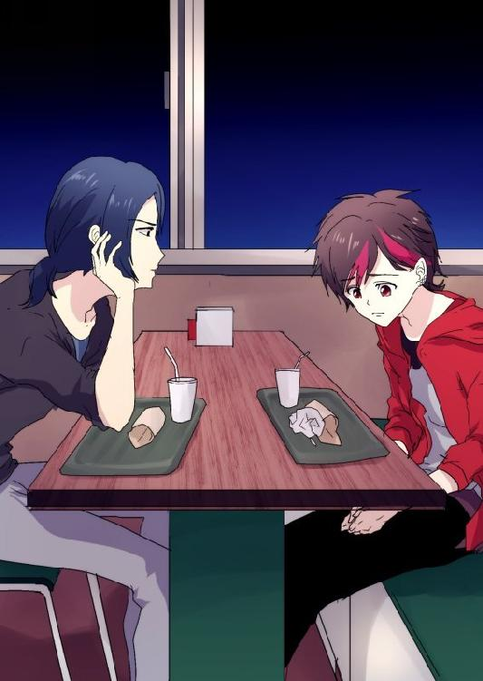

| あがり症のメガネ男子が大聴衆の前で英語のスピーチができるようになるまで | |
| 神木けいち | |
| BeYourself (2018) | |
まだ肌寒い風が吹く、四月の朝。
通勤と通学で混み合う駅周辺の歩道を、ブレザー姿の少年が早足で歩いていく。
玉造類、十五歳。今年から県立西成高等学校に通うことになった、ピカピカの新一年生である。今日は登校初日、つまり、入学式当日だ。
１８５センチという高身長であるにも関わらず、どこか陰鬱なオーラを漂わせるのは、その猫背と、他人と目を合わせないよう落とした視線のせいだろう。よく見ると眉目の整ったなかなかの美少年であるが、いかんせん分厚い眼鏡とまつ毛までかかる前髪で、彼の魅力に気づく通行人はいない。
通学路として毎回突っ切ることになる、市内で一番大きな駅の構内を歩いていくと、見覚えのある少女が視界に入った。彼女は類に気づくと、手を振って、
「おーい、類いいい」
甲高い声が構内に響き渡る。類はびっくり仰天して、慌てて彼女に駆け寄り、
「え、絵美里。声が大きい」
「そう？」
絵美里、と呼ばれた少女はきょとんとした。
水掛絵美里。類の幼馴染であり、同じく西成高校の新一年生である。色白で、ぱっちりとした瞳が印象的な愛らしい少女だ。以前は類の近所に住んでいたが、中学一年生のとき、家庭の事情で県内の別の地域に引っ越した。高校入試の際に偶然再会して以来、二人は連絡を取り合うようになり、今日は待ち合わせて共に登校することになったのだ。
「そうだよ、周りにじろじろ見られるじゃないか......」
「何を言ってるの。注目されるうちが華なんだよ」
「注目って、俺はそういう意味で言ったんじゃ」
「それにしても類、制服似合ってるね。さすがはハーフ。背が高くてスタイルいいなあ」
類を頭からつま先まで観察する絵美里。言われた類は顔を蒼白にして、ぶんぶんと首を左右に振り、
「いや、そんなことないっ。お、お世辞なんて、いらないからっ」
「お世辞じゃないんだけどなあ」
絵美里は口を尖らせ、だが、おかしそうに類を見上げながら歩きだした。
駅の学校側の出口は直接歩道橋に繋がっている。眼下を走る目抜き通りの歩道には、制服姿の少年少女たちが歩いていた。西成高校の制服は県内の公立高校では珍しく、男子は二つボタンのブレザー、女子はセーラー服の組み合わせだ。
「え、絵美里も、すごく、セーラー服、似合ってる、よ」
自分に関する話題から逸らせようと、類は絵美里を褒めた。しかし、自分で自分の言葉に照れてしまい、途切れ途切れになる。
絵美里はぱあっと顔を輝かせて、
「ほんと？ 嬉しいなあ。ちょっと初日からこの色は張り切りすぎちゃったかもって不安だったんだけど」
そう言って、セーラーに羽織った白いカーディガンの裾を摘む。
「絵美里は、明るい色、似合うよ」
「ありがとっ。類はもう少し派手でもいいのに」
「そうかな？ これでも頑張ったんだけど」
「どこら辺を？」
「ほら」
類は半身をねじり、赤いリュックサックを絵美里に向けた。ファスナーに吊り下げられた人形――美少女アニメのキャラクターが揺れる。
「あと、これも」
ポケットから取り出した携帯には、やはりアニメキャラクターの少女のストラップが繋がれていた。
常に笑顔を絶やさない絵美里も、さすがにこのときとばかりは口を噤んで真顔になったが、慌てて引きつった笑顔を作り、
「そうじゃなくてさ。髪型とか、その眼鏡とか――」
「いやどうせ俺はどんな格好しても全然似合わないよ背が高いだけでひょろひょろで」
まくし立てるように一息で返答する類。常に同級生より頭一つ飛び抜けた高身長が、彼のコンプレックスだった。幼い頃はハーフとしての顔立ちをからかわれたこともあり、自分の容姿をひどく嫌っている。
「相変わらずだなあ、類は」
絵美里はしたかなさそうに笑った。それでも、幼いときから変わらない性格の幼馴染に、ほっとするのだった。
西成高校は田舎にある。西成高校周辺が田舎というよりは、市全体が田舎なのである。
二つの駅が並ぶ地区周辺はニュータウンとして栄えているが、市全体の宅地面積は二割にも満たない。駅から十分も車を走らせれば、すぐに広大な田畑が目に飛び込んでくる。
それでも町を歩くと、大きなバックパックを背負った外国人観光客がよく目に入る。理由は単純明快、市内に空港があるからだ。えてして空港とは田舎にあるものであるが、ここも決して例外ではなかった。
駅から徒歩で十五分、「旧」ニュータウン地区の端にある西成高校の昇降口前には、新一年生がわらわらと垣根を作っていた。
ガラスに貼られた、クラス割りの名簿を確認するためである。
「クラス......違う」
絵美里の傍ら、類は呆然と呟いた。自分の名前が載ったクラスに、絵美里の名前はなかった。
「まあ、七分の一の確率だから」
さらりと言う絵美里の両肩を、類はわしっと掴み、
「絵美里はいいじゃないかっ。誰とでもすぐに仲良くなれるだろう。で、でも俺は......」
「大丈夫、大丈夫。類だってすぐに友達できるって」
絵美里は溌剌とした笑顔を浮かべたが、類は泣きそうな顔になった。
類が通っていた中学校は同じ市内にあり、西成高校は公立高校の中でも断トツに近い。しかし今年は珍しいことに、西成に進学した者は彼しかいなかった。容姿だけでなく人付き合いにもコンプレックスがある彼にとって、幼馴染の絵美里は、異性といえども新天地で心の拠り所になるはずだったのだが――。
同じクラスになるという期待は、ここにあっさり打ち砕かれたわけである。
「絵美里、お願いだ。友達を作るコツを教えてくれ」
類は世にも情けない顔で手の平を合わせた。絵美里は困ったように笑いながら、
「うーん。コツねえ。やっぱり初日は自己紹介が要じゃないかな」
「自己......紹介......」
呟きながら、糸で引かれるようにすーっと後方に傾いていく類。絵美里は慌てて彼の背中を支え、
「ちょっと、初日から倒れない！」
「ご、ごめん。想像したら、つい......」
「とにかく校舎に入ろっ」
絵美里は顔面蒼白の類を昇降口に押し込むと、
「ほら、上履きに履き替えて。出席番号はちゃんと見た？ Ｃ組の下駄箱はこっちだよ」
テキパキと指示を送ってやり、上履きに履き替えた彼を廊下の隅に引っ張っていく。教室へ流れていく生徒と、それを見守っている教師が二人に胡乱な目を向けるが、もともと絵美里は異性との付き合いにおいて瓜田李下を気にするような性格ではなかったし、今のところ類にもそんなことを気にする余裕はちょっとなかった。
「安心して、わたしが自己紹介のコツ、教えてあげるから」
「ほんとに？」
類はごくりと唾を飲み込み、背中を丸めて絵美里と顔を突き合わせる。絵美里は大きく頷いた。
入学式が終わり、高校生活初のホームルームが始まった。
類が所属するＣ組の担任は、御年二十九歳、男性の体育教師だった。彼は黒板に「前林守」と大きな字で書いて、簡単に自己紹介した後、
「では、今から一人ひとり自己紹介をしてもらう」
にっかりと笑って、教卓に両手をついた。
「全員に顔が見えるよう、教壇の上でするように。では出席番号１番から」
かくして、新学期お馴染みの自己紹介タイムがスタートした。
生徒は各々落ち着いた笑みを浮かべながら、氏名や出身、趣味、所属していた部活などを紹介していく。各々終わるたびに拍手が起こり、緊張で意識が遠のいていた類をハッと現実に引き戻す。
そして。
「では次、玉造類くん」
「は、はいっ」
不安と緊張ですっかり馬耳東風だった類も、さすがに自分の名前にはしっかり反応し、立ち上がった。
相変わらずの猫背で座席の間を歩いていき、教壇に上る。教卓の前に来ると、ゆっくり体を生徒たちに向け、恐る恐る目線を持ち上げようとしたところに――
「......すげえ背ぇ高い」
ぼそっと呟いた声がどこからか聞こえてきた。類は俯いたまま、びくっと肩を震わす。
続けて、
「もしかしてハーフじゃない？」
「肌白い、羨ましい」
こそこそと囁き声が湧き始める。類はますます緊張して、まさに口から心臓が飛び出さんばかりの動悸を覚えたが、
（大丈夫だ......絵美里が、コツを教えてくれたから......）
絵美里の言葉を思い出す。
『まず元気に挨拶すること。初めに大きな声を出せば、緊張もほぐれるよ。え？ どんな挨拶かって？ それはみんなに覚えてもらえるような――』
実際、目立つようなことは何一つしたくないのだが、ここはクラスに溶け込む方が先決である。
類は意を決してすうっと息を吸うと、
「ＨＯＬＡ！（やあ！）」
大音声で叫び、右手を素早く大きく掲げた。生徒たちはぎょっとして、彼の右手に視線を向ける。
「玉造類と申しますっ。父親がスペイン人です。でもスペイン語は、ほとんど、話せません」
右手を上げたまま、腹話術の人形のように口をパクパクさせて語る類。顔の大半の筋肉が緊張ゆえに硬直状態なのだ。生徒たちは呆気に取られた表情で類を見つめる。
『まずは自分と共通の趣味の人を見つけるといいよ。質問したりするのはどう？』
「趣味は、アニメを、観ることで、特技はアコースティックギターですっ。この中で、ギター弾ける人、いますか！？」
類は相変わらず右手を上げたまま、かっとまなこを見開き、錆びたロボットのようたギギーっと首を回した。目が合った左端の女子生徒は「ひっ」と怯えた声を漏らす。類は炯々とした瞳で、右から左へと教室全体を見渡したが、皆、彼の鬼気迫る様相に度肝を抜かれてしまい、質問されていることをすっかり忘れてしまった。結局、返答する者は現れなかった。
「できるだけ早くクラスに馴染みたいと思っていますので、皆さん、どうか、よろしくお願いしますっ！」
類はそう叫んで締めくくり、ばっと右手を下ろすと、教卓に頭をぶつけんばかりの勢いで頭を深く下げた。
白々とした空気が流れる。生徒たちと同様、すっかり面食らっていた担任の守が、
「......あ、ありがとう。みんな、拍手」
促された生徒たちは動揺しつつも拍手する。
（――お、お、終わった）
類は上半身を起こすと、体を九十度回転させ、近衛兵のような足取りで教壇を歩きだす。
再び体を回転させ、教室後方にある自分の座席を視界に捉えた。
（あそこまで帰れば、安心。全部、終わり――）
自らに言い聞かせながら、歩を進める。右足を踏み下ろした瞬間、類は失念していたあることを思い出した。
自分は教壇の上にいたのだ。
それを思い出したときには、もう、手遅れだった。
類は教壇の段差から足を踏み外し、頭から床に落下した。
「まさかほんとに倒れるとは」
放課後、昇降口で事情を聞いた絵美里は眉を下げて笑った。
類の額にはぷっくらとタンコブができていた。転んですぐ保健室に運ばれ、氷で冷やしていたものの、この有様である。幸い、眼鏡はつんのめった時に飛んでいったので無事だった。
「まあ、インパクトはあったんじゃない？」
絵美里はとんとん、とローファーのつま先を鳴らして、下駄箱から靴を取り出す類を振り返る。
類はがっくりと肩を落としながら、ローファーを放り、
「こんなインパクトは求めてない......」
「人前に立つと緊張するのは、やっぱりあの事件があったから？」
類は靴を履くと、絵美里の隣に並び、
「ああ......。あれがトラウマになってて......」
昇降口のガラス扉を引いた、その瞬間。
「類ー、 絵美里ちゃーん。こっちよー！」
二人を呼ぶ女性の声がして、類と絵美里が驚いて前方に目を向ける。
校門までの道中には、三十人ほどの人だかりができていた。ホームルームを終えて昇降口から出てきた新一年生と、入学式に出席した保護者たちである。共に記念写真を撮るために、保護者が我が子を出待ちをしているのだ。
その群衆の中に、ぶんぶんと大きく手を振る女性の姿があった。二人を呼んだ声の主であり、類の母親、由紀子である。黒のワンピーススーツに身を包み、赤い鞄を片手に下げている。
その傍には類の父親であるスーツ姿のラモンと、中学校の制服を着た妹の洋、さらに絵美里の母親である久美も立っていた。
「絵美里ちゃん久しぶりねえ！ ちょうど今、絵美里ちゃんのお母さんに会ったところなのよ」
由紀子はにこにこと、近づいてきた絵美里に告げた。桃色のジャケットを着た久美も、目を線にして笑っている。
「どうも、お久しぶりです」
絵美里は人好きのする笑みでお辞儀をした。
「お兄ちゃん、おでこ赤くなってるよ。どうしたの？」
類より二つ年下の洋が、怪訝な顔で類を見上げる。類はぎくっとして、
「ちょっと、転んだだけだ。気にしないでくれ」
「類くん、本当にいい学校選んだわねえ。似合ってるわ、ブレザー」
玉造一家の背後から、由紀子よりも十ほど年上の女性が顔を覗かせる。見ると、五十代、六十代辺りの年齢の女性たち五人が、玉造家の後方に並んで一様に笑顔を類に向けていた。
絵美里は正面を向きながら、
「類、あの奥様方、誰？」
「うちのスペイン語教室に通ってる生徒さんたち。どうしてここに......」
「なんでって、類くんの晴れ舞台を見に来るためじゃない。わたしたちにとっても息子同然なんだから！」
地獄耳の奥様方の一人がそう答え、がははと豪快に笑う。ここに集まっている面々は、類が小学生のときから、父ラモンの経営するスペイン語教室に通っている生徒たちだ。玉造家は市内でも田舎の、まだ因習の強い地区に住んでいるので、隣人との繋がりが強い。息子同然という表現は決して大げさではなかった。
「やっぱり背が高いとブレザーが似合うわあ。モデルさんみたい！」
「いやいや、類は背が高いのがコンプレックスらしくてね」
黒いスーツ姿のラモンは鳶色の頭に手を置きながら、わははと笑った。彼の身長は１８０センチ。すでに息子に抜かされていた。
「まあ、贅沢な悩みだこと！」
「うちの息子なんてあと５センチあればっていつも嘆いてるのに......」
と奥様方の間で、がやがやした談笑が始まり、
「いいわね、類くん、きっと薔薇色の学園生活が待っているんでしょうね！」
そう、やにわに言われた類は、生気の抜けた目をして、
「薔薇色の......」
教壇から倒れ込んだ自分のみっともない姿を思い出し、全く期待の持てない高校生活の始まりに憂鬱な気分になるのだった。
三日後。新一年生を集めて、部活動説明会が開かれた。場所は一学年の生徒がまるまる収容できる広さがある、冷暖房完備の文化ホールである。
生徒たちは出席番号順に整列し、組ごとに入場していく。ステージの上には生徒会の三年生の男女二人が立ち並び、少し緊張気味に座席の間を進む新一年生たちに笑顔を振りまいていた。
類の席は列の端だった。腰を下ろして、事前に配られたプログラムに目を向けようとしたところに、
「おはようございます、玉造くん」
左隣に座った同級生の少女に挨拶され、類は飛び上がった。
「あ、お、お......おはよう。えっと......」
「竜台すぐみです。席はすぐそばなのに、話したことありませんでしたよね」
竜台すぐみはにっこりと笑った。
「うん、そ、そうだね」
類はどぎまぎしながら眼鏡に指を当て、ちらっちらっと目を合わせたり合わせなかったりする。
まだクラス全員の顔と名前は覚えていないが、彼女が同級生から「すぐみ」と呼ばれていることは知っていた。女子の中では割と背が高く、清楚な雰囲気を漂わせる美少女だ。
すぐみは天使のような笑顔を浮かべながら、類に顔を向けている。類は耳たぶまで赤くしながら、頭の中でパニックを起こし、
（な、なんでずっと俺を見つめてるんだろう......。なんか言った方がいいのかな？ で、でも女の子とどんな話をすればいいんだああ！？）
奥手で、基本的に女子とは話さない（絵美里は例外だ）類には、自分から気の利いた話題を振る術など持ち合わせていない。半目の状態で口をぱくぱくさせていると、
「よろしくお願いしますね」
すぐみは可愛らしく、ちょこんと首を横に傾けた。
（......あれ？）
類はぽかんとして、だが、慌てて首をぶんぶんと上下させて、
「こちらこそ、よろしく！」
すぐみは満足そうに小さく頷くと、正面に向き直り、手に持っていたプログラムに視線を移した。
類は激しく鼓動する胸を押さえながら、
（何だったんだろう、今の間......）
幸せそうに微笑を湛える、すぐみの横顔を一瞥し、
（......もしかして、すごくゆったりとした子なのかな？）
緊張して慌てふためいていた自分と、マイペースなすぐみの間に、大きな時差ができてしまったのかもしれない。そう結論づけた類は、もう一度、すぐみをちらりと横目で見て、
（......やっぱり、可愛い子だよな）
また、ぽっと頬を赤くした。
間もなくして、説明会が始まった。生徒会が進行役を務める中、順々に各部活の部員たちがステージ上に現れ、二、三分の説明を行なう。運動部は実際にボールの投げ合いや打ち合いを見せたり、文化系の部活はスライドを見せたり音楽を流したりして創意工夫を凝らした発表をする。
ダンス部によるダンスショーが終わった後、生徒会の男子がマイクを手に取って、
「素晴らしいダンスでしたね、ありがとうございました。では、次は英語部の発表です」
いつの間にか説明という語が発表にすり替わっているが、今までの流れでは実際その方が適切だったので誰も気に留めなかった。
ステージの右側から現れたのは、花柄のワンピースに白いジャケットを羽織った若い女性だった。ウェーブしたロングの髪の毛は亜麻色に染め上げられ、パンプスを踏み鳴らす度に、ふわふわと揺れる。そこに立つだけで一気にステージが明るくなる、そんな華やかを持ち合わせた美女だった。
その彼女の圧倒的な存在感の陰となっていたのは、地味なスーツを着た黒髪の男性だった。よく目を凝らすと、彫りが深く、ヨーロッパ出身の顔立ちをしている。背中を丸めながら遠慮がちにステージを横切り、ノートパソコンの置かれた演壇に立つ。
女性は男性とは反対側、つまり二人が出てきた側に仁王立ちすると、マイクを口に近づけ、
「Hello, everyone !」
英語で聴衆に呼びかけた。返事はなかったが、彼女は気にする様子もなく、早速英語で自分を英語教員の津富浦麻衣、パソコンを操作する男性をＡＬＴでフランス人のトマ・カリエールと紹介した。ここまでは、どの生徒も聞き取れるレベルの英語だった。
その後と言えば、麻衣はベラベラとハイスピードで、身振り手振りを交えつつ英語を話し始めた。非ネイティブ話者でも「上手い」と分かる発音の良さと、教師にしてはあまりにも派手な風貌の彼女に興味を引かれた生徒たちは、好奇の目をしながら耳を傾けたが、そのうち、流暢な英語が聞き取れず大半が興味を失くしてしまう。
一応、話している内容が理解できるよう、ＡＬＴのトマがパソコンを操作して、スクリーンに英語表記のスライドを映していているのだが、麻衣の説明とタイミングが合わず、前後のスライドに行ったり来たりして、挙句の果てにはデスクトップが映ってしまったりと、ほとんど役に立っていなかった。
麻衣が説明を締めくり、英語で謝辞を述べた瞬間、チーンとベルが鳴った。各部活に与えられた発表時間が過ぎたことを知らせる音だ。時間ぴったりに発表を終わらせた麻衣に、群衆は感心してどよめく。
すると、麻衣は朗らかな笑みを浮かべて、
「では、ここからは日本語で説明したいと思います」
ざわっと聴衆が反応する。そんなことは意に介さず、麻衣は満悦のていで説明を始めた。
「わたしは英語を担当している津富浦麻衣で、こっちはＡＬＴでフランス出身のトマです。わたしたちは今年度から『英語部』を立ち上げました。部員はゼロですが、英語をマスターしたいと強く願う生徒さんたちを全身全霊で応援するつもりです」
そう言うと、ちらりとスライドに目を向けて、トマ、スライドが違うわよ、どうしてそっちに行くの、などと文句を垂れる。しかし練習不足なのか準備不足なのか、トマはやはり手こずってしまう。やがて、お前当てのスライドが映し出されると、
「えっと......ここに書かれているのが詳しい活動内容です。これから一つずつ紹介していきますね」
「津富浦先生、時間切れです。もう終わりにしてください」
生徒会がマイクでそう告げると、どっと会場全体に笑いが起こった。
「すぐ終わります！ はい、これが今年度のスケジュールのサンプルですけど......」
すぐ終わると言いながら、スライドに表示された項目を懇切丁寧に説明し始めたので、ステージの端からバーコード頭の教頭が飛び出してきて、
「いい加減にしなさい！ 教師なのに時間も守れないなんてみっともない。ほら、トマっ、きみもパソコンを閉じる！」
「まあまあ、教頭っ」
と類のクラス担任である守も教頭を追いかけて出てきたので、生徒たちはなお一層笑った。
「何するの、離してっ。まだ説明は終わってないのよ！」
結局、麻衣は教頭に引きずられる形で退場し、トマはおろおろしながらスライドを閉じ、麻衣の後を追いかけていった。
「みんな！ 文化棟の一階、多目的室前のオフィスで待ってるからああ！」
ステージの袖から麻衣の悲痛な叫びが響き、会場は爆笑の海に飲み込まれる。
臆病者で小心者の類は顔を強張らせ、口を一文字に結びながら、
（なんか、怖い......。うちのクラスの英語担当じゃなければいいけど......）
生徒会の男子生徒は失笑しつつ、
「津富浦先生、ありがとうございました。次は漫画研究部ですね。よろしくお願いします」
携帯がバイブし、類は画面に目を落とした。絵美里からだった。
『どこか仮入部する？』
類は指を動かして、
『漫画研究会を見学しようかな』
間もなくして、絵美里から返事がくる。
『やっぱしかー。わたしはダンス部を見学してくるから、今日は別々に帰ろっか』
類は小さく頷いて、
『うん、了解。また来週』
類と絵美里は入学式から毎日登下校を共にしていた。両者互いに特別な感情を抱いているわけではないのだが、一緒に登下校できる友達がいない類が世話好きな絵美里に甘えているのが現状である。このままだと本格的に他人から勘違いされてしまい、誰も登下校の仲として近づいてきてくれなくなるかもしれない、というのは、色恋沙汰にあまり関心のない絵美里と、そこまで頭の回らない愚鈍な類には考慮の範疇外だった。
「ねえ、玉造くん」
鈴の鳴るような声で呼びかけられた類は、はっと顔を上げた。
自分の机の前に、竜台すぐみが笑顔で佇んでいた。
類は間抜けな顔で数秒間、彼女の顔を見上げた後、
「は、はい！？」
弾かれるように椅子から腰を上げ、後方にぐらりと傾いて、どしーんと椅子もろともひっくり返った。
「大丈夫ですか？」
すぐみは仰向けになった類を、目を瞬かせて覗き込む。あまりにも間延びした声なので、緊張感はゼロであったが。
類は頭をさすりながらよろよろと立ち上がり、
「だ、大丈夫......。俺になにか用？」
「今日はこれから部活の見学する予定はありますか？」
「えっと、いや、......一応は」
「そうですか」
しゅん、とすぐみが残念そうに俯いたので、類は慌てて、
「ど、どうして？」
「実はわたし、見学したい部活があるんですが、一緒についてきてもらいたくて......。ひとりだと何だか行きづらいので」
小動物のように愛らしい大きな黒い瞳で見上げられ、類の頭からぽんっと蒸気が上がる。類はくらくらする頭を押さえながら、
（どうして俺なんだ？ 席が後ろだから？ 説明会のとき話したから？ それとも、それとも――）
頭をフル回転させて考察する類。しかし実のところ、すぐみはすでに何人も同級生の女子に声をかけており、各々見学したい部活があるため断られて、最終的に類に声をかけただけなのだった。もちろん、類がその真相に至るはずもなく、
「いいよ。俺が行こうと思ってたのは、また別の日でもいいし」
「本当ですか？」
ぱあっと眩しい笑顔を浮かべるすぐみ。類は（ああ、これは女神の笑顔だ......）と幸せな気分に浸って目を線にしながら、
「うん。ところで、何部？」
「英語部です」
類の笑顔にぴしっと亀裂が走った。
文化棟は本校舎の二階から渡り廊下で繋がっている。和室や調理室、コンピュータ室など特殊な教室が集まる校舎だ。一階の正面玄関から入ると、天窓のついた吹き抜けの階段が延びており、県立高校にしては近代的な造りを感じさせる。
文化ホールから吹奏楽の練習が聞こえてくる中、校舎の一階、とある部屋のドアの前には一組の男女が肩を並べて佇んでいた。
類とすぐみである。
ドアには『英語部 ご自由にお入りください』という貼り紙がされていた。
「ここですね」
すぐみは嬉しそうに言った。
類は黙って頷き、拳を握りしめながら、
（ここを開けたら、あの先生がいるのかなあ......いるんだろうなあ......できれば関わりたくないタイプだけど......）
そんな類の憂慮はつゆ知らず、すぐみがドアを横に引く。
そこは六畳ほどの小さな部屋だった。文化棟のモダンな雰囲気に調和した、壁や天井の白さが際立つ部屋だ。だが、いかんせん物がほとんどなく、部屋の中央に白い長机が二台くっついて並んでいるだけで、全体的に殺風景な印象を覚える。
ドアの正面、青のカーテンがかかった窓には、見覚えのある男性が腕を組んで寄りかかっていた。
「やあ、ようこそ。仮入部かい？」
いかにも優男といった雰囲気を漂わせるその男性は紛れもなく、部活動説明会でパソコンと格闘していたＡＬＴのトマであった。
すぐみが「はい」と返事をすると、トマははにかみながら小さく頭を下げ、
「僕は英語を教えているＡＬＴのトマ。で、こちらは二年生で英語部マネージャーの翔くん」
部屋の奥の角に佇んでいた細身の少年が無言で頭を下げる。愛想はないが、不機嫌そうでもない。必要最低限なことしか喋るつもりはない、そんな感じだ。
「で、こちらが、きみたちと同じく仮入部に来てくれた一年生の馬場さんと久米くん」
長机を囲うパイプ椅子には二人の男女が腰かけていた。
女子生徒の方がかしこまった表情で頭を深々と下げ、
「初めまして。馬場敦子です」
一方、男子生徒の方は満面の笑みで手を上げて、
「俺は久米雄大。よろしく」
「竜台すぐみです。よろしくお願いします」
「玉造類です」
類とすぐみが二人に倣って自己紹介すると、トマが頭に手をやりながら申し訳なさそうに、
「まだ顧問の津富浦先生が職員会議から戻ってこないんだ。椅子にかけて待っていてくれるかな」
すぐみはゆったりとしたペースで椅子を引き腰かける。類も続いて彼女の隣に座り、上目遣いで真向いの男女を窺った。
馬場敦子は肩のあたりで髪の毛を切りそろえた、精悍な雰囲気の少女だった。背筋をピンと張り、顎を引いて類とすぐみを見据える様子は、周囲にお花畑が咲いているすぐみとは全く正反対の様相だ。
久米雄大と名乗った少年は、がっちりとした、いかにもスポーツが得意そうな大柄な体格をしていた。茶色っぽい髪の毛はハリネズミのようにぴんぴんと伸びているが、それが彼の地毛の色でありクセなのだろう。人懐っこそうな笑みを浮かべ、興味津々で類とすぐみを眺めている。
翔がのそっと長机に近づき、
「コーヒーか紅茶、どっちがいい？」
低い、ハスキーな声で類とすぐみに尋ねた。突然の問いに類はどぎまぎしたが、
「紅茶をお願いします」
とすぐみが答えたので、
「お、俺も」
付和雷同で彼女に続いた。
翔は執事のように一礼すると、部屋の左奥にあるドアを開け、姿を消した。隣の部屋は何だろうと類は考える。文化棟の教室の配置についてはまだ詳しくないのだ。
見ると、敦子と雄大の前には湯気の立ち上る紙コップが置かれていた。どうやら仮入部にきた全員に飲み物が振舞われるらしい。
雄大が身を乗り出して、
「二人は何組？ 俺はＡ組で、馬場さんはＤ組なんだけど」
「わたしたちはＣ組です」
すぐみが答える。敦子はじっと類に目をやり、
「もしかして玉造くん、英語ペラペラ？」
「え？ そんなこと、ないけど」
「そうなんだ。何となく、ハーフかなあって思ったんだけど」
すぐみが両手を合わせて、
「お父さんがスペイン人なんですって。自己紹介のとき、スペイン語で挨拶してくれたんです」
「マジかよっ、聞かせてくれよ！」
驚愕の声を上げる雄大。類は顔を真っ青にして、
「ち、違うんだ！ ほんとはそんなに話せないんだけど、ただ、覚えてもらおうと思って......」
「玉造くんはとてもユーモアがあるんです」
「竜台さんお願い、ユーモアがあるとかハードルを上げないで」
泣きつく類を、敦子は面白おかしそうに眺めながら、
「竜台さんも外国語喋れるの？」
「いいえ、からっきし。ただ、今日の説明会の津富浦先生がとてもおもしろかったので。......馬場さんは？」
「わたしは十歳まで英会話教室に通ってたから、もう一度本格的に勉強したいなって思ったの」
「俺は竜台さんと同じだな。説明会の津富浦先生がめちゃくちゃ面白かったし、熱かったからな」
腕を組みながら、くっひっひと笑う雄大。
スペイン語が話せるという誤解をどうやって解こうかと類が頭を捻っていると、どんどん、と窓ガラスを叩く音が部屋に響いた。トマはびっくりしてカーテンの閉まった窓を振り返り、椅子に座る全員の視線が一点に集まる。
「なんだあ？」
雄大は目を丸くした。
トマが恐る恐るカーテンを開けると、そこには、
「津富浦先生！」
驚きの声を上げるトマ。津富浦麻衣は「開けてー！」と喚きながら窓に拳を叩きつける。ガラスを割ってしまいそうな勢いだったので、トマは急いで窓を開けた。
麻衣はワンピース一枚の出で立ちで、ひょいっと窓枠にまたがり、部屋の中に足を着地させた。それと同時に、紙コップを二つ持った翔が戻ってきて、
「予想より十分ほど早かったです」
「逃げてきたのよ。お手洗いに行くって嘘ついて、表玄関から回って来たわけ。どうせ他の部活の紹介が短く済んでたんだから、ちょっとぐらいオーバーしてもいいじゃないっ」
憤然と語る麻衣。相当ご立腹のようだ。翔は何も返さず、しなやかな手つきで紅茶の入った紙コップを類とすぐみの前に置く。
麻衣の後ろで、トマがそっと窓とカーテンを閉じて、
「あのー、先生。四人いらっしゃってますよ」
麻衣は巻き髪をさらりと手で払うと、
「ああ、ごめんなさいね。ちょっと教頭先生から大目玉食らっちゃって」
笑顔を取り繕い、片手に握っていた用紙を椅子に座る四人の前に置き、
「はい。この用紙に記入してね」
四人はぱちくりする。用紙にははっきりと「入部届」と書かれていた。
敦子が右手を上げて、
「先生。わたしたち、まだ入ると決めたわけじゃありません」
「そうなの？」
「興味はあるけど、まずは説明を聞きたいかな」
雄大が告げて、他の三人が同調して頷く。麻衣はぽんっと手の平を叩いて、
「ああ、そうよね。説明会では日本語の時間がなかったし。
英語部はその名の通り英語を勉強する部活よ。三年間で英語をマスターすることを目指しているわ」
「マスターって......英検一級とか？」
首を傾げる敦子に対し、麻衣は腰に手を当てて、
「一級取って何するつもり？」
「何するって......何だろ」
敦子は顎に指を当てて考え込んだ。麻衣は微笑みながら人差し指を立てて、
「英語でなりたい自分になる。それがこの部での英語をマスターするということよ」
「なりたい自分に、なる......」
「もし英語が使えたら、あなたたちは何がしたいかしら？ 実はね、今日は面白い映像を用意してあるのよ、これを観てちょうだい」
そう意気揚々と告げて、長机に置かれていたタブレットを立てる。少年少女たちは好奇の視線を向けた。
流れ出した映像は、誰もがテレビで一度は目にしたことがある、野球のヒーローインタビューのシーンだった。チームのマスコットを抱きかかえた外国人選手がマイクを向けられている。
「この選手......」
雄大が反応すると、麻衣はタブレットの縁に指を乗せながら、
「知ってる選手？」
「もちろん。この試合、テレビで観てました」
「へえ、野球が好きなんだね。でも、注目してほしいのは隣にいる通訳の男性。この人はわたしの大学の同級生なの。帰国子女ではないんだけど、一生懸命大学で英語を勉強して、今はこうして好きなスポーツを専門にした通訳の仕事をしているのよ」
ヒーローインタビューが終わり、次に麻衣が流した映像は小学校の英語の授業風景だった。まだ低学年の学級だろうか。日本人教師がカードを掲げると、生徒たちは元気な声で英単語を叫ぶ。
「児童英語教員の資格を取って、小学校で英語を教えている主婦たちよ。子どもたちは耳がいいから、発音には相当気をつけているそうだわ」
続いて、都内で行われている高校生による外国人旅行者への通訳ボランティア、そして英語スピーチコンテストの様子が流された。
たくさんの聴衆を目の前にして力強くスピーチする制服姿の少女に、類は釘付けになった。身振り手振りを交え、しっかりと全体を見渡し、堂々とした態度で流暢に英語を操っている。
（すごい......。こんなにたくさん人がいるのに）
スピーチの映像が終わったときには、観ていた四人の新一年生はすっかり目の色を変えていた。
麻衣はタブレットを畳むと、ばんっと両手を机に叩きつけた。四人は何事かと彼女に目を向ける。
「みんな、よく聞いてちょうだい。わたしはここに宣誓するわ。英語を習得すれば、あなたたちの人生は間違いなく変わる」
その笑みは自信に満ち溢れていた。麻衣は一人ひとりと視線を交えながら、
「この英語部は本気よ。ただ漫然と洋画を観たり、異文化理解と銘打ってパーティーばかり開いたりするお遊びの部活にするつもりは一切ないの。資格がほしいなら英検一級を目標にするわ。スピーチコンテストとディベートトーナメントには毎年エントリーして出場......いえ、優勝を目指しましょう。あなたたちが想像しているよりも言語習得の世界は奥深く、情熱的で、達成感を覚えるものなのよ。
ねえ、みんな。ここで世界を広げてみない？ 自分を変えてみない？ 英語に青春、かけてみない？」
澄んだ春空の下、野球部が威勢の良い声を上げながら練習に励んでいた。
その様子をバックネット越しに眺める一人の男子生徒がいた。ランニングを終え、ホーム近くのベンチに戻ってきた仮入部中の新一年生が、彼に気づいて、
「おーい、雄大！」
「よう、和也。やっぱり野球部に入るのか」
雄大は坊主頭の友人に笑みを送る。二人は小学生のとき同じ少年野球チームに入っていた仲だ。
「ああ、入学する前から決めてたんだ。雄大、お前も野球部に入らないか？」
「知ってるだろ。俺は中一のときに肘を壊してるんだ」
雄大が自嘲気味に笑うと、和也は真剣な眼差しを送り、
「マネージャーはどうだ。お前の生まれ持った野球の才能、無駄にしたくないだろ」
「......」
雄大はネット越しに友人を見つめた。ぐっと唇を噛むと、ゆっくり顔を伏せた。
英語部の仮入部を終えた類は、すぐみと敦子の二人と下校していた。三人とも電車通学なので、駅までは帰り道が一緒だ。
「へえ、竜台さん。そんなに遠くから来てるんだ」
すぐみの住所を聞いた敦子は目をまん丸くした。そこは確か、県境にある学区ぎりぎりの地域だ。
「どうしてそんな遠くから？」
「うーん」
尋ねられたすぐみは困ったように眉を下げて、可愛らしく首を傾げると、
「なんていうか......あら」
歩道橋から駅構内に入ってきたところで、前方に地図を広げながらきょろきょろと辺りを見回す外国人男性の姿が目に入った。
三人は歩く速度を落とし、彼の様子を遠巻きに窺いつつ、
「あの人、困っているんでしょうか？」
「どうする？ 行ってみる？」
「で、でも、俺たちの英語力で助けになるかな......」
割と大きな声で三人がこそこそ話し合っていると、彼らのすぐ脇を一人の少女が颯爽と追い抜いて、一直線に外国人に近づいていった。
それはロングの髪が印象的な、紛れもない西成の女子生徒だった。彼女が話しかけると、外国人は安堵したような表情をした。彼女は一緒になって地図を覗き込み、通路の奥を指しながら何やら説明を始める。外国人は納得したように頷くと、はっきりと英語で感謝を述べ、嬉々とした足取りで少女が指し示した方向に向かって歩いていった。
「すごい......」
類はぽつりと呟いた。その呟きが聞こえたのか、はたまた偶然か、流暢な英語で外国人を助けた少女は類たち三人組を振り返って、
「......！」
びくっと顔を背け、逃げるようにして改札口へと走っていった。
「今の子、一年生だ。多分、隣のクラス」
敦子は感嘆の混じった声で言った。
「かっこいいですね」
すぐみはうっとりと両手を組んだ。すでに当の本人は改札口の先へと姿を消していた。
すると、三人が向かっていた方向から、大笑いを上げる高校生の一団が歩いてきた。西成と同様、駅から二十分ほど歩いたところにある私立田山高校の生徒たちだ。女子は紺のブレザーにチェックのスカート、男子はチャックの学ランだ。
「田山高校の男子は学ランなんだね。玉造くんはブレザーと学ラン、どっちがよかった？」
「お、俺はブレザーがよかった。学ランだと、背が高く見えるから」
「別に変わらないと思うけどなあ。......あれ、すぐみどうしたの？」
突然、すたすたと歩き始めたすぐみに、敦子は瞠目する。すぐみは少し俯きながら手を振って、
「わたし、電車の時間があるので。それじゃ、また」
壁沿いを駆けていく彼女の後ろ姿を、類と敦子は狐につままれたような顔で見送った。
体育館前の石階段に座って携帯をいじっていた長田幸人は、向かいの柔道場の玄関から出てきた友人に気づき、腰を上げた。
「ったく、探したぞ。連絡ぐらいしろよな」
「悪い悪い。急に腹がいたくなって」
雄大は顔を赤らめながら頭を掻いた。幸人はぶすっと口を尖らせ、自分より背の高い雄大を見上げる。
同じ中学校出身で、西成でも同じクラスになった二人は、入学式の日から共に下校していた。今日は部活見学の日なので正門前で待ち合わせていたのだが、約束の時間になっても一向に雄大が現れなかったので、何度も連絡をよこした幸人の携帯にやっと返ってきた雄大の返事が、「柔道場のトイレにいる」であった。
「お前、腹弱かったっけ？」
野球場を左手に、正門に向かって歩きながら幸人が尋ねた。両手で自転車を押している。雄大よりも少し高校から離れた所に住んでいるので、自転車通学が許可されているのだ。
「いや、そんなことないけど」
「悪いもの食ったんじゃねえの」
「そうかもな」
はははっと笑う雄大。幸人は不機嫌そうに顔をしかめた。冗談で言ったのではなく本気で心配していたのに笑われたからだ。
「何むっとしてんだよ」
雄大が幸人の頭をわしゃわしゃと撫でる。幸人は飛びのいて、
「や、やめろよ！ セットが崩れるだろ！」
「何もしないほうがいいと思うけどなあ」
雄大は悠然と言ったが、幸人は頬を紅潮させながら憮然と髪の毛を整え始めた。
幸人はかなり見た目に気を使うタイプだ。低い身長と女っぽい顔立ちがコンプレックスらしく、いつもワックスで髪の毛をワイルドに決めていたり、私服では大きめのサイズを着ていたりする。だが親友の雄大曰く、「それが可愛いと言われる所以」なので、結局のところ自己満足の域を出なかった。
「で、軽音楽部はどうだったんだ？」
雄大が訊くと、幸人は不満そうに鼻を鳴らし、
「いまいちだな。一年前にできたばかりだって言うし、仮入部に来てたのもみんな素人だった」
「地元でバンド組んでるんだろ？ そっちで続ければいいじゃないか」
「もちろんそっちはそっちでやるけど、高校でも何かやりたいじゃん。お前はどうするのよ？」
「一つ見に行った」
「なんだ、図書室にいたんじゃないのか。どこ？」
「英語部」
「げっ。あのぶっ飛んでる先生のかよ」
幸人はあからさまに顔をしかめる。
津富浦麻衣による説明会での奇行は、あの後も生徒の間での話題になり、彼女に関する情報はいくらか耳にしていた。大学卒業後、新任で西成高校に採用され、今年で三年目になるという。浪人などしていなければ、年齢は二十五か六ぐらいだろう。その美貌には似つかない竹を割ったような性格で、生徒の中には彼女の熱烈なファンがいるとかいないとか。理由は不明だが、担任は一度も受け持ったことがないらしい。
「俺も含めて四人来てたぜ」
「どうだった？」
幸人が恐々と訊くと、雄大は神妙な面持ちで、
「考えさせられた」
「は？ 何を？」
「......俺は何がしたいんだろうって」
歩道を歩きながら、ネット越しに西成のグラウンドに目をやる。
野球部の野太いかけ声が響いている。もう仮入部の時間は終わっているだろう。二年生と三年生が、夏の大会に向けての本格的な練習を始めているに違いない。
雄大は少年野球に所属していたころの自分を回想した。あの時は本気でプロ野球選手になりたいと思っていた。毎試合テレビの前で好きなチームを応援していた。
でも――。
（今の俺に、野球以外に熱中できることがあるんだろうか）
怪我で野球をやめてから、将来の夢や目標について考えるのが鬱陶しくなってしまった。家から近いというだけで、この西成高校を選んだ。
雄大は無意識に手を握りしめる。
俺は将来どんな人になりたいんだろうか。
「類、部活は入るのかい？」
日曜日の夕食時、ラモンが箸で器用に里芋の煮ころがしを摘みながら尋ねた。
類は口に含んだ白米を呑み込んでから、
「分からない。でも、クラスメイトの付き添いで英語部の見学はしたよ」
「まあ、いいじゃない！ 空港もすぐ近くにあることだし、就職にも役立つわ」
由紀子は興奮気味に告げる。一方、類の隣に座る洋は眉をひそめて、
「でも話すのが苦手なお兄ちゃんが英語の勉強して、本当に使えるようになるかな」
「洋、言語の持つパワーをなめてはいけない。言語は人格や人生を変えることもできるんだ。お父さんだって、日本語を勉強して大いに人生が変わったぞ」
「へえ、例えば？」
「こうして素晴らしい家族を持てたことさ。もし日本語に興味を持たず、日本に来ていなかったら、由紀子、きみという天使に出会うことはなかっただろう。ああ、きみを一目見たときの衝撃は今でも忘れられない」
「まあ、お父さんったら」
手を取り合い、うっとりと見つめ合うラモンと由紀子。洋はしょうもなさそうに首を振って、
「わたしはてっきりお兄ちゃんは漫研に入ると思ってた」
「ぎくっ」
「アニメや漫画なら家で十分でしょう。英語部にしなさいよ」
聞き捨てならないと首を回して告げる由紀子。類のオタク趣味は彼女にとっての憂慮事項だ。
「で、でも一緒に語れる友達がほしいんだよっ」
「やっぱり入りたいじゃん」
すかさず洋に突っ込まれ、類は「うっ」と呻いた。
ラモンはここぞとばかりに身を乗り出して、
「英語よりスペイン語にしなさい。スペイン語は楽しいぞー」
「それこそ家で教えてよ。そもそもスペイン語部なんてないし」
「スペイン語をやりたくないって言ったのは類じゃないか。いつの間にかアニメや漫画に没頭するようになって」
「英語、いいじゃない。きっと未来が広がるわ」
あくまで英語部を勧める母親に、類はため息混じりに肩をすくめた。
ここで世界を広げてみない？
津富浦先生の熱弁が、頭の中に響いた。
週明けの放課後、文化棟一階にて。
「結局、この三人が残ったわけね」
窓の前に仁王立ちした津富浦麻衣は、長机を囲う三人――竜台すぐみ、馬場敦子、そして玉造類を見下ろした。
「部として登録するには二人足りないんだけど、まあ、いいわ。当面は同好会として活動しましょう」
敦子は真剣な眼差しで麻衣を仰ぎ、すぐみは幸せそうに微笑んでいる。類は冷や汗を流しながら縮こまっていた。
（だ、男子、俺だけ......。一応、翔さんがいるけど、マネージャーだし、二年生だし......）
一晩延々と考えた挙句、英語部に入ることを決めた類。近づきやすそうな同性――久米雄大が仮入部に来ていたことが、少なからず入部の後押しになっていたのだが――
（やっぱりやめたんだ。男が語学勉強なんて、格好つかないから......）
とりあえず、麻衣の後ろで控えめに立っているトマが唯一の救いだろうか。彼は日本人よりも日本人らしい、温厚な青年だ。
「それじゃ、お互いの自己紹介でも――」
「遅くなりました」
がらがらっと廊下に続くドアが開いて、聞き覚えのある溌剌とした声が麻衣の言葉を遮った。
そこに立っていたのは久米雄大だった。彼はにっと歯を覗かせると、
「俺も入部しますよ、先生」
「待ってたよ、久米くん」
麻衣は力強く雄大を見返してから、彼の隣に佇む少年に視線を移し、
「そちらは？」
「中学校から友人で、同じクラスの長田幸人です。見学に連れてきました」
雄大に手首を掴まれ部屋に入ってきた幸人は、少し顔を伏せながら、落ち着かなそうに、
「......どうも」
「こいつ、お目当ての部活の印象があまりよくなかったらしくて。他におもしろそうな部活を探してるんですよ」
雄大が説明すると、麻衣は親指を立てて、
「久米くん、グッジョブ！」
「いや、でも、俺、英語とか全然できないし......」
おたおたと両手を振る幸人。そんな彼を麻衣はじっと見つめ、
「あなた、以前どこかで会ったことあるかしら？」
「え？ いや、ないと思いますけど......」
麻衣と幸人が同時に首を捻ったところに、部屋の奥の扉から翔が現れた。彼と顔を合わせた途端、幸人のまなこが驚愕に見開かれる。
「しょ、しょ、翔さん！？」
裏返るほどの頓狂な声に、名を呼ばれた本人以外の全員が目を丸くして幸人に注目した。
麻衣は腕を組み、
「知り合い？」
「ガブリエルズの翔さんですよね！ どうしてここに！？」
「ガブリエルズ？」
首を傾げた雄大に、幸人はぐっと掴みかかり、
「お前知らねえのかよ！？ ガブリエルズは全国的にも有名な新進気鋭のインディーズバンドだぞ！ 翔さんはその神懸かり的なギターテクニックとダイナミックな歌声でプロも大絶賛してるんだ！ ま、まさか、西成に通っていたとは......」
「ああ、バンド繋がりね。わたしはこの子が外で何やってるか詳しく知らないのよ。あんまり家では話してくれないから」
「あの......先生と翔さんはどういう関係なんですか？」
敦子が眉根を寄せて尋ねると、麻衣はあっさりと、
「あら、言ってなかったかしら。翔はわたしの弟よ」
「ええ！？」
それこそ、一同は素っ頓狂な声を上げて驚く。
翔は真顔で幸人を見据えながら、
「幸人。何度か駅前のライブハウスで会ったことがあるな」
「お、覚えてくれていたんですね！ 光栄です！」
「お前のバンドは総合的にはレベルが高い。ただ、革新的なものがないのが残念だ。おそらくメンバーのほとんどが音楽ばかりに目を向けてきたせいだろう。どうだ、この英語部で世界を広げてみないか？」
今まで無口だった翔が突然語り始めたので、先週集まっていた生徒たちは面食らってしまった。しかし、幸人だけは心奪われたような、どこか恍惚とした瞳で彼を見つめ、
「英語部で、世界を......」
「英語の発声練習はボーカルの上達にもつながる。それは俺が幼いときから英語を勉強して実感していることだ。英語ができれば歌詞の幅も広がる。理解できる曲も増える。これからのお前のバンド人生に必ず糧になるはずだ」
翔の語り口は真剣そのものだった。それだけ幸人の音楽の才能に期待しているのだろうか。翔と幸人のバンド活動を知らない生徒たちにはまったく分からぬところだった。
翔は僅かに口元を緩め、
「......それに、放課後、時間が空いたときにはギターを教えてやってもいい」
全員の視線が翔からゆっくりと幸人に移る。幸人は張りつめた顔で椅子に座る生徒たちを順々に見た後、正面の麻衣と目を合わせ、
「......入部します、俺」
麻衣はとびきりの笑顔を浮かべた。ぱんっと両手を打ち鳴らすと、
「よしっ！ これで五人そろったから正式に部として申請できるわ！ さっそく田山高校に連絡しなくちゃ」
「田山高校？」
雄大が幸人の肩に腕を回しながら目を瞬く。麻衣は頷いて、
「田山高校には英語部があるのよ。もし西成に英語部ができたら合同でスピーチ発表をしましょうって話をしていたの」
「田山高校......」
すぐみが小さな声で呟き、曇った表情で視線を落とした。だが、周囲が彼女の変化に気づくことはなかった。類が振り子のように頭をぐらんぐらんさせ、椅子から転げ落ちそうになったからだ。
「だ、大丈夫、玉造くん？」
敦子が焦って声をかけると、類は何とか持ちこたえ、額に手を当てて、
「う、うん......ちょっと、スピーチって聞いて、くらっと来ちゃって」
麻衣はそんな彼を気に留めることもなく、喜色満面で胸を張り、
「それじゃ、久米くんと長田くんも席に着いて。今日はひとまずお互いの自己紹介をして終わりにしましょう。明日から本格的に活動開始よ！」
一週間前まで美しく咲き誇っていた線路沿いの桜並木は、すっかり青葉が変わっていた。
そんな移ろいを気に留めることもなく、馬場敦子は電車の座席に腰かけ、熱心に本を読んでいた。
西成高校は下り方面になるため、通勤通学の時間帯でも敦子の乗車駅からだと座れるほど空いている。西成から二番目に近い駅はニュータウンの中にあるため、どっと乗客が入ってくるが、さらにそのひとつ前の駅で大量の高校生が降りるので、最終的に座れない乗客はほとんどいない。本日も同様、その駅では空いた座席を利用客がちょうど埋める形になる。
「おはよう、馬場さん」
電車が走り出した矢先、声をかけられた敦子は驚いて顔を上げた。
そこにはリュックサックを背負った優男が吊革に掴まって立っていた。
「トマ！ おはようございます。電車通勤なんですか？」
「うん。自転車でも行ける距離なんだけど、自宅が駅に近いからね」
何度聞いても惚れ惚れする流暢な日本語で答えるトマ。彼は敦子の読んでいた本を覗き込んで、
「それ、英単語のテキスト？」
「はい。高校受験のために使ってたものです。もう一度、復習しようと思って」
単語帳には色とりどりのマーカーが引かれ、細々とした字でメモが書かれている。トマは感心して、
「馬場さんは真面目なんだね」
「わたし、何事も全力で取り組まなきゃって思う性分で」
「いいことだと思うよ。何でも全力で取り組めば、きっと楽しいよ」
「そうですかね」
敦子は笑った。しかし、どこか後ろめたげな表情で、
「そうなれば、いいんですけど......」
『英語部頑張ってねー』
『ありがとう、絵美里もダンス部、頑張って』
絵美里へ返事を送った類は、携帯をポケットに入れ、席を立った。
絵美里は先週見学したダンス部に入会した。本格的に習ったことはないが、ダンスは小学生のときから興味があったという。ダンス部は新入部員を含めても九人と少なく、男子は一人もいない。
類は机に乗せたリュックを背負った。顔を上げると、ちょうど廊下の掃除を終えて教室に戻ってきたすぐみと目が合う。
すぐみは見ている方がとろけてしまいそうな笑顔を浮かべると、浮遊しているようなふわーっとした足取りで類に近づき、
「玉造くん、一緒に行きましょう」
「あ、うん。そうだね」
すぐみが箒を掃除用具入れにしまい、学校鞄を肩にかけるのを待ってから、類は彼女と一緒に教室を出る。
「体操服、持ってきましたか？」
「うん。持ってきたよ。一体何するんだろう......」
類は廊下を歩きながら首を捻った。
昨日、お互いの自己紹介を終えた英語部メンバーたちに、顧問の津富浦麻衣は翌日体操服を持ってくるようにと告げた。あとは筆記用具さえあれば、他に何も必要ないという。
文化棟へ続く渡り廊下は女子生徒で埋め尽くされていた。そのほとんどが吹奏楽部の部員だ。西成の吹奏楽部の部員は百人を優に超え、実力も折り紙付きで全国大会の常連である。基本的に吹奏楽部は文化ホールか文化棟のロビーや廊下で練習を行なっているので、放課後まもない時間帯は渡り廊下がこうして大渋滞する。男子の部員もいるが、その数は圧倒的に少なかった。『英語部 ご自由にお入りください』と未だに張り紙がされたドアを引くと、長机と椅子だけが置かれたがらんとした部室の隅に、英語部マネージャーの翔が佇んでいた。
「どうも」
類はおずおずと頭を下げる。翔はこくりと頷いて応えた。
部室には翔しかいなかった。類とすぐみは隣同士に椅子に座る。
（翔さん......座らなくていいのかな）
類は膝の上に手を置きながら、ちらちらと振り返る――勇気もなくテーブルの上を凝視して、
（今日もずっと立ってるのかな。疲れないのかな。それとも俺から、座ったらどうですかって聞いた方がいいのかな）
翔は先週も昨日も、終始部室の隅に立っていた。麻衣に何かを指示されない限りは、蝋人形のように動かない。あくまで雑務をこなす従順寡黙な執事に徹しているらしい。
そんな彼に心を砕いて頭の中であれこれ考え、思考がオーバーヒートしてきたところに、雄大と幸人がそろって現れた。
「よっ」
雄大は手を上げて陽気に挨拶した。
一方、幸人は気恥ずかしそうに類とすぐみに「ちは」と挨拶してから、翔に体を向けて、
「お疲れ様です、翔さん！」
腰を九十度曲げ、大声を張る。幸人にとって翔は崇敬の対象だった。
「今日はあっちゃんは部活休むらしいぜ」
椅子に腰かけて雄大が告げた。どうやら、あっちゃんというのは敦子のことらしい。
すぐみが目を丸くして、
「そうなんですか？」
「さっき、そこの渡り廊下まで一緒に来てたんだけどよ。家から電話がかかってきて、急に用事ができたって」
「それは残念です」
しゅんとするすぐみ。その悲しそうな表情も、また可愛らしかった。
雄大が身を乗り出して、
「それよりさ、俺たちまだ連絡先交換してないっしょ？ 英語部でグループ作ろうぜ」
各々携帯を取り出し、連絡先を交換し合う部員たち。敦子の連絡先は仮入部の帰宅時に類とすぐみが聞いていたので、この場でグループに招待することができた。
「あとは......」
ちらっと翔に視線を送る雄大。
翔は小さく頷いて、
「いいぞ」
意外にもあっさりと連絡先を教えてくれた。
「しょ、翔さんのＩＤが、お、お、俺の携帯に......」
幸人は自らの携帯を両手で握りしめ、感動に打ち震える。すると間もなくして、幸人宛に、
『よろしく』
と、翔からメッセージが入った瞬間、幸人はぶはっと鼻血を噴き出して背中から床に倒れ込んだ。
「な、長田くん！」
類が慌てて駆け寄り、彼を介抱する。そんな彼を気にする様子もなく、雄大はすぐみに顔を向け、
「すぐみっちは男子からたくさん連絡先聞かれるんじゃないの？ 可愛いから、モテんだろ？」
「そんなことないです。それに、高校ではしっかりと学業に専念したいんです。英語部に入ったからには、真面目に勉強するつもりです」
穏やかな口調だが、芯の通った回答をするすぐみ。類は、「翔さんが俺にメールを......翔さんが俺にメールを......」と目を回しながらうわ言を漏らす幸人を抱き起こしつつ、彼女を振り返って、
（おっとりしてるけど、根はしっかりしてるんだな......）
そう感心していると、がらがらっとドアが開いた。
「おまたせ！」
元気溌剌な声で登場したのは、我らが英語部顧問の美人英語教師、津富浦麻衣だった。
「やあ、どうも」
すでに麻衣の元気の陰になっているトマが、彼女の背後からへらへらと顔を覗かせた。
二人とも、上下ジャージの格好だった。
「先生、あっちゃんは今日お休みだそうですよ」
「知ってるわ。さっき連絡があったから。それにしてもみんな、どうして制服なの？ 体操服を着てくるように言わなかった？」
「そ、その、着てくるようには言われてないので......」
幸人を椅子に乗せた類が釈明する。麻衣は目をぱちくりして、
「あら、そうだったかしら？ じゃあ、ロッカーで着替えてきて。正門前に集合ね」
「あのう......体操服着て、何するんですか？」
すぐみが下唇に指を当てながら問うと、麻衣はお得意の腰に手を当てたポーズで、
「何するって、もちろん走るのよ！」
校内に響く、運動部のランニングのかけ声。
それに混じって、英単語をリズムよく叫ぶ声が聞こえてくる。バックネット裏から正門へと続くコンクリートを走るその集団は、体操服を身にまとった英語部員たちである。
「声が小さくなってるよ！ お腹から声出して！」
先頭を走る麻衣が振り返って声をかけた。彼女の傍らには口を閉じて淡々と走るマネージャーの翔がおり、その二人の後ろに新入部員四名が続く。しんがりはトマだ。
麻衣が動詞の活用を叫び、それを部員たちが復唱する。それが彼女の率いる英語部のかけ声だった。
すれ違う生徒たちは目を丸くするか、もしくは忍び笑いをするかのどちらかだ。同僚の教師たちは、また津富浦先生がけったいなことを始めたと笑うだけである。
「あの、先生......」
走り始めて五分、すでに顎が出ている幸人が口を開いた。
「何？」
「どうして走るんですか」
「どうしてって......」
麻衣は減速し、幸人と並走すると、満面の笑みで彼の背中を思いっきり叩き、
「気持ちいいからに決まってるじゃない！」
「そ、そんな理由で......」
げほげほと咳き込みながら幸人はごちる。
トマの前、つまり最後尾から二番目を走る類は、すでにへとへとになりながら、二人のかけ合いを眺めていた。
（どうして、話す余裕が、あるんだろう......みんな、運動神経、いいんだな......）
雄大は幼いときから野球チームに入っていただけあって、余裕の面持ちで鼻呼吸のまま走っている。幸人は疲れているようだが、復唱するときの声の大きさは変わっていない。一番元気よく爽快に走っているのはもちろん麻衣で、隣を走る翔も難なく足を動かしているが、何より一番驚いたのは、すぐみが涼しい顔で走っていることだ。
（竜台さん、何かスポーツしてたのかな......）
実際、この部で一番体力がないのは類だった。ちなみに二番目はトマだ。
「言語学習は暗い部屋に閉じこもってするものじゃないの。全身を使って学ぶものなのよ。暗記をするには関連付けが一番、何をするにも体が資本！ はい、今度は幸人がリーダー！」
「え？ あ、えーと、COME, CAME, COME......」
「声が小さああい！」
西成高校から道路を一本挟んだところにある運動公園は、陸上競技場と野球場、体育館、球戯場、相撲場、市営プール、テニスコートを備えた、市内で一番大きな総合運動公園である。
十分間のランニングを終えた英語部は、運動公園の中心部、大きく傾斜した芝生の上に集まった。走り終えてから五分ほどウォーキングをしたので、全員おおかた呼吸は整っている。麻衣はジャージを腰に巻き付けた装いで、一列に並ぶ英語部員を見据えると、
「それじゃ、今からアルファベットコールを始めるよ」
「アルファベット、コール......？」
怪訝な顔をした類に、麻衣は頷き返して、
「うん。ＡからＺまでを丁寧に滑舌よく叫ぶの。わたしがＡって叫んだら。みんなも腹から声を出して叫んでね」
「わざわざ叫ぶ必要あるのか」
幸人があからさまに嫌そうな顔をする。すでに十分間も英単語を叫び続け、好奇の目に晒されてきたのだ。幸い、彼らがいる芝生の周りに人はいないが。
麻衣は意味ありげな笑みを浮かべて、
「あるからやるんだよ。みんな、英語と日本語の発音の違いって、どこにあると思う？」
唐突な質問に、部員たちは顔を見合わせた。雄大が視線を上げて、
「英語の方が、声がでかい気がするな」
「なるほどね。他には？」
「英語を話す人って、女性の方でも声がしっかり声が出ている気がします」
すぐみが手の指を絡ませながら答えた。麻衣は満足げに頷くと、
「確かに、そうかもしれないね。みんな、いい点ついてるよ。トマ、正解を教えてあげて」
列の端っこ、雄大の隣で胡坐をかいていたトマは微笑んで、
「アクセントの違い、ですね」
「アクセントの違い？」
首を傾げる雄大。麻衣は手の平をひらりと返して、
「簡単に言えばね、英語と日本語の発音の違いって、『強弱』の言語か『高低』の言語か、ってことなの」
「強弱か、高低か......？」
幸人がますます混乱して眉間にしわを寄せた。
「アメリカっていう単語で考えてみようか。日本語で発音すると、『ア』の音節が低くなって、『メリカ』の音節が高くなるよね」
麻衣が告げると、部員たちは各々「アメリカ」と声に出して確かめた。雄大が納得したように、
「......確かに」
「英語で発音すると、ＡＭＥＲＩＣＡ。『メ』の音節が強くて、『ア』『リカ』の音節が弱くなるのが分かるね。
つまり、英語の発音で大切なのは、どこに強弱を置くかっていうこと。もちろん、高低がないわけじゃないけど、基本的には強弱の方が大事なの。これが日本語と英語の発音における大きな相違点よ。強く言うところは強く言う。覚えておいてね。だから声にメリハリをつけるために、大きな声を出すトレーニングをします。公園全体に響き渡るような大音声でね」
それから運動公園に、アルファベットを叫ぶ男女の声が響いた。各々がしっかりと腹から声を出せるようになると、麻衣は子音を強調しながら発音するよう勧めた。
ＡからＺまでを三周した後、皆は芝生を降りて、木の陰に腰を下ろす。
「みんな、お疲れ様。いい声出てたよ」
麻衣はそう告げて、輪になった部員たちを見回すと、
「これから英語を勉強していく上で、ひとつ意識してほしいことがあるの。それはモチベーション、つまり動機づけの問題よ。スポーツをする上でも動機づけはとても重要だけど、それは言語学習にも言えること。一般的に動機づけは『内発的』なものと『外発的』なものの二種類に分かれるわ。内発的というのは自分の内側から湧き上がってくる動機のこと。野球少年に例えるなら、野球が好きで好きでたまらないといった感じね。それじゃ、外発的というのはどういうことだと思う？ 野球少年に例えると？」
雄大が野球に興味があることを念頭に、麻衣が彼に視線を送る。雄大はほとんど時間をかけず、口を開いて、
「親が野球好きでやらされてる、とか......？」
「その通り。じゃあ、内発的な動機と外発的な動機、どっちがベターかな？」
「そりゃ内発的だろ。好きこそものの上手なれっていうし」
幸人が憮然と答える。だが、雄大は顎に手を当てて、
「でも、親とかチームメイトに喜んでもらえるのも嬉しいよな。褒めて伸ばすって手もあるだろ」
「二人とも正解。動機づけは内発的なもの、外発的なもの、どちらも必要なの。どちらか単一にならないことが重要よ。とにかく頑張らなきゃいけない、という強迫観念に囚われているようなら、自分はなぜ英語を勉強したいのか思い出して。反対に、ただこういう人になりたいというイメージだけに囚われているようなら、資格取得の目標を立てたり客観的に自分の弱点を拾い上げたりして、自らを叱咤するようにするの。定期的な自己吟味を忘れずにね。分かった？」
真剣な眼差しを向けられた四人の部員は大きく頷いた。類は唇を折り込んで、
（もしかしたら自分を変えられるかもしれない、そう思って入部したけど、動機ってそういうことであってるのかな？）
心配になってきょろきょろと左右の部員たちを見回す。皆、何か考えることがあるようで、彼の視線には気づかない。そっと顔を正面に戻し、芝生に視線を落としながら、
（い、いいんだよね......そういう、動機で。自分を変えてみないって、先生も言ってたし......）
「それでは、これから前期のスケジュールを配ります。翔、お願い」
翔がポケットから封筒を取り出し、中に入れてあったプリントを配る。そこには前期に予定している活動内容が表になって書かれていた。
「昨日話した田山高校との合同活動は今月末の木曜日の放課後に決まったわ。内容はスピーチ発表。スピーチと言っても、レシテーション、つまり既存のスピーチの暗唱よ。もう一枚のプリントがその原稿。ゆっくり話して三分ってところね。今後二週間は、これをみっちり頭に叩き込むよ」
自室のベッドの上で膝を抱えながら、寝間着姿の類は携帯の画面と睨めっこしていた。風呂に入って部屋に戻ってから、五分間ずっとこの状態である。
（馬場さんに連絡した方がいいかな。今日の部活動のこと......）
本日立ち上げたばかりの英語部グループのチャットには、誰もメッセージを入れていなかった。中学生のときから人の繋がりが少ない類は、先駆けて書き込む勇気など持ち合わせていなかったが、部活を欠席した敦子には何かしら連絡を入れた方がいいのではないかと気を揉んでいたのだ。
しばらく悩んだ後、個人的に連絡することを思いつく。敦子のＩＤを確かめて、
『今日の部活内容、誰かから聞いた？』
どきどきしながら、じっと画面を見つめて返事を待つ。
すると、携帯がブルブルと震えて着信音が流れた。驚いた勢いで携帯を宙に放り投げてしまい、おたおたとそれを両手で受け止める。
通話ボタンを押し、恐る恐る携帯を耳に近づけて、
「も、もしもし？」
「ごめん、電話しちゃって。今、大丈夫？」
敦子のはきはきとした声が聞こえてくる。類は赤面しながらぶんぶんと首を縦に振ったが、これが電話越しの会話だということを思い出し、慌てて口を開いて、
「大丈夫、だよ。今日は、部活、参加できなくて、残念だったね」
「うん。突然都合が悪くなっちゃってさ。今日は何したの？」
「えっと......ランニングしたり、発声練習したりしたよ」
「ランニング？ だから体操服だったんだ。発声練習って？」
「日本語の発音は『高低』だけど、英語は『強弱』なんだって。だから、声を強く出せるように、アルファベットの発声練習を運動公園でやったんだ」
「へえ、わたしも参加したかったなあ。......他には何かした？」
「モチベーションの話を聞いたかな」
「モチベーション？」
「何かをする動機づけには内発的なものと外発的なものがあって、そのバランスが大切なんだって。誰かに言われたからするっていう外発的なものだけじゃなくて、自分がしたいからするっていう内発的なものの二つが必要だって」
緊張するあまり早口になってしまう類。会話の始めがたどたどしく、後半になってスピードが上がるのが彼の癖だ。
ちょっとした間があってから、
「自分がしたいからする......。そうだよね。それがないと、何も頑張れないよね」
敦子が妙にしんみりとした口調で言ったので、類は気になって、
「馬場さん、なんか、元気ない？」
「え？」
「ご、ごめんっ。変なこと言って。げ、元気、だよね？」
敦子はしばらく沈黙してから、
「......うん、元気。なんか、玉造くんの声を聞いたら元気出た」
「俺の？」
「明日は必ず参加するね」
「う、うん。会えるの楽しみにしてる、よ」
つっかえながら類が言うと、くすりと笑う敦子の声が聞こえてきた。
「ありがとう。じゃあ、また明日ね」
敦子が電話を切ったのを確かめてから、類はそっと携帯を耳から離した。
自分は何か無用な質問をしてしまっただろうか。そう不安になって、携帯の画面を見つめた。
翌日。午前の西成のグラウンドは体操服を着た一年生たちでいっぱいだった。
「頑張れー、類いい」
絵美里が類の背後から、口に両手を当てて叫ぶ。類はハンドボールを持ちながら白線の前に立ち、ごくりと唾を飲み込んだ。
両隣には同じくハンドボールを持った少年少女がいる。両者とも、類のことは気に留めていない。ただ真っ直ぐ、等間隔に引かれた前方の横線を見据えていた。
最初に動いたのは隣の少年だった。膝を高く上げ、大きく腕を振りかぶってボールを投げる。周りからおおっとどよめきが起こった。飛距離は優に五十メートルを超えただろう。それもそのはず、彼は西成野球部の期待のルーキーなのだ。
続いて少女が投球する。記録は二十メートル弱。女子にしてはなかなかの距離だ。
そして。
「ふんっ！」
膝を上げるということを全く知らず、ただ左足を突き出しただけのフォームで投げた類の記録。
「十三メートルです」
そう記録員に告げられた類は、スポーツテストの記録用紙に載せられた得点表を確認し、
「......二点」
「一点じゃなくてよかったねえ」
励ましているのか馬鹿にしているのか分からないセリフを言って絵美里が笑う。類が何も言えず、
悄然と肩を落としていると、
「あ。あれって英語部の子じゃない？」
そう言う絵美里の視線を辿ると、今まさに、馬場敦子が白線の前に立ってハンドボールを投げようとしているところだった。
敦子はしなやかな動きで膝を上げると、大きく肘を引き、凄まじい速さで腕を振り抜いた。ボールは絶妙な角度で弧を描き、地面に落下する。
「......すごい」
類は呆然と呟いた。絵美里も惚れ惚れとした様子で、敦子の投球を眺めていた。
敦子は両手を叩いて土を払いながら振り返る。類と目が合うと、嬉しそうに駆け寄ってきて、
「玉造くん。あ、えっと......」
絵美里に視線をやり、
「確か、玉造くんのお友達の......」
「水掛絵美里。今のハンドボール投げ、すごいねえ！ ソフトボールでもやってたの？」
「小学生のとき、地元の少年野球チームに入っていたことがあるの」
敦子ははにかんで答えた。
「へえ、スポーツ好きなんだ？」
「好きというか......習い事のひとつとしてやっていただけ。今は何もしてないの。英語一筋よ。わたし、英語が大好きだから」
そう言って、ちらりと類に目配せする。類はどきっとして敦子を見返したが、彼女は何事もなかったかのように絵美里に爽やかな笑みを向けた。
絵美里はきらきらと目を輝かせて、
「やっぱり好きなことをするのが一番だよね」
「うん、そうだよね」
ねーっと指を突き合わせる二人。すでに意気投合しているようだ。
「で、二人とも、あとは何が残ってるの？」
敦子に訊かれ、類はスポーツテストの用紙に目を落とし、
「えっと......シャトルランと握力測定かな」
「わたしもーっ」
「じゃあ、みんなで体育館に行こう。わたしもまだだから......」
と言って、敦子が体育館に向けて体を反転させると。
「おい、早く来いよ、すごいことになってんぞ！」
前方にいる男子生徒が周囲の友人たちに何やら呼びかけていた。
類たちの背後にいる生徒たちも、やにわに走り出し、互いに顔を見合わせながら、
「......津富浦先生に食いついてるってマジ？」
「......今までに勝てたやつはいないんだろ？」
「......でも今年はすげえ猛者がいるらしいぜ」
と、興奮した様子で体育館に向かっていく。
「津富浦先生？」
まさかこんなところで顧問の名前を聞くと思っていなかったので、敦子と類は驚いて互いを見た。
とにもかくにも、体育館に向かうことにする。ドレミの音を奏でるシャトルランの音楽が聞こえてきた。聴いているだけで肝を冷やすようなテンポの速さだ。
体育館の玄関をふさぐ群衆を縫って進んだ類、絵美里、敦子の三人は、その光景を目にして、
「つ、津富浦先生！？」
「何これ、すごい！」
「久米くん！」
続けざまに驚愕の声を上げる。
体育館の半面を使って行われている二十メートルシャトルランの測定場では、Ｔシャツにハーフパンツ姿の麻衣と、体操服を着た雄大が競るようにして並走していた。
ＣＤのアナウンスが百五十を告げる。すでにドレミを奏でる音楽は、類が聞いたことのない速さに達していた。
雄大はきゅっとシューズを鳴らして折り返すと、引きつった笑みを浮かべて麻衣に肩を寄せ、
「もうそろそろ限界なんじゃないっすか、先生？」
「あーら、そっちこそ。腕の振りが悪くなってるわよ」
顔を真っ赤にして汗を流しながら、両者一歩も譲らない。
類はしばらく唖然と二人の競合を眺めていたが、ふと、観客の中に見知った人物を見つけ、
「長田くん」
「ああ、類」
「これは一体......？」
尋ねられた幸人は神妙な面持ちを湛え、
「津富浦先生は毎年シャトルランに参加して、どの生徒にも負けない回数を叩き出しているらしい。でも、今年は雄大が競り合っていて......」
ごくりと固唾を飲んで、麻衣と雄大に視線を移す。
麻衣は目を血走らせながら、並走する雄大を睨みつけ、
「あんた、もういい加減にしなさいっ。体を壊しても知らないわよ！」
「生憎、足は丈夫な方でね！ そっちこそ、化粧が全部はがれても知らないっすよ！？」
「結構よ！ あんたのために化粧してるんじゃないんだからっ」
罵り合いながら走っているのは、まだ余裕があるということだろうか。
「ああっ、雄大くんが一歩出遅れた！」
類の横で、絵美里が胸に手を当てて声を上げる。すでに麻衣と雄大の勝負の虜になっているようだ。
「でもすぐに追いついた......なんてしなやかなターンなの」
さらに敦子も、すっかり心奪われた様子で熱い眼差しを送っている。
アナウンスが百七十一を告げ、音楽のペースがさらに速まった。体育館に集まった野次馬たちからおおーっと喚声が上がる。
類は顔を正面に向けながら、視線だけで麻衣と雄大の走りを追いつつ、
（......俺だけなのかな。この状況を異様に感じるのは）
ひとり悶々としていると、校舎につながる出入り口から教頭が走り込んできて、
「二人とも、もういいっ。今すぐやめなさい！ まだ測定が終わってない生徒たちがいるんだぞ！」
生徒たちを掻き分け、測定場に入ってこようとするので、麻衣が走りながら目を三角にして、
「うるさいわね！ これは教師として負けられない勝負なのよ！ 教師が生徒に負かされてどうするの！？」
「そんなもんで勝たんでいいっ。おい、ＣＤを止めなさい！」
スピーカーの近くに立っていた体育委員の生徒が怯えて委縮する。すると、その間に体育教師の守が割って入り、
「まあまあ、教頭先生。せっかくいい勝負なんですから」
「スポーツテストは勝負ではない！」
こめかみに青筋を立てて喚く教頭。先週の部活説明会のこともあってか、相当キレているようだ。守は深く息をついて、
「仕方ありません。みんな」
周囲にいた生徒たちが輪になって教頭に近づいてくる。教頭は一瞬目を丸くしたが、両腕を掴まれたところで彼らの意図を把握し、
「お、お前たち、何をする、離せっ！ コラああああ！」
神輿よろしく数十人の生徒たちに担がれて退場させられる教頭。それとほぼ同時に、雄大が足を絡ませて転倒し、それに足を取られた麻衣も重なり合うようにして倒れた。
守が慌てて二人に駆け寄り、麻衣を雄大の上から引きずり降ろす。呼吸が観客に聞こえてくるほど息が上がっているが、幸い、どちらも怪我はないようだった。
誰かが拍手をして、それにつられるように生徒たちから大きな拍手が沸き起こった。ＣＤの音楽が止み、拍手だけが体育館に鳴り響く。
体育館にいた生徒たちのほぼ半数は本当に野次馬だったらしく、グラウンドでのスポーツテストを受けるため体育館を出て行った。次のシャトルランに参加する生徒たちがステージ前に集まり始めた頃、壁際で、まだ少々息の荒い麻衣と雄大が睨み合い、
「仕方ないわね。握力測定で決着をつけるわよ」
「望むところです」
肩をいからせて、握力計の置かれた長机に向かっていく。
類たちが呆然と突っ立ってその背中を見送っていると、
「こんにちは、皆さん」
振り返ると、そこにはツインテールのすぐみが佇んでいた。絵に描いたような可愛らしさだ。
敦子が嬉しそうに笑顔を浮かべ、
「竜台さんもシャトルラン見てたの？」
「いいえ、今来たところです。久米くんと津富浦先生は何をしているんですか？」
そう言って、すぐみは前方を指差す。顔を向けると、二人は顔を真っ赤にして息みながら握力計を握っていた。
幸人はその様子をしょうもなさそうに見て、
「シャトルランで同点だったから握力で勝負しているらしい。でも決着つきそうにないな」
「そうですか。では、握力計が空くまで待った方がいいでしょうか」
おっとりと首を傾げるすぐみに対して、敦子は首を振って、
「やってきちゃいなよ。誰かが行かないといつまでもやってるよ、あの二人」
「そうですか」
すぐみはにっこり笑うと、すすーっと麻衣と雄大に近づいていき、
「こんにちは」
「お、おう。すぐみっち」
「あら、竜台さん......。測定するの？ どうぞ」
麻衣から握力計を手渡されたすぐみは丁重に頭を下げ、
「ありがとうございます。では、失礼します」
にっこり笑顔のまま、きゅっと握力計を握った。麻衣と雄大はまなこを見開き、
「嘘！？」「えええっ！？」
今年度スポーツテストにおける握力測定の最高記録が生まれた瞬間だった。
英語部にニューフェイスが加わった。
「こちらはメアリ・フロレンドよ。トマと同じＡＬＴで、ときどき英語部に顔を出してくれることになったわ」
麻衣はそう告げて、隣に佇む小柄なフィリピン人女性に手の平を向けた。
「初めまして。よろしくお願いします」
部員たちの注目を浴びながら、メアリは微笑む。年齢は四十手前ぐらいだろうか。左手の薬指には指輪があった。日本語には若干訛りがあるが、机を取り囲む部員たち一人ひとりと丁寧に視線を交えるあたりは、ベテランＡＬＴとしての余裕を感じさせる。
麻衣は昨日配ったレシテーション原稿をひらりと見せ、
「今日はまず原稿をみんなで朗読しましょう。ピリオドごとに区切って読むから復唱してね。最後まで来たら、今度はトマとメアリがわたしの役をやります」
顔を向けられたトマとメアリが頷く。部員たちが机に置いた原稿に目を落とし、麻衣が朗読を始めようと息を吸ったところで、とんとん、と廊下から誰かがドアをノックした。
「入部希望者かしら？」
麻衣は目の色を変えて、大いなる期待と共に足を進める。果たして、ドアを開けると、そこには、
「あの、こんにちは」
薄手のカーディガンを羽織った、四十代半ばの女性が緊張気味に立っていた。いかにも余所行きらしい手提げ鞄を両手に下げており、服装だけでも校内の人間ではないと分かる。来客用と書かれたスリッパを履いていた。
「お母さん！」
敦子が上擦った声で叫ぶ。皆が目を丸くする中、廊下に立つ女性は深々と頭を下げ、
「はじめまして。敦子の母親で、馬場恭子と申します」
部室の向かいにある多目的室に通された恭子は、娘と横並びに椅子に座り、テーブルを挟んで真向いの麻衣を見据え、
「今日は先生にご挨拶がしたくて、お伺いしたんです」
そう、敦子によく似た凛とした声で切り出した。
「この子、昨日の朝に突然、英語部に入ったと言ってきたんです。でも、その日は午後にピアノのお稽古があったものですから、とりあえず家に帰ってくるようにと電話して」
「そうだったんですか」
麻衣は敦子をちらりと一瞥する。敦子は顔を下げ、もじもじと落ち着かない様子だ。変に視線を送って責められていると勘違いさせたくないので、彼女のことは視界の隅で観察することにする。
「話を聞いたら、部活説明会で先生が上手に英語を話されているのを目にして、英語を勉強したくなったって言うんです。英会話は小学生の頃通わせていたんですが、他のお稽古が忙しくなったものですから、やめさせて」
「なるほど。すると、今もお稽古があると......」
おおよそ状況を把握した麻衣が手を組んで言うと、恭子は首を横に振って、
「いいえ、昨晩全部やめました」
「全部？」
「はい。じっくりと話を聞いたら、この子、今まで嫌々習い事に通っていたそうなんです。わたしが言うから通っていただけだったみたいで。わたしは将来の可能性が広がるからと善意で色々とさせていたんですけど......」
そこで一旦、言葉を切ってから、
「でも、この子は今、本気で英語を話せるようになりたいそうなんです。高校では自分のやりたいことに打ち込みたいそうなんです」
敦子はゆっくりと顔を上げ、横目で母親を窺った。恭子は真剣な眼差しで麻衣を見据え、
「だから先生、よろしくお願いします。この子を、自分の望んでいる自分にしてやってください」
そう力強く告げて、また深々と頭を下げた。
しん、と静寂が降りる。多目的室を出たところの廊下では、他の部員たちが息を殺してドアの隙間から三人の様子を眺めていた。
麻衣は柔和な笑みを浮かべて、
「敦子さんは、嫌々やっていたわけじゃないと思いますよ」
その言葉に、敦子がはっと目を見開く。恭子は下げていた頭を持ち上げ、救済を得たような表情で麻衣を見返す。
「高校に入学して、やっと本当に打ち込みたいものが見つかった、そういうことです。だよね、敦子さん？」
問われた敦子は、すぐに「はい」と大きく頷いて、
「先生。わたし、英語話せるようになりますか？」
「なれる。なりたい気持ちがあれば、絶対になれるよ」
いつもの自信に満ち溢れた声で麻衣が答えると、敦子は嬉しそうに胸を膨らませた。
恭子は娘の表情を見て、やはり嬉しそうに目を細め、
「先生、ありがとうございます。どうぞ、これからもよろしくお願いします」
「こちらこそ、ご丁寧にありがとうございます」
三人が席を立つと、ドアの前に群がっていた部員たちは慌てて廊下の隅へ移動した。一礼して階段を上がっていった母親を見送った敦子は、隣に佇む麻衣に頭を下げ、
「すみませんでした、ご迷惑をかけて」
「何を謝ってるの？ いいお母さんじゃない」
麻衣は心からの感想を述べる。しかし敦子は複雑な顔で、
「それでも、わざわざ学校に来て挨拶なんて......」
「あれが親心ってものだよ。馬場さんのお母さんは行動的なタイプってだけ。子どもを思う気持ちはみんな一緒だから」
「そう、ですかね」
照れたように笑う敦子の瞳には、うっすらと涙が浮かんでいた。麻衣が驚いたように瞬きすると、敦子は指を目元に当てて、
「ごめんなさい、何だか、嬉しくて......。自分のしたいことが見つかって、それを認めてもらえて」
「よかったよかった。馬場さんはいい子だねえ。きっとお母さんの期待に応えたいって頑張ってきたんだね」
麻衣は敦子を抱き寄せて、その肩をさする。いつになく教師らしく振舞う麻衣に、他の部員たちは面食らった。部室から出てきたトマとメアリは、寄り添う二人を愛おしそうに眺める。
（ちょっと変で怖い先生かと思ったけど、いい人なのかも）
類は口を結びながら、麻衣と敦子の背中を見つめた。互いを信頼し合う教師と生徒の姿は、目にして心温まるものだった。
河川敷を望む県境の高台に、家紋つきの荘厳な日本家屋があった。鈍色に輝くいぶし瓦や細かな彫りを施された玄関口の木材は、どれも一般的な戸建てには使われることのない一級品である。母屋だけでも十の部屋があるが、三つの離れを合わせれば部屋の総数は三十以上になる。手入れの行き渡った庭園や、黒塗りの高級車が並ぶ駐車スペースも含めると、敷地面積は千坪を下らない。
母屋の玄関から軽やかな足取りで出てきたのは、清爽なワンピースに身を包んだ美少女だった。水玉模様のリュックサックを背負っており、頭にはつばの大きな麦わら帽子を被っている。
「お嬢様」
玄関近くの縁側の軒先にしゃがみ込んでいた黒いスーツ姿の男性がすくと立ち上がる。彼の足元では三毛猫が缶詰の餌を頬張っていた。一か月ほど前から朝方に出没するようになった野良猫だ。丸々と太っているので、他の家でも餌をもらっていることは一目瞭然だったが。
ワンピースの美少女――すぐみはにっこりと笑い、
「何ですか、康則」
「今日はどちらへお出かけに？」
康則と言われた男性は、厳めしい顔ですぐみを見下ろした。怒っているのではなく、生まれつきこういう顔なのだ。
「あら、父上から聞いていませんか？」
「いえ、その」
康則は言い淀んで、
「わたくしは、お嬢様にはあまり関わるなと」
そう告げてから、はたと自らの失言に気づき、
「あ、関わるなというのは、そういう意味ではなく」
「したいようにさせなさいってことですよね。ありがとうございます、気を遣っていただいて」
「そんなわたくしは」
「今日は学年オリエンテーションで、牧場に遊びに行くんです。康則にもお土産を買ってきますね」
「そんなお気遣いなさらなくても！」
康則は真っ赤にして手を振った。近づきがたい堅気なオーラが一瞬にして崩れ、二十七歳という実年齢が露わになる瞬間だ。
すぐみはそんな彼の様子を微笑みながら眺めた。康則は何度も目を瞬いた後、取り繕うようにこほんと咳ばらいをして、
「ところでお嬢様。実はこんな噂を耳にしまして」
声を潜め、すぐみに顔を近づける。
「田山高校に――」
「知っています」
康則の言葉を遮って、すぐみは答えた。喋りはゆっくりだったが、その声は普段より低く、張りがあった。
「......」
康則は無言ですぐみを見つめる。すぐみは口元だけの笑いを浮かべつつ、
「わたしはわたしなりの方法で身を守りますから、安心してください。もしものときは、康則、あなたを信頼していますよ」
「お嬢様......」
「それじゃ、行ってきますね」
すぐみは愛らしく会釈して、正門に向かって歩き出した。いつもの屈託のない笑顔に戻っていた。
彼女の背中を見送る康則の足に三毛猫がすり寄り、ニャーと鳴いた。
蒼天に流れる、輝くような白い雲。春風に揺られた草原が、コントラストの波を作る。
「のどかだね」
丘の上の木陰で膝を抱えながら、類は目を線にして呟いた。
「のどかですね」
彼の隣に腰を下ろすすぐみも、穏やかに微笑みながら言った。
二人の目の前に広がるのは広大な牧場だった。二重の柵の向こう側では、何頭もの馬が青々とした草を食んでいる。まさに「のどか」という単語がぴったりの光景だ。
西成高校一年生は新入生恒例の学年オリエンテーションに参加していた。高校からバスで揺られること三十分、やってきたのは市の北に位置する大きな牧場だった。
午前はキャンプ場でクラスごとに飯盒炊飯。昼食が終われば、後は自由行動だ。ジャム作り教室や搾乳体験に参加する生徒もいるが、牧場を歩き回って動物を観察するだけの生徒もいる。類とすぐみは後者だった。
「こうして観察していると、馬にもそれぞれ性格があるようですね」
「性格？」
類が首を傾げる。すぐみは指差して、
「例えば、あの栗毛の馬、いつも他の馬のそばにいます」
「確かに。寂しがり屋なのかな」
「あの芦毛の馬は活発で凛としていますね。常に周りを見回して、他の馬に注意を払っています」
「リーダー的存在なのかな」
「そして、あの白毛の馬は何をするにも遅いですね。マイペースなんでしょうか」
「竜台さんみたいだね」
類がそう感想を述べると、すぐみは大きな目をぱちくりさせて、
「え？ わたしですか？」
そう言った途端、強い風が吹き上がり、すぐみの帽子を飛ばす。
類は驚いて目を見開いたが、すぐみは不思議そうに彼の顔を眺めて、
「......あら」
ようやく帽子が飛ばされたことに気づき、ゆったりと立ち上がって、ふらーっとした足取りで丘の上に転がる帽子を取りにいった。
（自覚ないのかな）
類は帽子を拾い上げるすぐみを遠目から見る。部活や授業中の態度から真面目な性格だということは分かるが、他人の目を気にして発言したり振舞ったりすることは一切ない。常に泰然自若としており、自らのペースを保っていた。
帽子を被り直したすぐみが戻ってくる。ワンピースの裾をふわりと揺らしながら、優雅な動作で類の隣に座った。類はちらちらと彼女に視線を送り、
「でも、そう言われると、人間模様を見ている気になるよ。栗毛の馬が他の馬と仲良くしていると、芦毛の馬が不満そうなんだよね。栗毛の馬は他の馬から人気者みたい、だ」
そう言いつつ、類は携帯で遊んでいる恋愛シミュレーションゲームを回想した。栗毛の馬を取り巻く牧場の馬に、キャラクターの顔が投影される。
『ねえ、さっき廊下で話してた子、誰？ もうっ、これだから目が離せないわっ』
『分かるでしょ、わたしが一緒にいたいのは......その......馬鹿、言わせないでよ』
「......馬でさえモテるのに」
勝手に妄想しておきながら、虚しくなってため息をついた。すると、すぐみが眉を下げて、
「大丈夫ですよ。ここにいる馬、全部『オス』だって看板に書いてありましたから」
「......」
真顔で口を閉ざす類。馬に投影されていた美少女たちの顔が、美少年に変化する。
『お前は俺だけ見てればいいんだよ。分かったか？』
『ねえ。体が火照って眠れないんだ。今夜は僕のそばいてくれるかな......』
「......まあ、それはそれで需要があるんだろうけど」
「需要って、何の話？」
突然の第三者の声に、類は飛び上がった。振り返ると、敦子が腰に手を当て、類とすぐみを覗き込むような姿勢で見下ろしていた。その後ろには幸人とＡＬＴのメアリがいる。
「あ、いや、その」
「二人ともずっとここにいたのか？」
あたふたする類と、悠然と座るすぐみを交互に見て問いかける幸人。すぐみはたおやかに笑いながら、
「ええ、一時間ほど前から」
「まあ、見るところと言ってもそんなにないしなあ」
幸人は仕方なさそうに頭を掻く。田舎だけあって牧場の土地は広いが、実際のところ、年頃の高校生が喜んで見るようなものは何一つなかった。主なターゲットは子供連れのファミリー層なのだろうが、今日のような平日では一般客も疎らである。西成ではない高校生たちや高齢者の一団が来ているので、平日は団体客が大半を占めているのかもしれない。
類は数回、口をぱくぱくさせてから、
「久米くんは、一緒、じゃないの？」
「雄大はしっかりと任務をこなしてるよ」
幸人が腰に手を当てて、そう答えた矢先、
「待てえええ！」
丘の上を延びる小道を、噂をすればなんとやら、雄大が叫びながら駆け下りてきた。彼の十メートル前方には、デニムのショートパンツを履いた長髪の少女が蒼白な顔をして走っている。
そこに集う部員たちは全員、彼女の名前を知っていた。彼女は類たちと同じ西成高校一年生で、Ｅ組所属の七沢エリカだ。仮入部初日に類たちが目撃した、駅で外国人と英語で話していた少女である。
なぜ雄大が彼女を追いかけているのかと言えば、それは英語部への勧誘のためだ。一週間経っても五人以外に部員が増えない状況に業を煮やした顧問の麻衣は、英語に興味がありそうな生徒を探すよう部員たちに命じた。そこで名が挙がったのが、七沢エリカである。
様々な経路によって手に入れた情報によれば、彼女はアメリカで小学校時代を過ごした帰国子女とのことだった。英語部の士気を高めてくれる期待の逸材として、雄大が中心となって再三再四猛烈にアタックをしているのだが、いつもはぐらかされ、逃げられてしまう。
この二人の追いかけっこも、今ではすっかり見慣れた光景になってしまっていた。
「どうして入部したくないのか理由だけでも聞かせろおおお！」
雄大が吼える。エリカは牧場の柵をくぐり抜けると、手綱のついた乗馬用の馬にひょいっとまたがり、大きなかけ声と共にその腹を蹴った。
馬は前足を浮かせると、ぐいっと首を前に突き出し、エリカを乗せながら牧場の奥に向かって駆け出した。
部員たちが呆気に取られて、小さくなっていく馬とエリカを見送る中、メアリはひとり穏やかに微笑んで、
「エリカさんは馬が町を歩いているようなテキサスの町で育ったそうですから、乗馬がお上手ですね」
「おーい、雄大！ もうそろそろ時間だぞ！ 戻ってこい！」
我に返った幸人が口に両手を当てて叫んだ。英語部が集合したのは偶然ではなく、麻衣の事前の指示によるものなのだ。
すると、
「いやあ、やってるねえ！」
いつの間にか、指示を出した本人――津富浦麻衣が部員たちの後ろで仁王立ちしていた。フリルのついた無地のカットソーに、紺のジーンズという装いだ。何の変哲もない服装だが、彼女が着ると惚れ惚れするようなスタイリッシュな仕上がりになる。
「先生、そろそろ勧誘やめさせたらどうですか。あれじゃストーカーです」
敦子が顔をしかめながら告げた。しかし、麻衣はあっけらかんとした面持ちで、
「七沢さんには言ってあるのよ。うちの部員が勧誘に来るから嫌なら断って、とね」
「つまり、まだはっきりとは断られていないと」
「そういうこと。きっと決めかねてるのよ。もうちょっと押しが必要かしら」
それだけは絶対にやめた方がいい。類、敦子、幸人の三名は心の中で異口同音に突っ込みを入れるのだった。
かくして、馬たちを望む丘の上に集まった英語部メンバーたち。麻衣は地面に座る彼らを満面の笑顔で見下ろしながら、肩かけ鞄に手を入れて、
「それじゃ、昨日の単語テストを返すよ」
部員たちの顔に緊張が走る。英語部では週に二回、英単語の小テストが行われている。だがしかし、昨日の単語テストは一味違って、これまでに出題された英単語をすべて含んだ総復習のテストだった。
そして、昨日のテストを何より特別にさせているのは、赤点を取れば恐怖の罰ゲームが待ち受けているということだ。それを事前に告知されている部員たちは戦々恐々としていた。
「はい、玉造くん。久米くん。竜台さん......」
部員たちの心境はよそに、手早く答案を返していく麻衣。各々、自分の点数を確認し、ほっと胸を撫で下ろす。
そして――
「嘘、だろ......」
幸人はわなわなと身震いしながら自らの解答用紙を凝視した。
麻衣がゆっくりと彼に近づき、ぽんっと肩に手を置いて、
「はい、赤点は幸人くんだけだねえ」
瞳を炯々と光らせながら、実にいやらしく、にやあっと口の両端を吊り上げた。
一心不乱に馬を走らせていたエリカは、はたと辺りが薄暗くなっていることに気がついた。
いつの間にやら、青々とした葉が茂る雑木林の中にいる。ここも馬が放されているエリア内なのだろうか。それとも外に出てしまったのだろうか。そういえば、木製の門を蹴破ってきた気もする。
エリカは手綱を引き、馬の歩を緩めた。足元は舗装されていない小径だった。二本の深いわだちが延びているので、トラクターか何かは通ってはいるらしい。
前後に首を回す。人っ子ひとりいない。鳥のさえずりが響くだけだ。
エリカは重なり合う梢を見上げ、呟いた。
「ここ......どこ？」
牧場の中心にある広場には、西成生の人だかりができていた。
彼らが手でひさしを作り仰ぐのは、高さ二十数メートルあるバンジージャンプ台である。
牧場内にはアスレチックやパターゴルフコースなど、様々なアトラクションが設けられている。このバンジージャンプもそのうちのひとつだった。二十メートルと数字だけ聞くと低く感じるが、ビルに換算すれば六、七階の高さがあり、何もない土地にそそり立つ鉄骨のジャンプ台はなかなかの迫力がある。ジャンプ台の真下には厚さ二メートルはあろうかという巨大なクッションが置かれていた。
噂を聞きつけた西成生たちが、ジャンプ台をわらわらと取り囲み、その瞬間を待つ。そう、今まさに、一人の少年がジャンプ台に足をつけているのだ。
が、
「いやだああ！ 俺は絶対に飛ばないぞおおお！」
幸人はジャンプ台の上で、涙と鼻水をまき散らしながら喚いた。鉄の柵に捕まり、これ以上足を踏み出さないという絶対の意志を示す。
赤点を取った者の罰ゲームというのは、このバンジージャンプであった。罰ゲームの内容を承諾した上でテストを受けていたはずなのだが、幸人は必死に抵抗した。先刻のエリカよろしく逃亡しようとしたところを、麻衣と雄大によってあっさり捕らえられた彼は、ジャンプ台まで引きずり上げられ、羽交い絞めにされてベルトを装着され、腰の抜けた状態で起き上がらされ、今こうしてジャンプ台に立たされているのだ。
すでに雄大は階段を下り、ジャンプを見守る観客の中に混じっていた。他の部員たちも地上から泣き喚く幸人を見守る。
（か、かわいそうに、長田くん......）
類は高揚した観客の中、幸人に同情し、同時に申し訳なく感じた。幸人は麻衣と雄大に引きずられていく最中、自分は高所恐怖症なのだと喚き立てていた。あのとき、罰ゲームの内容を変更したらどうかと提案してやるべきだったのかもしれない。しかしながら、類は麻衣に意見できるほど無謀ではなかったし、そんな勇気は微塵もなかった。英語部においては麻衣が女帝として君臨し、彼女の命令は絶対なのである。
類とは少し離れた位置、群がる観客の最後方で、すぐみは女神の微笑みを湛えてジャンプ台を仰いでいた。すると、彼女の傍らにすっと大人の男性が近づき、
「きみ、確か英語部だったよね」
すぐみは目をぱちくりさせて、男性を仰ぐ。それはＥ組担任で数学教師の青山信二だった。
「はい、そうですけど......」
すぐみがそう返事をしたと同時に、麻衣の怒号がジャンプ台から響いた。
「飛びなさい！ あなた男でしょう！？ 約束したわよね、赤点取ったらバンジーだって！」
「だ、だからっ、最近は、バンドの練習が忙しくて......」
「つべこべ言わず飛べえええ！」
麻衣がどんっと幸人の背中を突き飛ばし、絶叫と共に幸人がジャンプ台から落下する。群衆からはおおっと喚声が上がった。
信二はジャンプ台に苦笑を送ってから、すぐみに視線を戻し、
「うちのクラスの七沢を見てないかい？ 英語部の誰かと一緒にいたって聞いたんだけど。ジャム作り教室の名簿に名前が載っていたんだが、まだ来ていなくて」
「七沢さんなら、さっき乗馬エリアにいましたよ」
「乗馬エリアのどこら辺か分かるかい？」
問われたすぐみは唇に指を当て、しばし考えてから、
「えっと......どこだったかな。直接ご案内します」
そう言って、ジャンプ台に背を向けて歩き出した。
五分後。
「向こうの方に行ったと思うんですけど......」
すぐみは丘の上から、馬たちが放牧された広大なエリアを指差した。信二は彼女の隣に立ち、
「あの林の中かい？」
放牧地の先に見える雑木林に目を凝らした。
「多分......」
「なんでまたあんたところに」
眉をひそめる信二に対し、すぐみは正直に答えてよいものかと考え、「さあ......」と適当にはぐらかしてから、
「よければ、わたしも探します。右の方から回って行きますので」
「ありがとう。じゃあ、僕は左の道から探してみるよ」
そうして、二人は別々の道に分かれたのだった。
ところ戻って、林の中。
馬を引きながら小径を歩いていたエリカは、「散策コース」と書かれた看板を見つけた。どうやら入場者の立ち入りが許されている正規のルートに戻ってきたらしい。このまま進めば馬が放されていたエリアに帰れるはずだ。
「......よかった」
そうひとり呟いて、馬の顔を撫でる。馬はつぶらな瞳でエリカを見返した。
すると、前方から話し声が聞こえてきた。男性の声だ。道はカーブしているので姿は見えないが、入場客に違いない。エリカはほっと胸を撫で下ろした。
「――ったく、わざわざ牧場に来て釣り堀なんてやってられっかよ」
「――ジャム作り教室とか、ろくなもんねえよな」
苛立ったように愚痴る声は、まだ若そうだ。案の定、現れたのはエリカと同年代の少年三人組だった。
「あれえ？」
そのうちの一人がエリカに気づき、呂律の回っていないような声を上げる。他の二人も彼女に視線を向けて、
「なんだあ、俺たち以外にもいたのか」
「馬連れてるぜ、馬。カウボーイかよ」
「それを言うならカウガールだろ、カウガール！」
くひひひっと喉の引きつったような笑い声を立てる少年たち。エリカは立ち止まり、無言で彼らの様子を窺った。
他校の制服を着ているわけではないが、十中八九、西成高校の生徒ではないだろう。雰囲気が西成の校風に合わない。髪の毛を染めてイヤリングをしているような男子生徒が同校同学年にいれば、必ず覚えているはずだ。彼らはそろいもそろって、いかにもガラの悪そうなダボっとした服に身を包んでいる。
「ねえ、ここで何してんの？」
少年たちの一人が、にたにたと笑みを浮かべながら尋ねた。
「きみ、西成の子？ 今日、来てるよね」
「......」
「ちょっと一緒に遊ばない？ せっかく会ったんだしさ」
何が「せっかく」なのか分からなかったが、エリカはただ首を振った。馬の手綱を引き、少年たちの横を通り過ぎようとすると、
「ねえ、きみ、かわいいね。名前なんていうの？」
道を遮るように少年たちが立ちはだかる。
「......」
「連絡先教えてよ、ねえ。連絡先」
「......嫌です。通してください」
エリカは蚊の鳴くような声で呟き、立ちはだかる少年たちを迂回した。が、彼らはしつこく彼女の後ろについてきて、
「なあ、頼むよお。名前だけでも、ね？ ねえ、ねえ」
「......あなたたちに名乗るつもりは一切ありません」
先ほどよりも音量を上げて返すエリカ。それでも一向に彼らが立ち去ろうとしないので、彼女は鋭い目つきで少年たちを振り返ると、
「いい加減にしてください。馬鹿じゃないですか、こんなことして」
「んだと？ おい」
少年たちの表情が一変した。先ほどまで笑みが消え、陰険で獰猛な眼差しになる。
エリカは、露骨には表情に出さなかったが、ひるんで手綱を持つ手に力を入れた。少年たちはじりじりと彼女を取り囲み、
「できれば穏便に済ませてやろうと思ってたけどよ、そんなこと言われたら、ただで帰してやるわけにはいかねえよなあ。覚悟しろよ」
三人の手がエリカに伸びる。エリカが肩を丸め、目をぎゅっと瞑った刹那、
「こんにちは」
鈴の鳴るような少女の声がした。
少年たちがぎょっとして声のした方向に目をやる。エリカも瞼を開き、彼らの視線を辿った。
そこには、ワンピースの美少女が木の幹に手を当てながら佇んでいた。後光が射すような天使の笑顔を浮かべる彼女は――
「......あなた、英語部の」
「先生が探していますよ」
すぐみは地面に落ちた木の枝を踏み鳴らしながら、エリカに近づいてくる。エリカは二の句が継げないまま、呆然とすぐみを見つめた。同じく、少年たちも突然の彼女の登場にすっかり面食らい、目を点にした。この少女は一体どこからやってきたのだろう。まったく気配を感じなかったのだが。
「この方はこれから用事があるんです。一緒に失礼しますね」
すぐみは冷静に少年たちに告げると、エリカの手首を掴んで少年たちが来た方角に向かって歩き出した。
間もなくして、すぐみの細い二の腕が、がっと乱暴に捕まれる。すぐみは振り返って、
「何ですか？」
掴んだのは我に返った少年たちのひとりだった。三人は一様に、薄気味悪い笑みを復活させていた。
「お前もなかなか可愛いじゃねえか。飛んで火に入るなんとかとはこのことよ」
「それを言うなら、ミイラ取りがなんとかだろ」
くっひっひ、と少年たちが笑いを漏らす。
腕を掴まれたすぐみはにっこりと笑った。
実に、にっこりと。
自由行動が終わり、西成一年生たちは牧場入り口のレンガ敷きの広場に集合した。クラスごとに記念撮影をするためだ。撮影が終わったクラスから、ぞろぞろとバス乗り場へと向かう。手には体験学習で手に入れたジャムや牛乳、土産屋で買った菓子などを提げていた。
「竜台さん」
バス乗り場への階段を下りたところで、類はすぐみの背中に声をかけた。
振り返ったすぐみは微笑んで、
「玉造くん」
「竜台さん、長田くんのバンジージャンプのとき、どこか行ってたよね」
「ええ」
「あの、実はさ――」
「ひっ！」
突如、上擦った声が前方から飛んできて、類は瞠目して視線を正面に向けた。
そこには派手な格好をした同年代の少年三人が佇んでいた。彼らは一様にこちらに顔を向けながら、ぴくぴくと顔の筋肉を引きつらせ、慄くように目を剥いている。見覚えがないので、西成生と同じように校外学習で訪れていた他校の生徒だろう。今、バス乗り場に集まっているのは西成生だけではない。
「あら、どうも」
すぐみは落ち着き払った声で、にっこりと笑った。
刹那、少年たちは弾かれたように飛び上がり、体を反転させ、「ひいいい！」と悲鳴を上げながら走り去っていった。
ひらひらと手を振るすぐみを、類は訝しげに見つめ、
「竜台さん、今の人たち、知り合い？」
「はい、ちょっとした」
悠然と微笑みながら答えるすぐみ。類は首を傾げたが、すぐみがすたすたと歩き出したので、慌てて彼女のあとを追った。
バスに乗り込み、土産の紙袋を荷棚に置く。類が窓側の座席に腰を下ろすと、続けてすぐみがその隣に座った。バスの席は出席番号順に割り当てられているので、二人は隣同士なのだ。
「あ、そ、それで、さっきの話だけど」
担任の守が点呼を取り終えた後、類はそう切り出して、
「バンジージャンプの写真、あるんだ。Ｇ組にいる友達が撮ったやつなんだけど」
もちろん、友達とは水掛絵美里のことである。彼女もあの観客の中に混じっていており、そのときに撮った写真を、ご丁寧に類へ送信してきたわけである。
「本当ですか？ ぜひ、見せてください」
すぐみは両手を合わせた。
バスが動き出し、ゆっくりと外の景色が流れていく。写真を見せ終えた類は、途切れてしまった会話を繋ぐように、携帯を操作しながら、
「実は、明日のレシテーションの音声、入れてきたんだ。練習しようかと思って」
「素晴らしいですね」
すぐみは感心したように目を丸くして告げた。類は頬を赤らめながら、
「う、うん。バスの中とか、暇かと思って」
「わたしにも聴かせてください」
「え？」
ぱちくりと目を瞬く類。すぐみは寂しげに笑って、
「ダメですか？」
「い、いや、そんなことないよっ。そんなこと、ないっ」
類はぶんぶんと首を振って否定すると、両足の間に置いたリュックを開き、中からイヤホンを取り出した。
携帯のジャックに挿してから、二股に分かれたイヤホンの先を摘みつつ、
「え、えっと......」
「こうすればいいんです」
すぐみがイヤホンの片方を摘み、自らの耳に挿しこんだ。そして、もう片方を類の耳に当てる。自然と二人の顔の距離が近くなる。
類は純情にも顔を耳たぶまで真っ赤にして、
「あ、うん、そうだね、名案だねっ。竜台さんは発明家になれるよ、さ、さすがだなあっ」
支離滅裂なことを口走りながら、ばんばんと親指で携帯画面を叩き、音声を再生した。
そんな彼の狼狽ぶりを承知しているのか、ただ見過ごしているだけなのか、すぐみは幸せそうに笑っていた。
あくる日の放課後。
西成英語部の面々は、文化ホールの多目的室の椅子に並んで腰かけていた。顧問の麻衣はうきうきと楽しげだが、部員の大半は緊張気味だ。
彼らの座席とは反対側、つまり廊下側には、同じように椅子が一列に並べられている。まだ誰も座っていない。エアコンが唸る音と、部員たちが原稿をぶつぶつと朗読する声だけが部屋に響いていた。
「先生、お連れしました」
開いていたドアから、トマが登場して麻衣に呼びかける。部屋にいた全員が、はっと顔を上げた。
トマに引き連れられて入ってきたのは、紺のブレザーを着た田山高校の女子生徒たちだった。彼女たちの最後尾には、黒縁の眼鏡をかけた恰幅のよい男性がついていた。年齢は五十手前くらいだろう。彼は麻衣と目が合うと、手の平を見せて、
「やあどうも、津富浦先生」
「こんにちはー、赤荻先生」
麻衣は立ち上がり、礼儀正しくお辞儀をしつつ、気さくな口調で挨拶を返した。
「どうもー、皆さん。こちらの席に座ってください」
田山高校英語部の新入部員七人が、麻衣に誘導されて座席につく。男子はいなかった。
（あれ）
類は、用意された西成側の座席に向かうトマを目で追いながら、
（翔さんはどこに行ったのかな。トマと一緒に出て行ったはずだけど――）
「すぐみ、大丈夫？」
不意に敦子の囁き声が左耳に入ってきて、類は反射的に首を回した。
類の左隣にはすぐみが座っている。俯いていたすぐみは顔を上げて、
「あ、はい。大丈夫です」
「気分悪いの？」
「いいえ、ちょっと、原稿を読んでいただけです」
いつになく、早口で答えるすぐみ。彼女の左に座る敦子は、心配そうにすぐみの顔を覗き込み、それから類と視線を通わせた。
（竜台さん、どうしたんだろう......）
類は敦子から視線を外し、すぐみの横顔を窺う。真っ直ぐと正面を見る彼女の瞳は、どこか不安げだ。いつも冷静沈着な彼女も、合同スピーチ発表ということで緊張しているのかもしれない。
（そうだよね、竜台さんだって、緊張する、よね。俺だけじゃないんだ）
そう考えると、少し気が楽になる類だった。
演壇の前に、麻衣と田山高校英語部顧問の赤荻隆三が立ち並ぶ。麻衣はすうっと息を吸うと、
「皆さん、こんにちは！ 今日は合同スピーチ発表ということで、赤の他人を聴衆にした発表を行なえる、とてもよい機会だと思います。ぜひ適度な緊張感を持ちつつ、今まで練習してきた成果を発揮してください。赤荻先生、フィードバックについての説明をお願いします」
隆三は頷いて応えると、手に持っていたスリップを生徒たちに見せ、
「これがフィードバック。つまり評価表です。一人の発表が終わったら聞いていた全員にこれを記入してもらいます。評価項目は『EYE CONTACT』――しっかり聴衆と目を合わせていたか、『SPOKE LOUD』――大きな声で話していたか、『SPOKE CLEARLY』――明瞭に話していたか、『GESTURE』――身振り手振りがあったか、『MEMORIZED WELL』――きちんと暗記していたか、の五項目で、それぞれ１～５点をつけてください。下のボックスには感想の記入を日本語でお願いします。できていないところに目が行きがちだけど、必ず褒められる点を探してお互いを鼓舞し合えるようにしましょう。......順番は、津富浦先生？」
「くじ引きを作ってきました。これで順番を決めましょう」
麻衣が机に置かれていた、丸い穴の開いたボックスを手に取る。まず田山高校の生徒がボックスを受け取り、一人ずつ番号の書かれた紙を引いていく。
田山高校のくじ引きが終わり、麻衣がボックスを西成英語部に運ぼうとしたところで、廊下からすらりとした眉目麗しい少年――津富浦翔が現れた。
「連れてきました」
「あれ？」
雄大が目を丸くして声を漏らす。類も翔の背後に佇む人物を見て、目を丸くした。
翔の背中にくっつき、もじもじと入ってきたのは、昨日、牧場で雄大に追い回されていた七沢エリカだった。
田山生がうっとりとした眼差しで翔を見上げる。後ろにいるエリカは視界にも入っていないようだった。
麻衣はボックスを端の席に座る幸人に渡してから、腰に手を当て、
「よく来てくれたわね、七沢さん」
「......」
エリカは無言でこくりと頷いた。翔に先導され、トマの隣の座席に向かって歩いていく。
呆気にとられた表情を浮かべる西成英語部を尻目に、麻衣は演壇の前に立ち、部屋にいる全員に向かって、
「彼女は英語部への入部を考えていて、今日は見学に来てくれたの。ぜひ、カッコいいところを見せてね」
そう告げて、片目を瞑った。
席についたエリカは何か言うとして口を開いたが、すぐに閉ざしてしまう。きゅっと唇を引き結んで、膝の上で拳を作った。
（入部を考えてる？）
類はちらりとエリカの横顔を盗み見て、
（あんなに嫌がってたのに......どうして）
「類」
雄大に呼びかけられ、類はびくっと肩を上げた。振り向くと、雄大がくじ引きのボックスを突き出していた。
「ほら、類の番だぞ」
「あ、うん」
類はボックスを膝の上に乗せ、手を差し入れてまさぐった。当然のことながらくじは残り三枚しかなく、中身はスカスカだった。
「はい......竜台さん」
「ありがとうございます」
すぐみは笑顔で類からボックスを受け取る。先ほどまでの緊張を含んだ表情は消えていた。
類は折りたたまれた用紙をゆっくりと開いた。瞬間、雷に撃たれたような衝撃が全身に走る。
（い、一番......！）
敦子が最後のくじを引き終わり、翔がボックスを回収した。麻衣は両手を叩き、
「それでは始めましょう。一番のくじは誰かしら？」
「お、お、お......」
類がガチガチと歯を鳴らしながら、震える手を上げようとする。気づいた雄大がその手首を掴み、持ち上げてやる。苦笑しながら、
「類、しっかりしろ」
「お、お、俺、です......」
「はい、じゃあ、玉造くんからね。演壇へどうぞ。まず英語で自己紹介をしてね」
「頑張れよ、類っ」
立ち上がろうとしたところを、ばんっと雄大に腰を叩かれた類は、つんのめりながら、その勢いで演壇の前に到達した。
全員が類を注視する。類はじっとりと汗ばんだ指先で眼鏡を押し込んでから、ゆっくりと口を開き、
「I'm Lui Tamatsukuri...」
震える声で自己紹介をした。生徒の幾人かが手元のフィードバックに視線を落とす。
自己紹介から数秒の間を置いた後、類は覚悟を決めてレシテーションの発表を始めた。
西成英語部が暗唱するのは、あるサミットで環境問題について取り上げた十二歳の少女のスピーチである。実際には七分弱もあるスピーチだが、実際に英語部が暗唱するのはそのうちのおよそ半分だ。半分といえども、単語の数は五百近くあるので丸暗記するにはなかなかの分量がある。
しかしながら、部員全員がそれを暗記した。今日の本番でミスをせず流暢に暗唱できるかどうかはともかくとして、一語半句漏らさず頭に入れたのだ。実際、これは麻衣の狙い通りの効果を生んだ。二週間の短い期間で五百単語を頭に叩き込んだ彼らは、自信を持って語学学習に取り組むようになっていた。下手に負荷をかけず勉強を進めれば、自分の潜在能力に気づかず、自信喪失に繋がってやる気をなくしてしまう。今回のレシテーションという関門を突破した彼らは、誰にでも外国語を習得する能力はあるのだと理解できたに違いない。
言語習得は泣いても笑っても暗記。結局、どれほどの情報を記憶できるかの勝負である。その原則を頭に叩き込むと同時に、それが決して負け戦ではないことを身を持って感じることが、英語部に入ったばかりの彼らにとって極めて肝要だったのだ。
そして今、類は懸命に覚えたスピーチを暗唱している。たどたどしい口調で、蚊の鳴くような声ではあるが、一字一句漏らさぬよう細心の注意を払って。
練習よりも二十秒ほど多く時間をかけて、類はレシテーションを終えた。すぐに麻衣が拍手をした。それにつられて部屋にいる全員が拍手をした。
「よかったぜ、類っ」
千鳥足で戻ってきた類に雄大が声をかける。類は返事をする余裕もなく、どさりと椅子に座り込んだ。
「お疲れ様でした、玉造くん」
すぐみがねぎらいの言葉を述べる。類は首をバネのようにぐらんぐらんさせながら、
「あ、う、う......」
「おい、雄大。水渡してやれ」
幸人が机上に用意されていたミネラルウォーターを紙コップに注ぎ、雄大に手渡す。雄大から紙コップを受け取った類は、それを一気に飲み干し、
「ふ、ふう......」
空気が抜けたように脱力して、ずるずると椅子から崩れ落ちていった。
「ちょいちょい、怪我するぞ」
「よっぽど緊張してたんだねえ」
雄大に両脇を抱えられた類を、敦子がおかしそうに眺めた。
それから二分ほどフィードバックを記入する時間が取られた。回収されたフィードバックは後ほど発表者に配られることになる。
二番手の発表者は田山高校の生徒だった。健康的に日焼けしたショートカットの彼女は、まずぐるりと聴衆を見渡してから、落ち着いた笑みを浮かべて口を開いた。
「My name is AsunaYotsuya」
はきはきとした発音だった。彼女は正面に座る二人の教員をしっかり見据えながら、スピーチを始めた。
田山高校の発表も同じくレシテーションで、内容は古い映画に登場する主人公の演説である。単語のレベルは西成のレシテーションよりも上であるが、田山高校英語部には十数人の上級生が在籍しており、一年生のモチベーションは初めから高いので妥当なレベルであると言えよう。
映画の主人公さながらの力強い発表を終えた彼女は、小さくお辞儀をした。双方の英語部から自然と大きな拍手が起こる。
その後もスピーチ発表は円滑に進んだ。
敦子は僅かに顔をこわばらせながらも、大きな声で、ひとつひとつの単語を丁寧に発音して語った。
すぐみは朗らかな笑顔を湛えたまま、ゆったりとしたスピードでそつなく暗唱をこなした。
幸人は明瞭に語りながらも、髪の毛を存分に触ったり鼻をかいたり、終始照れた様子だった。
雄大はいつもながらの物怖じしない態度で、自然な手ぶりを交えつつ大胆に熱弁した。
各々が精一杯、練習の成果をここに発揮した。
そんな部員たちを、エリカは憑かれたような瞳で見ていた。
『今日のスピーチ発表だけは、ぜひ見に来てほしい』
放課後、教室を出たところに待ち構えていたのは英語部マネージャーの津富浦翔だった。津富浦先生の弟だということは聞いていた。
『みんな本気だ。本気で英語を学んでいる。きみの求めていた場所がそこにあるはずだ』
わたしの求めていた――？
その言葉を聞いた瞬間、海馬の奥に封じていたはずの陰鬱な思い出がよみがえってくる。
『お前の日本語、なんか変だぜ』
『そりゃあ、帰国子女なんだから英語ができて当たり前でしょ』
『ねえ、分かるように発音して教えてくれない？ それってわたしの英語が下手だっていう嫌味？』
（わたしはあの頃から、すっかり英語を話す自分の中に閉ざしてしまった）
日本人らしい日本人になりたいと一心に願った。英語を喋ることが好きだった溌剌な自分は、次第に消えてしまった。
――でも。
（消えたんじゃない。閉じ込めていただけなんだ）
一生懸命、ネイティブのように発音しようとする同学年の少年少女たちを目の当たりにして、エリカは中学生時代につけられた傷が癒え、心にぽっかりと空いた穴が埋まっていくのを感じた。
（ここが、わたしの求めていた場所）
「皆さん、今日は素晴らしい発表をどうもありがとうございました」
麻衣が演壇の前に立ち、各々の高校の部員たちを見渡す。
「言語はやればやるほど必ず伸びる分野です。このような中国の格言があります。
Learning is a treasure that will follow its owner everywhere. これは、『学習とは、将来どこへ行ってもついてくる財産である』という意味です。
今、できる限りのことを学んでください。そうすれば、必ず結果はついてきます。これから卒業まで精一杯英語学習に打ち込んでください。皆さんの健闘を祈っています」
「いい言葉ですね、津富浦先生」
隣に立つ隆三は、しみじみと首を縦に振った。
「では、わたしからもお気に入りの格言を皆さんにプレゼントします。
To have another language is to possess a second soul.これは昔、フランク王国のカール大帝が述べた言葉です。『別の言語が話せるとは、二つの魂を持つことである』。
英語を話せるようになれば、もう一人の自分を持てるようになります。人生が二倍楽しくなるでしょう。これからの皆さんの活躍を大いに期待しています」
「七沢さん、どうだった？」
文化棟の玄関で田山高校を見送った後、集まった英語部員たちの面前で麻衣は尋ねた。
トマの背中から首だけ突き出していたエリカは、びくっと顔を引っ込め、しばらくして、おずおずとトマの横に出てくると、
「みんな......上手でした」
「七沢さん、本当は英語が好きなんだよね？」
「......」
エリカはゆっくりと顔を上げ、麻衣と視線を合わせる。麻衣はにっかり笑って、
「ここにはどんなに英語が好きでも、発音が上手でも、文法に詳しくても、あなたを馬鹿にするような人はいないよ」
麻衣の言葉から、エリカが入部を渋っていた真相を悟った敦子は目を見開いた。
（ああ、だから英語部に入るのをためらっていたんだ）
「何度かちょっと話したんだよね。帰国子女だってことで、色々と嫌な思いをしてきたってこと」
麻衣に言われてエリカがこくと頷く。二人のやり取りを聞いていた敦子は居ても立ってもいられず、口を開いた。
「あの、七沢さん。わたしね、海外に住んだことはないけど、実は小さい頃に英会話に通ってたの。だから小学生のとき、発音が良すぎたみたいで同級生に笑われたりしたことあるんだ。その、だからね、七沢さんの気持ち、わたしも分かるよ」
エリカは驚いたように敦子を見つめる。敦子は歩み寄って、
「でもね、やっぱり英語って楽しいんだ。色々な人と話せて、色々な文化を学べて。ねえ、七沢さんも、わたしたちと一緒に世界を広げてみない？ 自分を変えてみない？」
敦子がエリカの手をぎゅっと握る。エリカは重なり合った手をじっと見下ろした後、すっと柔らかに目を細めて、
「うん」
後で麻衣が語ったところによると、彼女はエリカの中学生時代の苦い経験を理解したうえで、英語部のやる気を見せるために部員たちを接触させていたのだという。
晴れて七沢エリカが加わり、西成英語部は合計六人となった。
西の空はオレンジ色に染まっていた。
西成高校から駅までの歩道を、四人の学生が歩いていく。
「あの、ひとつ聞いてもいい？」
さっそく英語部メンバーと下校していたエリカが、遠慮がちに口を開いた。
敦子はぱちりと瞬きし、
「うん、何？」
「三人はいつも一緒に帰ってるの？」
そう言って、ぐるりと敦子、すぐみ、類の三人を見回す。
すぐみは目を線にして、
「はい。みんな電車通学ですから。手前の駅までは三人一緒です」
「その......玉造くん」
「は、はい？」
不意に名前を出された類は瞠目してエリカに視線を向けた。
エリカは神妙な面持ちで、
「こんな可愛い子たちと一緒に帰って、カノジョは何も言わないの？」
「カノジョ！？」
類は仰天して裏返った声を上げる。敦子とすぐみも驚いた様子だった。
エリカはあくまで心配そうに眉をひそめ、
「いつも一緒に登校している子がいるでしょ。わたしのクラスではけっこう話題になってるよ。登校初日から仲のいいカップルがいるって」
その言葉を聞いた敦子が、ぶっと吹き出した。類は猛烈な速度で手を振って、
「え、絵美里はただの幼馴染で、カノジョとかそんなんじゃっ」
「そうそう、あの子はただの幼馴染。玉造くんにカノジョなんているわけないじゃん！」
「ああ、そうだったんだ。......そうだよね。玉造くんにカノジョなんているわけないもんね」
本人を目の前に歯に衣着せぬ言い方をする二人。類はげんなりと肩を落とし、
（七沢さんも、けっこう言うんだな......。クールなタイプかと思ってたけど――）
「おい、きちんと謝れよっ」
突然、突き刺すような鋭い声が飛んできて、四人は一斉に顔を右手の路地に向けた。
すっかり暗がりになった路地の先では、私服姿の男二人が、学ラン姿の少年――おそらく中学生――の目の前に立ちはだかっていた。
「お前からぶつかってきたんだろ、謝れや」
「す、すみません」
自分より頭二つほど高い男たちに見下ろされ、少年は肩にかけた鞄をぎゅっと両手で抱きかかえながら委縮した。
「すまねえと思ってんなら誠意見せろよ、あ？ マジで打撲したんだぞ、治療費払えや」
「そ、そんな......」
明らかに恫喝と取れる言葉が耳に飛び込んできたので、敦子は焦って傍らの類を仰ぎ、
「やだ......どうしよう。玉造くん、助けに行ってあげなよ」
「ど、どうして俺が」
「何よ、女の子に行けっていうの？」
腰に手を当て口を尖らせる敦子。すると、その脇をするりとすぐみが過ぎ越し、滑るような足取りで路地へと入っていった。
「竜台さん！」
類は慌てて叫んだが、ときすでに遅し。すぐみは男子中学生を剣呑な眼差しで見下ろす、おそらく二十歳前後の男たちに向かって、歯が浮くような声で呼びかけた。
「あのう」
「ああ！？」
えぐり抜くような眼差しで、男たちはすぐみを睨みつける。
しかしながら、すぐみは臆することなく、いたって平常運転で、
「お怪我をされているなら、早く病院に行かれた方がいいのではないでしょうか」
「あああ！？」
「ひいいっ、竜台さん！」
類の方が泣きそうになって悲鳴を上げる。しかし、すぐみに駆け寄る勇気はなく、ただ腕を伸ばすだけだ。敦子とエリカに背中を押されるが、懸命に足で踏ん張って抵抗する。
すぐみはぴんと背筋を伸ばしながら、スカートの上で手の平を重ねつつ、
「怪我したなんて嘘ですよね。嘘はいけませんよ」
「黙れ！ このクソが！」
男の一人が腕を引き、拳をすぐみに振り降ろした。男子中学生がはっと息を吸って、目を見開く。類は、またもや自分が殴られるかのように甲高い悲鳴を漏らして目を瞑った。
何も音はしない。
類は恐る恐る瞼を開く。
拳は、すぐみの顔の目の前にあった。すぐみは元の姿勢のまま、ぴくりとも動いていなかった。指一本、動かしてはいなかった。
男は拳を突き付けたままの姿勢で、明らかに動揺した表情を浮かべていた。もう一人の男も、信じられないといった様子だ。
男ははったりをかけたのである。が、拳を向けられたすぐみは微動だにしなかったのだ。
すぐみは笑顔のまま、
「殴る度胸もないんですか？」
そう告げると、まったく警戒心を起こさせないような自然な動作で右手を持ち上げ、手の平で男性の拳を包み込んだ。
「ぎゃあああ！」
凄まじい力で拳を握られた男は半狂乱の叫び声を上げ、腕を引いて体を後退させる。片方の男がかあっと顔を茹でダコにして、
「てめえ、なにしやがる！」
地面を蹴り、拳を振り降しながらすぐみに飛びかかった。が、彼の拳がすぐみの顔に到達するよりも先に、すぐみの蹴り上げた長い脚が、彼の鳩尾を的確に打った。
「ぐぎょっ！」
奇天烈な声と共に、弧を描いて吹っ飛ぶ男。相方に激突し、二人は重なり合うようにして地面の上に転がった。
目を点にする男子中学生をすぐみは振り返り、
「お怪我はありませんでしたか？」
「あ、はい。あの、ありがとうございました」
「どういたしまして」
頭を下げて立ち去った少年に、すぐみは悠然と手と振る。
男たちはよろよろと腰を上げ、
「ち、畜生......てめえ」
再び獰猛な光を瞳に宿した瞬間、すぐみはくるりと彼らに向き直り、
「失せろ。ゴミくず」
「ひっ！」
地の底から湧き上がるような低い声に、二人は震え上がり体を抱き合った。
先ほどまでとは明らかに違う様相の少女。このおどろおどろしいオーラは何だろう。
目が合っただけで戦意が飲み込まれてしまうような気迫漂う瞳。
その爛々と光る黒眼、まさに竜の双眸！
「すまないけど、あたしの顔も知れないようなボンクラに間違いふっかけられて、負けたことは一度たりともないんだよ」
すぐみはそう告げると、両手をボクサーのように構え、右足を一歩前に突き出した。
男の片方がはっとして、
「その構え、まさか......あの、昇竜脚の......」
「なんだ、知ってるのかい。それならどうする？ 一発そのケツに食らわせて、二度とウチの島を出入りできないようにしてやろうか」
しゅっと右足が空気を裂いた。こんな一発触発の状況でなかったら、惚れ惚れするような動作だった。
「すっ、すっ、すっ......」
男二人は尻を地面につけながら、じりじりと後退し、ばっと立ち上がると、
「すみませんでしたあああ！」
踵を返し、こけつまろびつ逃げていった。
すぐみは拳を体の横に降ろし、じっと少年たちが走り去った方向に目を向けていた。
あんぐりと口を開けながら一部始終を傍観していた部員たちのうち、敦子がいち早く、ぎこちないながらも、笑みを取り繕い、
「す、すぐみ......？」
「すぐみ」
敦子の呼び声にほぼ重なるようにして、第三者の声が後方から飛んできた。三人は同時に振り返る。
そこには紺のブレザーに身を包んだ、ショートカットの少女が昂然と佇んでいた。三人は全員その少女に見覚えがあった。ついさっきまで同じ部屋にいて顔を合わせていた、その少女は――
「明日菜」
体を反転させたすぐみが、先ほどよりも高い声色で呟いた。
明日菜、と呼ばれた少女は、ふっと鼻を鳴らし、
「高校生になって足を洗ったのかと思ったら、まだ狂乱の竜としてのあんたは健在のようだね」
「まっど、どらごん......」
気の抜けた声で復唱する類。展開の速さに思考が追いつかないので、復唱するのがやっとなのだ。
「あなたの方こそ、わたしの後をつけたりして。てっきり普通の高校生になったのかと思っていましたよ」
部員三名の視線が今度はすぐみに移動する。すると、明日菜がニヒルな笑みを浮かべて、
「......あんたの今日の発表、なかなかよかったよ」
「ありがとうございます」
話し手が変わるごとに首を回す類たち。位置的にはすぐみと明日菜に挟まれてはいるが、ちょっと口を挟めるような状況ではなかった。
「それと、これ。ありがと」
明日菜が胸元のポケットから小さな用紙を取り出す。今日の発表で使ったフィードバックだ。
点数やコメントを書く面の裏側には、小さな文字で何かが書かれていた。
「『一緒に頑張りましょう』って。見たとき笑っちゃったよ。あんたも変わったなあって」
「......」
「そんな顔しないでよ。返事をするために、あんたにこうして声をかけたんだから」
明日菜はすぐみに歩み寄ると、右手を差し出して、
「頑張ろう、すぐみ。きっと自分を変えたくて英語部に入ったんでしょ。それなら、わたしも同じだよ。これからは英語を勉強する仲間。それでいい？」
いまいち二人の関係性が掴めないながらも、固唾を飲んですぐみの表情を窺う類たち。
長い時間を置いた後、すぐみは右手を差し出して、
「はい。仲間です」
いつもの天衣無縫な笑顔を浮かべ、明日菜と握手を交わした。
「驚かせてしまって本当にごめんなさい」
そう言って、すぐみは深々と頭を下げた。
すぐみが正直に打ち明けたところによると、彼女は竜台組という極道一族のお嬢様とのことだった。地元では一族の名の知らぬ者はおらず、この西成高校を選んだ理由はそのしがらみから逃れるためだったという。
先ほどの明日菜は四谷組という、竜台組と犬猿の仲である極道一族の娘とのこと。すぐみは詳細には語らなかったが、中学時代は色々とやりあっていたそうだ。
自分を変えたい。知らない世界へ行きたい。その一心で二人は奇しくも同じ「英語部」を選んだのだ。
謝るすぐみを目の前に、敦子は笑いながら、
「いいんだよ、すぐみも色々考えて英語部に入ったんだね。それが分かって嬉しいよ」
「ありがとうございます。でも、ああいう場面に出くわすと、つい物々しい人格が出てしまって......。恥ずかしいかぎりです」
しゅんと肩を落とし、目を伏せるすぐみ。
類は、男性一人を軽々と吹き飛ばした強烈な蹴りを回想し、
（物々しいとかいうレベルではないような）
と心の中で囁いたが、悄然とするすぐみを見て、ついつい人のよい性格が出てしまい、
「お、俺は、竜台さんは無理しなくていいと思う。今の竜台さん、すごくかっこよかったし」
「そうですか？」
すぐみの表情がぱあっと明るくなる。
類は目を細め、（ああ、そうだ。俺はこの笑顔のために生きてるんだ）と満悦しながら、
「うん。俺には、いじめられている人を助ける勇気もないし――」
「おいっ、今、唾吐いただろ！ 俺にかかったぞ！」
怒号が駅前の歩道橋の上り口から飛んできた。はっと視線を向ける一同。
「ああ？ 言いがかりつけるんじゃねえぞ」
スーツを着た男に言われた年若い金髪の男が、険悪な眼差しを向けて言い返す。
「何だと？」
「ちょっとあんたたち、道を開けておくれ」
「うっせえ、ばばあ、引っ込んでろ！」
階段を上ろうとした初老の女性は、若い男に怒鳴られて、慌てて歩道橋から離れていく。
すぐみ以外の部員が真顔で、ぎぎーっとすぐみに首を回す。
皆に視線を向けられたすぐみはにっこり笑って、
「ちょっと、失礼します」
すたすたと歩道橋に向かって歩き出した。
（もしかして俺、なんか余計なこと言っちゃった？）
間もなく恐怖の制裁が下されるであろう男二人を哀れに思いながら、類はすぐみの後姿を眺め、自らの発言をちょっぴり後悔するのだった。
自転車を自宅のガレージの隅に停め、幸人は玄関に足を向けた。
部活後、雄大と本屋に立ち寄ったが、まだ空は明るい。随分と日が長くなってきたようだ。
玄関のドアを開いてすぐ、見慣れない洒落た革靴が置かれていることに気がつく。幸人はスニーカーを脱ぐと、普段のように階段を上って自室へ行くことはせず、廊下を歩いてリビングに向かった。
ドアを開けると、
「よう、幸人」
ダイニングテーブルに置いたコップに麦茶を注ごうとしていたスーツ姿の男が、にっとハンサムな笑みを浮かべる。鞄が椅子の上に放られているので、たった今帰ってきたところなのだろう。
「兄貴、帰ってたんだ」
幸人は驚いた表情で告げた。
都内寄りの市で一人暮らしをしている秋彦は、九つ歳の離れた幸人の兄だ。大学でコンピュータ関係の資格を取り、卒業後はプログラマーとしてＩＴ企業で働いている。
リビングに二人の両親の姿はない。共働きで、平日はどちらの帰宅も遅くなることが多いのだ。
秋彦は麦茶の入ったコップを手に取って、
「現場が近いからだよ。あと一か月はここから通勤だ」
「現場って？」
「駅前にできたホテル。ＳＥはいるんだが、オープン後しばらくは面倒を見ないといけないからな」
「なるほど」
幸人は頭一つ背の高い兄を見上げ、小さく頷く。
秋彦は麦茶を一口飲んでから、
「ところで、お前。英語部なんてものに入ったんだって？」
「『なんて』って何だよ」
むっとする幸人を、秋彦はおかしそうに見下ろしながら、
「どうなのよ？」
「おもしろいよ」
「なんか、変わった顧問だって聞いたけど」
どうしてそんなこと知っているんだ。そう言いかけて、言葉を飲み込んだ。母親が電話かメールで伝えたに違いない。両親と秋彦の結託ぶりは、年頃の幸人からして目を見張るものがある。
「......若い先生でさ、とにかく元気なんだ。多分、兄貴と同い年だよ」
「へえ、なんて先生？」
「言っても分かんないだろ」
無意味な質問をしてくる兄を幸人は訝った。秋彦は幸人の反応を意に介すことなく、腰に手を当て、
「で、今日はどんなこと勉強したんだ？ 俺にも英語教えてくれよ」
幸人は胡乱な目をした。勉強を教えてほしいと兄に頼まれたことはこれまでの人生で一度もない。なぜなら兄は九つも年上で、さらに、幸人よりもはるかに成績優秀だったからだ。
「......何でさ」
胡散臭そうに尋ねる幸人に対し、秋彦は屈託のない笑みを浮かべながら、頭に手を当て、
「いやあ、実は――」
「はい、今日もよく暗記できていたね」
麻衣が満足げに告げると、メモライゼーションテストを終えた類と敦子はほっと胸を撫で下ろした。
ここは英語教員が集う英語科室。昼休みの放送の音楽がかすかな音量で流れる中、椅子に腰かける麻衣の前に、類と敦子は肩を並べて立っていた。
英語部では週一回の単語テストに加え、週二回のメモライゼーションテストたるものを行なっている。会話文が載ったテキストの一ページ分を丸々暗記し、それを麻衣の前で空で暗唱するのだ。テキストの会話文は二人の人物が話している内容なので、英語部はそれぞれの役になりきって交互に暗唱する。どちらの役をやるかは麻衣が決めるので、一ページ分すべてを暗記することになる。
麻衣はテストのチェックシートにレ点を入れると、
「玉造くんは発音がいいね」
「そ、そうですか？」
類はテキストを両手で握りしめながら頬を赤らめる。麻衣は大きく頷いて、
「うん、そうだよ。二か国語を聞いて育ったからじゃないかな。子どもの頃に外国語に触れていた人は、なんていうか、やっぱり言語習得のセンスがいいんだよね。あと、二人のいいところは恥ずかしがらずに発音しようと努力しているところだよ。聞いたまま発音する、これが大人になるとなかなかできないんだ」
麻衣は顔をしかめながら告げた。類と敦子は何となく意味を悟って同時に頷く。
大人が言語を学ぶ上で障害となるものの一つが、恥じらいである。特に発音の部分ではそう言えよう。子どもは耳に入ってきたまま、それが上手くできるかできないかに関わらず、とにかく、それっぽく発音しようとする。それを何度も繰り返し、正しい発音を習得していくのだ。ところが、大人になると間違えることに恥じらいを覚えてしまい、日本語っぽい発音で妥協してしまう（しかし、ネイティブスピーカーと話す際に、その恥じらいがさらに恥ずかしい状況を生んでしまうことに気づかない人が多い）。
その点において、英語部メンバーの態度は非常に優秀だった。テキストのＣＤを繰り返し聞き、耳に入ってきた通りに発音しようと努力している。口調や語気もＣＤに合わせている。
これは、今でも週に二、三回している、英単語をかけ声にしたランニングや運動公園でのアルファベットと英単語の復唱などによる成果であった。外国語を口に出すことの恥じらいは、英語部メンバーのうちから完全に取り払われているのだ。
「ところで、検定の締め切りは今週末までだけど、受験するか決めた？」
麻衣が肘を机にかけ、二人に問い尋ねる。
検定というのは、年に三回実施される日本で最も代表的な英語検定のことだ。次回の検定は六月の上旬、およそ一か月後に控えており、今週末で申し込みの締め切りとなる。
最初に麻衣と目が合った類が、暗唱とは打って変わって、もごもごとした声で、
「あの、俺は、今回は、やめておきます......」
すでに三級を持っているので、次に受験するとしたら準二級だが、確実に合格できる自信はなかった。麻衣が皆の目標として定めているのは「二年生になるまでに全員が準二級」なので、まだ猶予はある。
「わたしは準二級、受けてみようかなって思います。四月から勉強してきたので」
敦子がそう答えると、類は口を一文字にして視線を落とし、
（す、すごいな。四月から勉強してただなんて。さすが、馬場さん......）
「オッケー。それじゃ、準二級が三名、三級が一名だね。受けないのは玉造くんと久米くんと七沢さんか」
バインダーの名簿に目を落として麻衣が告げた。雄大も類と同じくすでに三級を取得しており、一方エリカは中学三年生の夏に二級を取得していた。
敦子は首を傾げ、
「あれ？ それだと、計算が合わないんじゃ......？」
「ううん、これでいいの」
麻衣は名簿に人差し指を乗せると、
「長田くんは同時受験するのよ。三級と準二級をね」
放課後、部室の机を取り囲む生徒たちを前に、麻衣は昂然と腰に手を当て、
「今日から検定を受けるメンバーは別メニューをこなしてもらうわ。一次試験は三週間後だけど、考査前の部活停止期間を引くと実質的には二週間しかないの。みんなを全力でサポートするつもりだから、分からないところはどんどん質問してね」
麻衣の言葉に同調して、両脇に佇むトマとメアリがゆったりと頷く。翔はいつもの通り蝋人形のごとく窓脇に控えていた。麻衣は隣の部屋に続く、窓の近くのドアを指差して、
「じゃあ、検定組はこっちに移動して。残りのメンバーはトマとメアリが準備したアクティビティーをしてちょうだい」
検定組――敦子、すぐみ、幸人の三人は鞄を持って立ち上がると、麻衣の背中を追って隣の部屋に入っていった。残った部員――類、雄大、エリカから視線を向けられたトマは、
「今日は映画のディクテーションをやろうと思うんだ」
そう言って、タブレットを机の上に立てかけた。メアリがプリントを配り、
「これが映画のセリフを書き起こしたものです。穴の開いた部分があるから、よく聞いて、単語を埋めてください」
「あー、こういうの好きだわ。楽しみながら勉強できて最高だよな」
「わたしもドラマを観て日本語を覚えたんですよ。あと、子どもと一緒にアニメを観たりしてね」
メアリは俄然やる気の雄大を見て、嬉しそうに微笑んだ。
一方、隣の部屋に移動した三人は緊張した面持ちで椅子に座していた。以前は給湯室として機能していたこの小さな部屋には、備え付けのシンクが据えられている。麻衣が部室として使い始めるまではただの物置に成り果てていたが、現在は整理されて三人分の机と椅子が置けるスペースまでできていた。
麻衣は三人の前に立つと、手に持っていたクリアファイルを開き、
「まずは自分の実力を知るために過去問を解いてもらうわ。まず全員が受ける準二級からやりましょう」
翔が麻衣の印刷した過去問を三人の机に置く。麻衣は検定の内容に関する一通りの説明を終えると、携帯のストップウォッチを起動させ、
「それじゃ、いくわよ。よーい、始めっ」
一斉に、ばっと用紙をめくる部員たち。麻衣は椅子に腰かけると、ゆったりと足を組んだ。翔の方は、やはり、棒のように突っ立って三人を見下ろしていた。
九十分後、麻衣はリスニング問題を流していた携帯を握りながら立ち上がり、
「はい、これで終了よ。みんなお疲れさま。あとの部活の時間は答え合わせに使ってね。分からないところはわたしに聞いてちょうだい」
翔が用意されていた答案を配る。敦子はうーんと伸びをして、
「ああっ、疲れた！ 最後の長文は間に合わないと思ったけど、何とかできたあ」
「本当にあっという間でしたね。時間配分を考えないといけないように感じます」
「長田くん、三級も続けてやってみる？」
麻衣がそう告げると、真顔で答案を見下ろしていた幸人は、
「え？ あ、はい......」
気の抜けた声で返事をし、麻衣を見返した。
そんな彼の反応を見て、麻衣は、
（あら、難しい方を先にやったから落ち込んじゃったかな？）
心配になったが、口に出さずにおいた。お得意の溌剌な笑みを浮かべ、
「じゃあ、長田くんは多目的室でやろうか。翔、彼の試験監督してくれる？」
こくりと頷く翔。幸人は何となく気だるそうに立ち上がると、翔に引きつられて部屋を出ていった。その背中を見送った後、麻衣は腕を組み、
（うーん、やっぱり落ち込んでるのかなあ。でも長田くん、同時受験を選んだ割にはやる気が感じられないのは少し問題だぞ）
一時間後、翔と幸人が戻ってきた。答え合わせを済ませた幸人の三級の答案を確認した麻衣は、
（あれ？）
思わず、目を瞬いた。笑みを浮かべていた口元が、つい不自然に引きつる。
点数は合格ラインを下回っていた。何度確認しても、十点足りない。
（どうしちゃったかな。長田くんの実力なら三級は余裕で合格できるはずなのに......）
ちらりと、椅子に座る幸人を一瞥する。
敦子とすぐみが理解できなかった単語にラインを引き、日本語でメモを入れている中、幸人は机に広げた準二級の解答をぼうっと見下ろしていた。目は虚ろだが、つんと尖らせた唇は、どこか拗ねているようにも見える。
翔は部屋の隅に佇みながら、そんな幸人の様子をじっと眺めていた。
駅前の繁華街から五分ほど歩いたビルに、ライブハウス「SOUND 6」はあった。
ビルの一階部分はブースごとに分かれた練習スタジオで、地下部分は五十人ほどの観客が収容できるライブ会場になっている。市内では唯一の軽音楽専門のスタジオであるため、近辺でバンドを組んでいる者の大半はほとんどがこの店で顔見知りになる。
その練習スタジオのひとつで、四人組の高校生バンド「カンディーオ」が練習に励んでいた。ライブまで一か月を切っているので、最終的な音合わせと細かな修正を施さなくてはいけない時期である。
しかし――
「おい、今のウラの取り方、また遅れてたぞ」
エレキギターの弦からピックを離し、幸人は苛立たしげに声を荒げた。
全員の演奏が止む。幸人と同じくエレキギターを提げた伸也が、顔をくしゃっとさせて、
「ああ、悪い悪い。もう一回、頼むよ」
「本番ではもう一回は通用しないんだ。今のラインは練習してこいって言っただろ」
幸人に強い口調で告げられた伸也は、一瞬呆気に取られたような顔をした後、ぽりぽりと頭を掻いて、
「いやあ、すまない。ちょっと......ぼうっとしちゃってさ」
他のバンドメンバー二人がその発言にびくっと反応する。案の定、幸人の表情は一層険しくなり、
「お前っ......、いい加減にしろよ！ お前のせいでどれだけ練習が延びてると思ってんだよ！」
今にも胸倉に掴みかかりそうな様相で足を踏み出したので、ベースギターの健吾が慌てて幸人の前に立ちふさがり、
「おい、やめろよ、幸人。こいつだって頑張ってんだぞ」
「頑張っても周りの足引っ張ったら意味ねえだろ！ 伸也、お前、どれだけ練習したんだ？ 言ってみろ！」
ドラムスの美香が立ち上がった。バンド内では唯一の女子だ。
「ちょっと幸人、落ち着いてよ。みんな忙しい中、練習してるんじゃない。伸也は来週、学校の考査があるのよ。そんな中、来てくれただけでも感謝じゃない」
その言葉に、ぐっと幸人が押し黙る。伸也は健吾の陰で、仏頂面で視線を落とし、
「......お前は何を目指してるんだよ。たかが田舎のライブハウスでする演奏だろ。別にプロを目指してるわけじゃねえし。そうだろ、みんな？」
その言葉には誰も答えなかった。ただ、元々は中学校の同級生で一年半連れ添ってきたメンバーなので、全員が答えに窮していることだけは互いに感じ取れた。
沈黙を破ったのは美香だった。彼女はそれぞれの顔を見ながら、
「ねえ、もう一度話し合おうよ。今後のわたしたちの活動についてさ。最近、集まっても練習ばっかりで、お互いの近況もよく分かってないし」
最後は幸人に視線が向けられたが、彼は唇を噛んで俯いたまま何も答えなかった。健吾が彼の肩に手を伸ばし、
「幸人」
「俺、帰る」
「ちょっと、幸人」
美香の制止に耳も貸さず、幸人はさっさと後片付けを済ませると、ギターケースを担いでスタジオを出ていった。
健吾と美香は当惑して顔を見合わせる。伸也は不機嫌そうに、それでも幸人に痛いところを突かれて、後ろめたい気持ちを隠せないまま、
「あいつ、何イライラしてるんだ......」
そう拗ねたように呟いた。
スタジオを出た幸人は、早足で廊下を歩いていた。ちょうど他のスタジオから出てきた知り合いから挨拶されるが、適当に頭を下げて受け流す。一刻も早く、この場から立ち去りたかった。
受付カウンターのあるロビーまで来て、足を止めた。赤いソファには、細身の少年が長い足を投げ出して腰かけていた。
「翔さん」
幸人はソファに座る私服姿の翔を驚いて見つめた。ジーンズに半袖のＴシャツという非常にラフな格好だった。私服姿を見たことがないわけではないが、近頃はすっかり制服姿に見慣れてしまっていたので新鮮に感じる。
たまたま玄関から入ってきた同年代の少女たちが、翔に気づいてきゃあきゃあと声を上げる。ファンなのだろう。
翔は立ち上がると、幸人を見据え、
「帰りか？」
「......ええ、まあ」
気まずそうに視線を逸らしてから、再び翔を見る幸人。翔はじっと幸人に視線を送りながら、
「少し付き合え」
そう言って、親指で玄関を差した。
二人がやってきたのは駅近くのファストフード店だった。夕食時なので主婦や学生の姿はなく、テーブル席はがらんとしていた。
幸人と翔はそれぞれセットメニューを頼み、テーブルを挟んで向かい合うようにして座った。
長田家の夕食は作り置きなので、放課後に外食しても両親に連絡を入れたりする必要はない。幸人は翔をちらちらと上目遣いに見ながら、まったく生活感を漂わせない翔の両親は一体どんな人たちなのだろうと考えた。
翔がハンバーガーの包み紙を開く。幸人も包み紙を開き、翔が一口かじるのを見てから、自分も一口食べた。
二人は無言で食べ続けた。幸人は半分になったポテトの容器に手を突っ込みつつ、
（......俺から、何か話した方がいいのかな）
翔のプレートに目を向けると、ほとんど食べ終わっていた。翔はアイスティーを一口飲んでから、
「最近はどうだ？」
そう、静かに尋ねた。幸人は両手をゆっくり膝の上に乗せ、伏し目がちに、
「......俺、バンドやめるかもしれないです」
「......」
黙って幸人を見据える翔。幸人はため息を漏らして、
「一向に上手くならないし、他のメンバーに迷惑かけてばかりだし......」
「お前は十分見込みのある腕を持っているぞ」
その言葉に、幸人は自嘲気味に笑った。

「見込みって、何ですかね。プロデビューできるぐらいのってことですか？」
「......」
「俺、才能ないんです。だから、多分、いくらやっても、いずれ頭打ちがくると思うんです」
話を聞く翔は表情一つ変えない。ただ、真剣な眼差しを俯く幸人に向けている。
「あと俺、英語部もやめるかもしれないです。英語も才能なさそうだし」
「......今日の過去問のことか？」
「準二級なんて、まるっきり分かりませんでした。馬場さんと竜台さんはすらすら解いてたのに」
「一つ聞きたい。なぜ同時受験しようと思った？」
その質問に、幸人の頬がぴくりと動いた。彼は思いつめたような目でじっとプレートを見下ろし、やがて、観念したように肩をすくめると、
「兄が、英語を勉強し始めたんです。最近、外資系のクライアントが多くなってきたみたいで」
「お前の兄は確か、『SARANITY』でギターをしていたか」
「やっぱり翔さん、知ってたんですね」
幸人は目を大きく開いた。翔は頷いて、
「直接会ったことはないが、SOUND 6の古いスタッフからはよく聞いている。SARANITYというバンドの人気があったからこそ、店が存続したとな」
「今、兄はプログラマーをしています。詳しくは知らないけど、色々なソフトとかウェブサイトを作ったりとかしているみたいで」
「お兄さんが英語を勉強し始めたことが、お前とどう関係がある？」
核心を突く質問をされた幸人は目を伏せると、
「......どうせ、兄の方が英語も上手くなるんだろうなって」
「......」
「俺、何をするにも兄と比べられてきました。近所でも、学校でも、塾でも、必ず兄の影が俺につきまとうんです。俺の兄、秀才だから......」
そこまで言って、深いため息をついてから、
「もともと、俺がギターを始めたのは兄がきっかけでした。小学生のとき家でアコギを教えてもらって、親に褒められたから、もしかしたら兄貴よりも上手くなれるかもしれないと思って、中学に入ってからギター教室に通って、同級生とバンドを組んで......」
幸人はとつとつと語る。思いに秘めていた感情が溢れ出してくる。
「兄がSARANITYのメンバーで有名人だと知ったのは、SOUND 6に通うようになってからでした。やっぱり兄のことは追い越せないんだと痛感しながら、でも、バンドを組んだ以上、引くに引けなくて。
実は、雄大に誘われて英語部の見学に来たのも、兄が手を出していない分野だと思ったからなんです。英語を本気でやれば、兄貴を追い越せるかもしれないって。......でも」
そこで、ぐっと唇を噛む幸人。話せば話すほど、自分でもあほらしい話だと思った。だが、幼い頃からのコンプレックスが感情をごちゃ混ぜにし、どうしようもなく惨めで、泣きたくなってくる。
彼の事情を把握した翔は、あくまで冷静沈着な態度で、
「バンドも英語部も、やめるかやめないかはお前の自由だ。ただ、あと一か月は続けてみろ。検定の申し込みは提出したし、ライブも今さらキャンセルするわけにはいかないだろう」
言われた幸人はこくりと頷いた。その姿はまるで父親に諭されている子どものようだった。
翔はショルダーバッグを取って立ち上がると、
「俺はもう帰る」
そう告げて、店の出入り口には向かわず、幸人に歩み寄った。小動物の瞳をして翔を仰ぐ幸人の頭に、ぽんと手の平を置いて、
「とりあえず一か月だ。約束だぞ」
幸人の顔が見る見るうちに茹でダコのごとく真っ赤になり、両耳からしゅぽんっと蒸気が噴き出した。幸人は目をぐるぐる回しながら、
「は、はいっ。やや、約束、です！」
裏返った声で返事をする。翔は小さく頷くと、踵を返し、店を出ていった。
西成高校前の運動公園には、本日も英語部の姿があった。
大声での単語の復唱を終えた彼らは、木陰になった芝生に腰を下ろした。麻衣も芝生に座り、全員で輪になる。
「今日は気分転換にゲームしようか」
麻衣は人差し指を立てて告げた。
雄大が背筋を張って、
「お、いいっすね。何のゲームですか？」
「暗記ゲームだよ」
にかっと笑う麻衣。
「最初の人が好きな単語を一つ言って、次の人がその単語を暗唱して、さらに一つ新しい単語を追加するの。三人目の人は単語を二つ暗唱して、新しい単語を最後につけるって感じ。こういうの、やったことあるでしょ？」
「ああ、やったな、そういうの。どんどん増えてくんだよな」
「小学生の頃を思い出しますね」
すぐみが手の平をつけて微笑む。麻衣は上半身を乗り出して、
「最初の人はじゃんけんで決めて時計回りにしようか。単語は食べ物限定。もちろん、英単語だよ。間違いは一回までね」
麻衣の音頭でじゃんけんを始める麻衣と部員たち。トマと翔は単語のメモを取るため参加しない。
結果、一番手は類となった。類は少し考えてから、
「...apple」
と呟いた。
「apple,えっと......banana」
幸人が類に続く。
「apple, banana, rice」
ささっと復唱し、末尾に新しい単語をつける雄大。
すぐみは可愛らしく首を傾げながら、ゆったりと、
「apple...banana...rice...lettuce」
隣の敦子は類からすぐみまでを順々に見ながら、
「apple, banana, rice, lettuce,んーっと、pizza!」
「apple, banana, rice, lettuce, pizza...hamburger」
緊張した面持ちで、しかし淡々と復唱するエリカ。
麻衣は笑顔を湛えつつ、はきはきとした発音で、
「apple, banana, rice, lettuce, pizza, hamburger...curry.『カレー』ね」
そして類に戻る。
「apple, banana, rice, lettuce, pizza, hamburger, curry..., lemon」
言い終えてほっとする類の横で、幸人は慎重に指折り数えながら、
「apple, banana, rice, lettuce, pizza, hamburger, curry, lemon...potato」
「apple, banana, rice, lettuce, pizza, hamburger curry, lemon, potato, cheese」
素早く言い切る雄大。
すぐみは唇に指を当てて、
「えっと......apple, banana, rice, pizz...じゃなくて......」
「はい、竜台さん一回ミスね」
麻衣が言って、トマと翔がそれをメモに書き入れる。すぐみは少し考えてから、
「...lettuce, pizza, hamburger, curry, lemon, potato, cheese...cucumber」
「長くなってきたねえ。apple, banana, rice, lettuce, pizza, hamburger, curry, lemon, potato, cheese, cucumber...pear」
幸人が雄大の耳元に顔を近づけ、
「ペアって何だ？」
「梨だろ」
「ああ」
そう話している間に、エリカが完璧に復唱を終え、最後に「cake」をつける。
麻衣はブラウスの腕をまくり、
「apple, banana, rice, lettuce, pizza, hamburger, curry, lemon, potato, cheese, cucumber, pear, cake...sushi.さあ、三週目だよーっ」
（や、やばい。分からなくなってきたかも）
たかがゲーム、されどゲーム。生真面目な類はごくりと唾を飲み込んで、
「apple, banana, rice, lettuce, pizza, hamburger, curry, lemon, potato, cucm...」
「ブブー」
両手でバッテンをつくる麻衣。気の弱い類は見るも哀れに動揺して、
「あ、あの、えっと、potato...potato...pear?」
「はい残念。玉造くんの負け。さあ、罰ゲーム覚悟しなさい！」
「ひいいい！」
「罰ゲームなんて一言も言ってませんでしたよ」
横から口を挟む敦子。麻衣は振り返り、
「あら、そうだっかしら。残念、惜しいことをしたわ」
類はほっと胸を撫で下ろす。しかしバンジージャンプの一件を知っている部員たちは、心底惜しそうに言う麻衣に恐怖すら感じるのであった。
「でも、結構行ったねー。えーと」
「十四個ですね」
トマが自分と翔のメモを確認して答える。麻衣は膝の腕に肘を乗せながら、部員たちをぐるりと見回して、
「十四個の単語の並びを一気に覚えるのはなかなか難しいはずだよね。どうして今は十四個も暗記できたと思う？」
「最初から復唱していったからだと......思います」
最後に目が合ったエリカが遠慮がちに発言した。麻衣は満足げに頷いて、
「もちろん、それがひとつだね。今のゲームから学べることは、言語学習はインプット、つまり頭に入れる情報が多ければ多いほどいいということよ。それは学んだことの『復習』も含まれるわ。......他には？」
部員たちは顔を見合わせる。なかなか発言が出ないので、麻衣が再び口を開き、
「これはインプットの内容に関することなんだけど、どうかな？ とにかく何でもかんでも詰め込めばいいと思う？」
すると、雄大が腕を組んで、
「うーん、加減する、とか？」
「なるほど、加減ね。それって量のこと？ 質のこと？」
「んー、どっちも、かな。よく分かんねえ」
降参する雄大。麻衣はトマに視線を向けて、
「トマ、答えは？」
「はい。自分のレベルに合わせた内容のインプットをする、という教訓を学べます」
にこにこと回答するトマ。すぐみは首をかしげ、
「自分のレベルに合わせた内容......？」
「うん。言語学習で最適なインプットはね、言語学上『ⅰ＋１』と言われているの。ⅰというのは今の自分のレベルで、それに１だけ足したのが次のレベル。つまり、今の自分のレベルに１を足したぐらいのインプットが最適だということよ」
「今のゲームでは一個ずつレベルを上げていったから覚えていくことができたわけです。無理に二個、三個と一気に覚えようとしても頭が追いつきません。言語学習で大事なのは決して焦って背伸びせず、一段一段、次のレベルをクリアしていくことですね」
麻衣とトマの説明に、部員たちはいたく納得した様子で顔を上下に振った。その中で幸人は、膝を抱えながら芝生に視線を落とし、
（焦らず......背伸びしない......）
「語学勉強でよくやる間違いはね」
麻衣が叱りつけるような強い語調で言う。幸人は反射的に視線を上げた。
「よーし本格的に勉強するぞって意気込んで、難しい洋書とか買っちゃうことだよ。一ページ読むに辞書を十回、二十回も開いているようじゃ、新しく覚えることがあまりにも多すぎて結局頭が追いつかないの。読み切った達成感はあるかもしれないけど、それは言語習得の観点か言えばとても非効率な勉強の仕方。まず自分のレベルをよく吟味してから、参考書は選ぶようにしてね」
麻衣は言い終えると、幸人に視線を送った。幸人はどきりとして、慌てて首を縦に振る。
そんな二人の何気ない無言のやり取りを、翔は静かに観察していた。
仕事から帰ってきた沙織は、階段から降ってくる物音に眉をひそめた。
二階にやってくると、廊下の天井からはしごが降りている。屋根裏の物置に誰かいるらしい。がさがさと段ボールがこすれるような音が聞こえてくる。
沙織ははしごの下から覗き込み、ちょうど降りてこようとした息子と目を合わせ、
「幸人、何やってるの」
「中学のときの教科書とか、どこにやったっけ」
仏頂面で幸人が尋ねる。照れを隠しているのか、それとも本当に不機嫌なのか判断しかねた沙織は、努めて平然とした態度で、
「段ボールに『教科書類』って書いてない？」
「ああ、あった」
がさごそ漁ったり探ったりする音がして、まもなく、幸人が一冊の本を持ってはしごを下りてきた。手にしている英語の文法書らしき本を沙織が見て、
「部活で使うの？」
「いや、別に」
幸人はそっけなく答えて、梯子を折りたたんで屋根裏を閉じる。沙織とすれ違いざまに、
「ⅰ＋１だからさ」
「あい、ぷらす......？」
耳慣れない言葉に、沙織は眉をひそめて振り返った。が、幸人はそれ以上何も答えず、自分の部屋に入った。
彼は勉強机の上にある英語検定準二級のテキストを隅に押しやると、椅子を引いて腰かけ、今しがた屋根裏から取り出してきた本を開いた。中学生のときに受験対策の授業で使っていた英語の文法書だ。
（自分に見合ったレベルで勉強しよう）
目次に目を走らせる。どこから自分は文法が曖昧になっていただろうか。「to不定詞の三つの用法」......ひとつは動詞の名詞化。他は......何だったけ？
（背伸びしちゃダメなんだ。この文法書なら自分のレベルより少し上の内容の問題が載っている。これをコツコツ続ければ、きっと――）
衣替えの時期を迎えた西成高校では、夏服と冬服の生徒が混在するようになっていた。
英語部の部室では、長袖のワイシャツ姿の類と、ポロシャツ着用の雄大、長袖のブラウスを着たエリカの三人が、いつもならば麻衣が立っている位置に立ち並んでいた。
「きょ、今日は、みんなに、プレゼントが、あります」
「実は俺たち三人で――」
「英語部のマスコットを作りました」
そう順番に告げて、雄大が背中に隠し持っていた透明な袋を掲げる。机を取り囲む、他の三人の部員は突然のサプライズに歓声を上げた。
袋の中にはフェルト生地で作られた色とりどりのマスコットが入れられていた。校章の三角形を象った綿入りのぷっくらした生地に、各部員のイニシャルが大きくフェルトで貼り付けられている。裏にはフルネームが刺繍されており、頭頂部にはチェーンも装着済みだ。
雄大は各生徒たちに配り終えると、麻衣にも手渡す。麻衣はピンク色の『Ｍ』という文字が貼られたマスコットを指でぶら下げて、
「可愛いねえ！ ありがとう！」
「トマ、あと、メアリも」
「僕たちの分も？」
「まあ、すてきね。ありがとう」
トマとメアリはほくほくと笑顔を浮かべた。雄大は類とエリカ、自分の分のマスコットを取り出しながら、
「ほんとは検定組のためにお守りを買おうと思ったんだけどよ、ちょっと仰々しすぎるからマスコットにしたんだ」
「嬉しいです。明後日の検定には、鞄につけていきますね」
「わたしも。これ見たら頑張れる気がするよ」
異口同音に告げるすぐみと敦子。その正面で、幸人は目を線にしながら笑って、
「なんか部活って感じだな」
中学校では部活に所属していなかったので、新鮮な経験だった。中学生のとき、同じクラスの女子が一生懸命部員たちのためにマスコットを教室で作っていたことを思い出す。
敦子は幸人の言葉に反応し、両肘を机に置いて身を乗り出し、
「分かる分かる。こういうのがあると、いかにも部活って感じだよねえ」
そして、嬉しそうにマスコットを眺める幸人をじっと見つめ、
「長田くん、最近よく笑うよね」
「へ？」
思わず声を漏らす幸人。敦子は両手の上に顎を乗せながら、
「前はちょっと怖い感じだったけどさ」
「こ、怖い......？」
「笑うのはいいことです。心が晴れやかになりますよ」
すぐみが目の眩むほど晴れやかな笑顔で告げる。
幸人はどぎまぎしながら、頬を指で掻き、
「あ、その、俺、なんていうか......」
皆の視線が彼に集まる。幸人はほんのりと頬を赤らめながら、
「俺、つい最近までは、他人と自分を比較してすぐ落ち込むようなやつだったんだ。相手を追い抜こうと思って背伸びするんだけど、結局勝てなくて嫌になってさ。でも、それは間違いだって気づいたんだ。自分の身の丈に合ったものを確実にこなしていけば、必ず結果はついてくるし、達成感は得られるって。
だから俺、この英語部で一番頭悪くて、英語のセンスはないかもしれないけど、俺なりに頑張るし、心から楽しむつもりなんだ。俺、これからも、英語を勉強したい、から......」
そこまで言って、ちらりと部屋の隅にいる翔に視線を向ける。これからも英語を勉強したい。その宣言に対し、翔は小さく頷き返した。
麻衣は力強く頷くと、
「いい考え方だね。高い目標は決して悪いものではないけれど、到達するまでの階段は一段ずつ着実に登っていくことが大事だよ。一段抜かしで駆け上がって、疲れきったりすっ転んだりしたら元も子もないからね。今回の検定はどんな結果であろうと、それが自分の実力。上達していることは事実だから、合格しなくても過度にがっかりする必要はないよ」
敦子、すぐみ、幸人の三人は大きく頷いた。麻衣の傍らに立つ他の部員たちも同調して頷く。
麻衣は腰に手を当てると、
「でも、まあ、本番までは気を抜かないようにね。検定組は別室でラストスパートをかけましょう」
そして、検定当日。
受験会場まで向かう電車の中で、幸人は単語帳をめくっていた。
受験会場は隣町にある私立高校である。幸人の住む市から電車で十分ほどの距離だ。
下車する駅に近づき、アナウンスが流れたところで、単語帳を鞄にしまう。
鞄にぶら下げられたマスコットを握って、
（とにかくベストを尽くせばいい。これは俺の勝負なんだから）
電車が停止し、ドアが開くと、晴れやかな顔で腰を上げた幸人は、意気込んでプラットフォームを歩いていくのだった。
「そういえば、検定はどうだったんだ？」
自宅のダイニングで兄弟二人きりの夕食を取っている最中、秋彦が尋ねた。
幸人は咀嚼したご飯を呑み込んでから、
「解答速報で答え合わせしたけど、準二級はダメだったな。三級は余裕で合格ライン超えてたけど」
「へえ、やるじゃん」
目を丸々させて告げる秋彦。以前なら馬鹿にされているような気がして、へそを曲げていた幸人だが、今回は素直に受け止めて、
「まあ、な。一応、英語部だし」
少し、胸を張って見せた。
秋彦は微笑みながら、おかずのかぼちゃの煮つけに箸を伸ばす。茶碗を持つ幸人は兄を見据え、
「あのさ」
「なに？」
聞き返して、かぼちゃを口に入れる秋彦。幸人は少しばかり間を置いてから、照れ笑いを浮かべ、口を開いた。
「明日、ライブやるだけど、来る？」
夜のとばりがすっかり降りきった時刻。SOUND 6のロビーと玄関前には、数十人の若者たちが集っていた。
今しがた地下一階でのライブを聴き終えた彼らは、感動冷めやらぬ面持ちで互いに感想を述べ合う。そのほとんどは地元の友人や同級生とバンドを組んでいる学生たちだ。
今夜のライブは三組のバンドで構成されていた。そのうちの一つが、幸人がギターとボーカルを務める四人組高校生バンド「カンディーオ」だった。
楽器の片づけを終えた幸人たちは、スタッフ用の階段から一階へと上がり、ロビーへとやってきた。彼らに気づいた学生のファンたちが走り寄ってくる。
幸人は満面の笑みを作って応対しようとしたが、人混みから現れた人物にぎょっと目を剥いた。
「津富浦先生！？」
麻衣がにこにこ笑顔で幸人に歩み寄ってくる。その傍らには弟の翔と、幸人の兄、秋彦がいる。
「素晴らしい演奏だったわよ。歌も上手なのね！」
「ど、どうして、ここに......」
幸人は口をあんぐりと開けた。その口ぶりからすると、ライブを観ていたのだろう。彼女の存在にはまったく気づかなかったので、暗がりになった会場の後方にいたに違いない。彼は翔に視線をやり、
「翔さんが連絡したんですか......？」
「いや、俺だよ」
秋彦が平然と挙手する。幸人は瞠目して、
「は！？」
「翔がわたしに連絡するわけないじゃない。音楽活動については何も教えてくれないのよ。こうしてライブハウスに来たのも初めてだし」
「ちょ、ちょっと待ってください。兄貴、津富浦先生とはどういう関係なんだ？」
混乱し、額に指を当てながら尋ねる幸人。秋彦は横目で麻衣を見て、
「俺たち、同じ大学で同じゼミに入ってたんだ」
「えええ！？」
「長田くんと会ったとき、どこかで見たことのある顔だなあって思ったのよね。まさか秋彦くんの弟だとは」
「卒業してからは連絡取ってなかったんだけどよ、おふくろからよくよく英語部の顧問の名前を聞いたら津富浦麻衣だって言うじゃないか。それでまた、連絡を取り合うようになったわけ」
言いながら仲良く顔を見合わせる麻衣と秋彦。思ってもみない繋がりに、幸人はくらりと目まいを感じながら、
（せ、世間って......狭い！）
「幸人」
翔が真顔で呼びかける。幸人はどきっと顔を強張らせ、
「翔さん」
「今日のライブは最高だったぞ」
その言葉に、幸人の目が大きく見開かれる。翔は幸人を見下ろしながら、
「メンバー全員が楽しんで演奏している様子がよく伝わってきた。観ていて気持ちがよかったぞ」
「あ、ありがとうございます！」
幸人は頬を紅潮させながら叫び、頭を下げた。周りにいたバンドのメンバーが彼の様子を嬉しそうに眺め、そして、互いに微笑み合う。
幸人は床に目を落としながら、目頭に込み上げてくる熱いものを感じた。自分は音楽が好きだ。だから音楽をしている。誰の後を追うわけでもない。
これからは自分なりの音楽を追及していこう。英語もそうだ。自分のペースでいい。なりたい自分になるために、一歩ずつ努力していこう。そう心に誓うのだった。
ニュータウンを突っ切る国道沿いに建てられた七階建てのマンション。
その一室では、今晩も賑やかに久米家が食卓を囲っていた。
「ああ！ 優太、四つも取ったあ！」
甲高い声で幼い少女が叫ぶ。隣の席に座る、同じ背格好の少年は、
「なんだよ、優姫が食べるの遅いだけだろ」
今しがた自分の皿に乗せた豆腐ハンバーグに箸を通しながら、顔をぷいっと背けた。
二人は双子の小学二年生で、少女は優姫、少年の方は優太といった。双子なので、性別は違うが、よく似ている。
優姫は優太の腕をぺしぺし叩いて、
「取ろうと思ってたの！ 返してえ！」
「やめなさい、優姫」
正面に座る母親のこず恵がたしなめた。だが、優姫はふくれっ面で、
「だってえ」
「ほら、俺のやるから喧嘩するな」
優姫の斜め前に座る雄大が自分の皿からハンバーグを移してやる。途端、優姫の顔がぱあっと輝いた。雄大にとって、八つも歳の離れた双子の姉弟、優姫と優太は我が子同然の存在だ。
ニュース番組がコマーシャルに切り替わると、父親の修一は雄大に視線を移し、
「雄大、文化祭はいつなんだ？ 夏休み前にあるんだろ」
「まだ一か月先以上先だよ。七月の二週目だから」
「ぶんかさい？」
優太が首をひねった。こず恵はうきうきとして、
「もうやることは決まってるの？」
「ねえ、ぶんかさいってなにーっ？」
優太が声を張り上げて、雄大とこず恵の顔を交互に見た。修一は笑って、
「学校でやるお祭りみたいなものだ」
「お祭り？ 僕も行きたい！」
「わたしもー！」
そろって手を高々と上げる優太と優姫。修一はにっかり笑って、
「ああ、みんなで行こうな」
「げっ、親父も来るのかよ」
「そりゃあ、みんなで行くわよ。週末でしょう。それで、何をするの？」
弾んだ口調で尋ねる母親に、雄大は仕方なさそうに肩をすくめ、
「カフェだってよ。メイドとか執事の格好するらしい」
「英語部で何かするのか？」
「まあ、一応は、するみたいだけど......」
そう答えた矢先、コマーシャルが終わってニュース番組が再開し、若い女性アナウンスサーが原稿を読み始めた。
『それでは高校野球の話題です。本日どの地域よりも先駆けて、沖縄で地方予選の組み合わせが発表されました』
「もうこんな時期か」
修一は目を丸くする。そして、ふと、雄大に顔を向け、
「そういえば今年の西成はどうなんだ？ 昨年は四回戦まで行ったんだろ」
「ん......。まあ、同じ監督だし、いいとこまで行くんじゃない」
雄大は澄ました顔でさらりと答えると、おかずの乗った皿を優太と優姫の間に置いて、
「ごちそうさま。これ、食べていいぞ」
「やったあ」
優姫と優太は同時に箸を伸ばす。
雄大はそそくさとダイニングを退場していった。修一とこず恵が顔を見合わせる。
「......まだ、あんまり話したくないのかしらね、野球の話題」
神妙な面持ちを湛えるこず恵に対し、修一はばつが悪そうな顔で、
「今は英語に打ち込んでるから大丈夫だと思ったんだがな」
黙り込む二人。
夫婦の心配など気づきもせず、一心不乱に食事を進める双子を眺めながら、こず恵は、
「まさか、あの子が英語を始めるなんて思わなかったわ」
そうぽつりと言って、
「......あの子、本当に好きでやってると思う？」
取り皿に乗せたハンバーグを箸で突きながら、夫の返答を待つ。
「......あなた？」
「あ？」
気の抜けた返事をして振り返る修一。こず恵はあきれ顔で、
「もうっ、すぐにテレビに入り込むんだから！」
西成高校の生徒たちは浮き立っていた。
他クラスの友人と出会ったかと思えば、開口一番、
「文化祭、何するの？」
である。考査が終わり、開放的な気分になっているところに、夏休み前にひかえる文化祭の出し物の準備が始まれば、浮き立つのは無理もないだろう。
西成高校の文化祭は「勇希祭」という名称で、勇気と希望を与える行事にしようという思いが込められている。しかし、生徒たちは特にその意味にこだわることなく、できるだけ毎年のテーマに沿って出し物を決めている。今年のテーマは「夢」である。
そして、放課後の英語部の部室でも、近頃のお決まり通りの会話がなされていた。
「うちのクラスはお化け屋敷をするんです」
すぐみが手の平を合わせて告げた。敦子は人差し指を立てて、
「あー、定番だねえっ。やっぱりお化け屋敷のない文化祭は文化祭と呼べないよ」
「馬場さんのクラスは何をされるんですか？」
「うちは迷路だよ。二つの教室をくっつけて作るんだ」
「へえ......」
すぐみと隣にかける類は興味深そうに声を漏らす。敦子がエリカに顔を向けて、口を開こうとすると、
「ちーす」
雄大が幸人を引き連れ、部室に現れた。これで全部員集合である。トマは部室の隅でにこにこ佇んでいるが、麻衣と翔はまだ来ていない。メアリの参加は日によってまちまちなので、来るかどうかは定かではなかった。
「Ａ組は何するの？」
敦子に尋ねられた雄大は、椅子を引きながら、
「メイド＆執事カフェだよ。おかえりなさいませ、ご主人様ってな」
「衣装を作るらしいんだ。おかげでホームルーム後は採寸でえらい時間を取られたよ」
幸人はため息混じりに椅子に座った。その横で、雄大がにたにたと笑みを浮かべる。
実際のところ、クラスの女子たちに取り囲まれて採寸される幸人は、意味のない部位を測られたり、無駄に触れられたり、いいおもちゃにされていたのだ。しかし雄大は、彼の名誉のためにも、その点に関して雄大は黙っておくことにした。
「あ、で、エリカさんのところは、何するの？」
「クイズをするみたい。テレビ番組みたいなセットを作って」
「へえ、おもしろそうだな」
雄大は興味深そうに腕を組む。そして、ぱっとトマに顔を向けて、
「フランスには文化祭ってあるんですか？」
「うーん。日本みたいのはないね。ハロウィンとかクリスマスなら祝うけど」
「どーもー！」
威勢の良い挨拶と共に麻衣が現れた。毎度、全員が苦笑するような元気溌剌な声だが、今回、皆の視線は麻衣の背後にいる翔に注がれた。いや、正確に言えば、彼の抱えているものである。
「扇風機だ！」
敦子が声を上げた。麻衣はふふっと笑って、
「最近、暑くなってきたからね。うちに使ってないのがあったから持ってきたのよ」
「翔さん、俺がお持ちしますっ」
幸人が慌てて立ち上がり、翔に駆け寄る。雄大は部室を見回して、
「なんか部室っぽくなってきたなあ」
部室にはキャスター式のホワイトボードやカラーボックスが壁に寄せて置かれていた。数週間前からは、麻衣が知り合いから譲ってもらったという小型の冷蔵庫まである。給湯室には電気ケトルがあるので、後は電子レンジがあればちょっとした居住空間になりそうだ。
幸人が扇風機の電源を入れると、いつもの定位置に立つ麻衣は部員たちを見渡して、
「ところで、今、もしかして文化祭のこと話してた？」
「はい、英語部も何かやるんですよね？」
「うん、やろうよー」
尋ね返した敦子に、意外にも麻衣は軽い調子で答える。すぐみは首を傾げて、
「何か案はあるんですか？」
「いや、何も。文化祭は生徒主体の行事だからね。みんなで考えてよ。今日は話し合いの日にするからさ。議長は雄大くんね」
「え、あ、俺っすか？」
「そうだよー、だって部長じゃない」
その言葉に、本人のみならず皆がぽかんとした。しかし、やはり一番面食らったのは雄大自身だったようで、自分の顔面を指差しながら、
「へ？ 俺が部長？」
「あら、言ってなかったかしら？」
目をぱちくりさせ、すっとぼけているのか本気なのか分からない態度で尋ね返す麻衣。彼女は雄大を見下ろしつつ、
「これからスピーチとかディベートの大会に出場するとき、やっぱりリーダーが必要じゃない。久米くんならできると思うんだけど」
「どうしてそう思うんですか？」
「そりゃあ、頑張ってるからだよ！」
麻衣はさっと雄大に近づき、逃げる隙を与えず彼の肩を叩いた。
「いてて......。しょうがないな......」
雄大は肩を回しながら席を立つと、ホワイトボードの前に立ち、胸を反らして、
「俺が英語部の部長だ。皆の衆、しっかりと俺の言うことを聞くようにっ」
「威張るな」
幸人がすかさず突っ込みを入れた。皆がくすりと笑う。誰も雄大が部長であることに異論はないようだった。
さっそく、雄大はマーカーのキャップを外すと、
「じゃ、何か提案ある人」
そう言って、ぐるりと部員たちを見回す。が、全員、困ったようにお互いに顔を見合わせて、黙ってしまう。
「んー、じゃ、言い方を変えるか。どんな種類の出し物をしたい？」
そう問うと、敦子がすぐに口を開いた。
「やっぱり発表系じゃない？ 調べたものを展示するとか」
「なるほど。文化部の典型だな」
雄大はホワイトボードに「発表系。調べたものを展示」と書くと、振り返って、
「他には？」
「英語を使ったゲームはどうでしょうか？ エリカさんのクラスみたいに、クイズとか」
すぐみの意見も書いていく雄大。再び、部員たちに顔を向けて、
「他には？ ......類、何かあるか？」
「え！？ あ、えっと......」
たまたま目が合っただけで名指しされ、慌てふためく類。色々と頭を巡らしてはいたのだが、いざ意見を求められると一気に自信をなくしてしまうのが彼の性格である。もちろん、自分から発言する自信は毛頭ないのだが。
「玉造くん、はっきり言いなさい」
麻衣がぎろりと類を睨みつける。類は「ふえっ」と情けない悲鳴を上げてから、
「た、例えば、色んな国の衣装を着る、とか......」
「それでどうするの？」
麻衣に追及され、類は睨まれた蛙のように脂汗を流しながら、
「う、うーん、えっと、その、だから......」
助け舟は意外にも、無口なエリカからやって来た。
「それぞれの国のイントネーションで話すとか、面白そうね。国の衣装を着ながらクイズでもいいんじゃない？」
類はほっと胸を撫で下ろした。椅子に座る部員たちは納得したように頷くが、議長兼書記を務める雄大はしかめっ面でホワイトボードを見て、
「他の国の衣装を着る......。うーん、何かパッとしないな......」
「おい、文句言う暇があれば自分でも考えろー」
「せっかく衣装を着るなら演劇をやりたいですね」
突っ込みを入れる幸人の隣で、すぐみが手の平を合わせて提案する。すると、敦子は両肘をついて、手の平で頬を挟みながら、
「演劇かあ、いいねえ。文化ホールを借りてさ」
うっとりと宙を仰ぐ。そこに集う生徒全員が、音響と照明設備が整った文化ホールでの本格的な演劇を思い浮かべた。
あの舞台で二百人以上の観客を目の前にして、熱烈な演技ができたらどれだけ気持ちいいだろう。迫力のある音楽と効果音、そして色とりどりのスポットライトの中、拍手喝さいを浴びる。それを思い描くだけで、皆の気持ちは高揚した。しかし、だが一人、言うまでもなく類であるが、彼だけはその光景を想像しただけで半死半生の状態に陥るのであった。
「ああ、でも文化ホールは難しいんじゃないかな」
トマが恍惚な表情を浮かべる少年少女たち――と白目を剥いている類を眺めて口を開いた。敦子ははたと正気に戻って、
「どうしてですか？」
「文化ホールは生徒が十人以上いる団体じゃないと貸してくれないんだ。僕たちは翔くんを入れても七人だろう？」
各々、いまさら数を確認するまでもないが、部室に集うメンバーたちをぐるりと見回す。幸人は顎に手を当てて、
「そういえば軽音楽部の奴らも言ってたな。部員が足りなくて文化ホールが借りられないって」
「確かダンス部もそうだったはず」
エリカがそう追随して、類にちらっと視線を送った。幼馴染の絵美里から同様の話を聞いていた彼は、正気に戻って何度か頷く。
敦子は上半身を机に投げ出して、
「じゃあ、文化ホールは無理かあ。せっかく設備は整ってるのに」
「でもちょっとした劇なら教室でもできるだろ」
幸人がフォローすると、麻衣は雄大に視線を送り、
「どう、久米くん？」
「うーん......劇かあ。なんつうか、せっかくの文化祭なんだから、もっと派手なことしたくないか？」
「派手なことって？」
ぱっと顔を上げて敦子が尋ねる。雄大は腰に手を当てつつ、
「他の団体がやらないようなこととか、さ。来た人がおおっ！って感動したり、びっくりしたりするようなやつ」
「だから具体的にどういうことだよ？」
幸人は憮然と詰め寄った。皆の視線が注がれる中、雄大は腕を組んで、
「うーん、だから、まあ......劇でもいいけど、それだと自己満足で終わりそうな気がするし......もっと、違う......」
とぶつぶつ呟いて、考え込んでしまったので、麻衣がさらりと、
「じゃあ、久米くん、考えてきてよ」
「え？」
「みんなの意見を踏まえた上で、あなたが案を作ってくればいいんじゃない？ それでどう？」
そう提案して、部員たちに同意を求める。雄大は慌てて、
「いや、でも、そんなんでいいのかよ。俺に任せちゃって」
いつになく及び腰で、申し訳なさそうに皆に視線を送る。敦子はじっと雄大を見上げて、
「まあ、なんだかんだ久米くんが一番やる気ありそうだし」
その発言に、翔とトマを含めた全員が頷いた。先ほど麻衣が雄大を「頑張っている」と褒めたが、何事にも一生懸命取り組む彼の姿勢は他のメンバーも認めているところだ。
緊張気味に口を一文字にした雄大に、すぐみは目を線にして、
「よろしくお願いしますね、部長さん」
鈴の鳴るような声で、そう駄目押しした。
夕食後、すぐに自室に戻って勉強机に向かった雄大は、本日メンバーたちが出した文化祭の意見をまとめるためノートパソコンを開いた。
が、直後、どんどんとドアがノックされ、部屋の主の返事を待たずして弟の優太が入ってくる。
「ねえ、お兄ちゃん、ゲームやろうよー」
「今日は忙しいんだ。また明日な」
「それ昨日も言ってたあ」
地団太を踏む優太。下の階に響くので注意しようと雄大が振り返ったところに、今度は優姫が開いたドアから顔を覗かせて、
「ねえー、お兄ちゃーん、お歌聴いて。今日、英語の授業でやったの」
「優姫、僕が先だぞ」
優太はぷうっと頬を膨らます。しかし優姫も負けじと口を尖らせて、
「ゲームなら後でもできるでしょ」
「そっちだって！」
「ああ、分かった分かった」
雄大は首筋をさすりながら、回転椅子を回して二人を振り返った。よく似た二つの顔が、同時にぱあっと輝く。
「まず優姫、歌を聴いてやる。どんなのだ？」
「あのねー、お花の歌なの」
「あ、それなら僕だってやったよ」
結局、優太も混じって歌い始める双子。どうやら振り付けもあるらしく、二人は肩を並べて同じ動作をしながら歌う。
まだ二人の学年では英語は必修科目ではないが、数年前から市内の小学校の大半では月に二回ほど英語活動が小学一年生から二年生のために設けられている。空港を持つ市として、国際化を目指す取り組みの一環である。
雄大は二人の歌声を聴きながら、正直なところ、かなり感心していた。音程が不安定な部分はあるが、発音はかなり明瞭で、ネイティブのそれに近い。同じメロディーを繰り返す三番まである歌であるが、二人は完璧に歌詞を覚えていた。
暗記の基本は関連付け。その関連付けには音楽も含まれる。長い文章や詩でも、メロディーがつくと不思議と覚えられるものである。
「歌か......」
双子のプチ音楽会が終わり、雄大はおざなりに拍手しながらぽつりと呟いた。
（歌......英語の歌の発表......。いいかもしれないな）
「それじゃゲームやろうよ、ねえー」
優太に腕を引っ張られ、雄大は腰を上げた。優姫も一緒になってリビングについていく。
父親の修一は風呂に入っているらしく、テレビ前のソファは空いていた。キッチンで皿洗いをしていたこず恵が、オープンカウンターから子どもたちを覗き、
「ゲームは一時間よー」
と声をかける。今の雄大にとっては一時間でも長く感じるのだが、近頃はまともに双子と遊んでやれていない自覚していたので、貴重なコミュニケーションの時間として考えることにした。
ゲームは体感型のダンスゲームだった。テレビの上に設置されたカメラが、プレイヤーの動きを感知してダンスの出来を評価するのだ。スポーツ少年だった雄大は、もともとあまりテレビゲームには関心がなかったので、弟妹に操作を教えられながら渋々プレイすることが多いのだが、今回は興味を引かれて、
（ダンスか......ダンスもいいかもな）
あれこれと考えているうちに、すっかり熱中して、いつの間にやら一時間が過ぎていた。
「一時間過ぎたわよ。ほら、優太、お風呂入ってきなさい」
こず恵に言い渡された優太は、ゲーム機を片付けると洗面所へ向かっていった。優姫は夕食前にお風呂に入っていたらしく、ふわあと欠伸をして、もう眠そうだ。
「優姫、眠いならもう寝ろ」
「うん。お兄ちゃん、お休みー」
かわいらしく返事をして、目をしょぼしょぼさせながら素直にリビングを出ていく優姫。雄大もリビングを出て、再び自室に戻った。
ベッドにどさりと腰を下ろし、腕を組むと、
「ダンスに歌、いいかもしれないな。ただの劇じゃなくて......」
雄大の頭の中で、だんだんと舞台上の映像がクリアになっていく。舞台というのはもちろん、文化ホールの舞台のことだ。
「......でも文化ホールは使えないし」
そう呟いてすぐ、ぴくりと彼の眉が動く。
「......いや」
しばし考えた後、おもむろにサイドテーブルの上で充電中だった携帯を取り上げた。
画面を操作し、幸人にメールを打つ。そしてもう一人、類にもメールを打つ。
送信して間もなく、返信が来た。雄大は真剣な面持ちで、メールのやり取りを続けた。
翌日。英語部の面々はいつもの部室ではなく、向かいにある多目的室に集合していた。
そこには英語部だけでなく、ダンス部と軽音楽部の生徒たちの姿もあった。ダンス部が九人、軽音楽部が五人で、英語部の部員と合わせて計二十一人の生徒が席についている。もちろん、その中には類の幼馴染である絵美里もいた。
軽音楽部はそのうちの三人が一年生で、ダンス部も同じく絵美里を含む三人が一年生なので、少なくとも英語部のメンバーの一人とは面識があった。だが、新入生が二年生や三年生とは交流する機会はなかなかないため、多目的室には緊張した空気が漂っている。
麻衣とトマ、メアリ、軽音部顧問の青山信二は部屋の隅に腰かけており、生徒たちが椅子を向ける先、部屋の前方中央には雄大が立っていた。
彼はこほんと咳払いしてから、
「えー、俺は英語部部長の久米雄大です。本日はお忙しい中、お集まりいただきありがとうございます」
そう言って、小さく頭を下げる。ダンス部と軽音楽部をここに集合させたのは雄大だった。幸人と類、そして絵美里のつてを使い、それぞれの部長の連絡を入れたのである。
「各部長には事前に伝えていますが、ぜひ、皆さんと文化祭で合同の出し物をしたいと思い、その企画書を作ってきました」
雄大は近くの机に置いてあった、ホッチキスで止めたプリントの束を、それぞれの部活に渡した。
一番上の用紙には大きく『英語部・軽音楽部・ダンス部 合同企画書』と印字されている。その下には『歌と踊りと演劇の総合ミュージカル』とある。
全員にそれが回ったのを確認すると、
「これがこの企画のコンセプトです。歌とダンス、英語による演劇を含んだミュージカルで、発表場所は文化ホールを考えています」
文化ホール。その単語が出た途端、生徒たちの目の色が変わった。
各々、企画書をめくり始める。そこには五ページにも及ぶセリフ、つまり脚本がびっちりと書かれていた。脚本の題は――
「『Dreams of Robots』......」
類が小さく題を呟く。その隣で、敦子が丸々とした目で雄大を仰ぎ、
「すごい、これ一晩で書き上げたの？」
「まあ、ざっとな。とりあえず、今は日本語だけど。練習の時間もあまりないから、公演時間は四十五分だ。この四十五分で、俺は観客を感動させたい」
雄大は力強い眼差しを軽音楽部とダンス部に送った。観客を感動させたい、それは軽音楽部もダンス部も同じはずだろうと言わんばかりに。
ダンス部部長の三年生、大室果穂は腕組みをして雄大の顔を見上げ、
「わたしたちはどう出演するの？」
「ＣＤや軽音楽部の演奏に合わせながら発表してもらいたいです。それぞれの部の持ち場はきちんと作るつもりです」
「じゃあ、本当にミュージカルって感じだね」
納得したように絵美里が言った。果穂はぱらぱらと脚本をめくりながら、
「すごくいい話っぽいけど、演奏したりダンスしたりする曲はどうやって決めるの？ わたしたち、もう練習を始めている曲があるし......」
「発表を予定していた曲を聴かせてください。その曲を脚本に組み込むつもりです」
「一応、ＣＤは持ってきたぞ」
軽音楽部部長、二年生の大沼翼が鞄からＣＤを取り出す。事前に大方の説明を受けていたので、必要だと考えて練習中の曲を持ってきたのだ。
すると、
「実は、わたしも」
と、果穂も発表予定であるダンスに使う曲を入れたＣＤを取り出してみせる。雄大は翼と果穂の双方を見て、
「ありがとうございます。絶対に素晴らしいミュージカルに仕上げますから、どうか、ご協力をよろしくお願いします」
深々と頭を下げる。
果穂と翼はそれぞれ部員たちを振り返った。部員たちはすぐに頷き返す。果穂は笑みを浮かべながら、雄大に視線を戻し、
「仕上げるのはあなただけじゃないよ。わたしたち全員で、でしょ？」
雄大が顔を上げ、驚いたように、しかし喜びに満ちた目で彼女を見つめる。翼も笑いながら、
「ああ、最高の舞台にして、最優秀賞取ってやろうぜっ」
その意気込みに、椅子に座る生徒たちが同調して頷いた。
雄大は生徒たちの熱い視線を受け、興奮気味に息を吸った。自分の思いが伝わり、全員の気持ちが一つになったのだ。今自分のしたいこと、それは人々を感動させること。一生懸命に打ち込みたいものが、今、ここにある。
雄大は頬を紅潮させながら、大声で言った。
「ありがとうございます！ よろしくお願いします！」
夕食の配膳をしていたラモンは、二階から降りてきた類を見るなり、
「類、ギター弾いていたのかい？」
「う、うん」
類はぎこちなく答える。古い田舎の民家なので、ドアを閉めていても室内の音はよく響くのだ。その代わり、家同士の間隔は広いため、楽器を弾いていても近所迷惑になることはない。
「文化祭で発表する歌の歌詞を考えているそうなのよ」
流しで鍋を洗いながら由紀子が振り返った。ラモンは瞠目して、
「え、類が観客の前で歌うのかい？」
「まさか」
類に続いて階段を下りてきた洋が、類の脇を通り抜けて回答する。配膳の手伝いを始めると、
「頼まれて考えているだけ。歌うのは友達だって」
母親と妹に説明したもらった類は、こくこくと首を上下に振った。
軽音楽部とダンス同好会との合同発表が決まってから十日後の今日、多目的室で女子に混じって衣装作りの手伝いをしていた類は、ミュージカルの監督を務める雄大に声をかけられた。
「類、ちょっと」
類が椅子から飛び上がって振り返ると、雄大と軽音楽部部長の翼が立っていた。
雄大は類にＡ４サイズのプリントを三枚類に手渡した。見ると、それは楽譜だった。
「これ、翼さんたちが去年作った曲なんだけど、まだ歌詞をつけていないらしいんだ。英語の歌詞を書いてくれれば英語で歌ってくれるそうなんだけど、類、歌詞を書いてくれないか？」
「俺が！？」
「類はギターが弾けるんだろ？ 楽譜も読めるし、それに、これはフィナーレを飾るお前のための曲だから、適任だと思って」
類はうろたえながら助けを求めて翼に目を向けた。だが、逆に期待に満ちた眼差しで見返され、味方になってくれないと分かった彼は、また雄大に視線を戻し、
「で、でも、長田くんもギター弾けるし、俺よりうまいし......」
「あいつは小道具作りで忙しいんだよ。それに、英語力は類の方が上だろ。それと、さっきも言ったけど、主役のための曲なんだから、やっぱり主役に考えてほしいんだよ」
そう。何を隠そう類は今回の舞台の主演を務めるのである。彼が選ばれた理由は単純明快、「喋らない役」だからだ。
初めはどの登場人物にもセリフがあったのだが、脚本担当でもある雄大は類の苦手を尊重し、セリフのない役を作り上げた。それがちょうどメインキャラクターのイメージと合致したため、結果的に、類が主役を務めることになったのである。
「楽しみにしてるぜ。まあ、そんな難しくない英語で頼むよ」
翼は硬直した類の腕をぽんっと叩き、そう言い渡した。
そんなこんなで、帰宅した類は自室に閉じこもり、ギターを弾いて曲を確かめながら歌詞を考えていたのである。
皿洗いを終えた由紀子は、ダイニングテーブルの方に歩いてくると、
「まさか、類が大人数の前で歌えるわけないじゃない」
「それもそうだなあ！」
わっはっはと豪快に笑うラモン。自分を理解してくれる家族を喜ぶべきなのだろうか、憂うべきなのだろうか。類は嘆息しながら椅子に腰かけた。
その「まさか」が、現実になろうとは夢にも思わずに――。
英語部、ダンス部、軽音楽部による合同練習は一心一意で進められた。
音響装置と照明を務めるトマと翔は、幾度となく二人で文化ホールに足を運び、操作やタイミングを確認した。ダンス部と軽音楽部は毎日練習に励み、細かな調整を行なった。英語部は自分たちの衣装作りをしながら、監督である雄大の指導の下、演技力の向上とセリフ覚えに励んだ。文化ホールでの通しのリハーサルは二度行なった。
そして、ついにやって来た勇希祭一日目、つまり校内発表日では、ほぼ満員となった文化ホールでそれぞれが全力を出し切り、観客から拍手喝さいを得た。
「明日も頑張りましょう。最優秀賞、狙えますよ！」
一日目の発表後、多目的室に集まった仲間たちに雄大はそう気合いたっぷりに告げた。各々の瞳は爛々と輝き、必ず最優秀賞の栄誉を手に入れてやるという意欲で満ち満ちていた。
だが翌日、事態は急展開を迎えることになる。
「久米くん！」
一年生の教室が並ぶ四階の廊下で、類は焦燥いっぱいの面持ちで呼びかけた。
一般公開日である今日の校内は人で溢れかえっていた。年齢層は子どもから年配まで様々だ。大賑わいの廊下では類の大声など簡単にかき消されてしまうが、幸い、呼びかけられた本人が類の姿に気づき、
「おおっ、類、どうしたんだ？」
タキシード姿の雄大が、にかっと笑いかける。
Ａ組の教室の入口には「メイド＆執事カフェ」という愛らしい看板がでかでかと掲げられていた。廊下にまで行列ができているので、かなり繁盛しているらしい。ビラを手にしているのを見るに、雄大は宣伝兼客引きをしているようだ。
廊下を駆け上がってきた類は息を切らせながら、
「携帯、見た？」
「え？ ああ、すまん。見てなかった、忙しくて」
「監督、しっかりしてよっ。緊急事態なのよ！ みんな控え室に集合だよ！」
類と共に走ってきた絵美里が、いつになく厳しい口調で告げる。類は雄大に顔を向けつつ、
「長田くんは？」
「中にいるぜ。今、呼んでくる」
雄大は踵を返し、教室へ入っていった。類と絵美里は同時に教室を覗き込み、雄大が歩み寄っていく人物を見てぎょっとする。
「幸人......くん」
「み、見るなああ！」
類と絵美里に気づいた幸人は、耳たぶまで顔を真っ赤にしながら叫んだ。
幸人が着ているのはフリフリのエプロンがついたメイド服だった。膝上のタイツとミニスカートの間に見える白い太ももが、妙に艶めかしい。一目だけでは間違いなく女子と見間違えるほどの出来栄えだ。
絵美里は口をあんぐりさせて、
「幸人くん、そんな趣味があったなんて......」
「ち、違う！ これは、俺も昨日まで知らなくてっ......」
「幸人、集合だそうだ」
雄大が幸人の手首を掴むと、教室にいる女子たちから黄色い声が上がった。もちろん、幸人が男子だと知った上での歓声である。
「や、やめろよっ」
幸人は慌てて雄大の手を振り払った。自ら廊下へ走っていこうとして踵を回した瞬間、履きなれないヒールを滑らせてしまい、豪快に尻もちをつく。
「いててて......」
「まったく」
雄大はやれやれと頭を掻くと、腰を下ろし、幸人を両手で担ぎ上げた。いわゆる、お姫様抱っこである。
きゃーっ！と教室が振動するような大歓声が上がる。幸人は手足をじたばたさせて、
「やめろっ！ 雄大っ、降ろせ！」
「はいはい、ロッカーまでな。類、俺たちも着替えたらすぐに行くから」
雄大は苦笑しながらも冷静に言って、幸人を抱きかかえながらロッカー室へ歩いていった。
そんな二人を見送った類は、何やら携帯をいじっている絵美里を見下ろして、
「絵美里、何やってるの？」
「写真撮ったの。さっき尻もちついたときと、お姫様抱っこのとき」
絵美里は実に嬉しそうに返答した。類は一瞬呆気に取られた顔をした後、大きなため息を漏らした。
「声が出ない......？」
雄大は愕然と言った。
多目的室には英語部、軽音楽部、ダンス部のメンバー全員が集合していた。もちろん、顧問もマネージャーも一緒だ。
その中の一人、軽音楽部の部長である翼は口にマスクをして座っていた。彼は小さく頷くと、
「今朝、病院に行ってきたんだが......」
かすれた小さな声で告げて、申し訳なさそうにうなだれる。
雄大は呆然とした表情を、彼の隣に座る、軽音楽部で一年生の和樹に向けた。和樹は神妙な顔で頷き返し、
「何とか熱は薬で抑えているらしいんだが、一時間前から喉が腫れて声が出なくなったんだよ。この調子じゃ、ギターも無理だろうな......」
「俺は......っ」
翼が喋ろうとして顔を上げ、げほげほと咳き込む。熱は抑えていると言うが、目は腫れぼったく、具合が悪いのは一目瞭然だった。彼を取り囲む生徒たちは不安そうに互いを見つめ合い、そして雄大に視線を向けた。
翼は今回の舞台で三曲分のギターを担当し、最後の曲ではボーカルも務めている。その最後の曲は、類が作詞したフィナーレを飾る曲だ。
すっかり言葉をなくし、悄然と立ちすくむ雄大に、和樹が立ち上がって告げる。
「ギターは幸人がすぐに衣装を変えて弾けば何とか間に合う。彼も練習中、一緒に演奏してくれたから大丈夫だろう。ただ、フィナーレの歌は、軽音楽部の誰も歌詞を覚えていない」
雄大は渋面を浮かべて室内の時計を見やる。今から英語の歌詞を軽音楽部に覚えてもらうことは、時間的に不可能だろう。
――となると、
「類、お前が歌え」
雄大の後方に佇んでいた類は、不意に告げられて飛び上がり、
「お、俺が！？ むむむ、無理だよ！」
「お前しかいないんだよ！」
雄大は怒鳴るように告げて類を振り返った。類はぴたっと硬直する。
「お前が書いた歌詞だろ。お前しか歌える奴がいないんだよ。頼む！」
「そ、そ、そ、そんな......」
手を合わせて頼み込む雄大に、類はすっかり色を失いながら首を振った。
「玉造くん」
窓際に佇んでいた麻衣が声をかけた。生徒たちの視線が一斉に彼女へ向かう。
麻衣は腕を組みながら、
「上手にできなくても誰も責めないよ。だから、今回はみんなを助けてあげて」
その言葉に同意して生徒たちが首を上下に振る。類はがくがくと歯を打ち鳴らして震えながら雄大に顔を向け、
「お、俺......」
「頑張ろうな。みんな一緒だ」
雄大は勇気づけるように、類の手首をぎゅっと掴んだ。
類はすっかり怯えた様子でじっと雄大の手を見下ろした。
文化ホールは超満員だった。昨日の評判を聞きつけた生徒たちと宣伝を見た来校者で溢れかえり、立ち見客まで出るほどだった。
「水掛さーん。こっちこっち！」
会場の中ほどで、類の母親である由紀子が席を立ち、大きく手を振った。左隣にはラモンと洋が座っている。会場に入ってきた絵美里の母親、久美は声に気づいて座席の間を縫ってくると、
「どうもー、お久しぶりです」
にっこりと玉造家全員に笑顔を振りまいた。由紀子は右側の座席から鞄を取り上げ、
「ここ、席取っておいたから」
「ありがとう、助かったわ。それにしても大盛況ね！」
久美はハンカチを額に当てながら会場を見回す。空調設備はあるが、人数が多いため湿気がこもっていた。
「今日は旦那さんはお仕事？」
「ええ、どうしても外せない出張があるらしくて。ごめんなさいねえ、入学式のときも連れてこられないで」
「いいのよ、また機会はあるだろうし」
由紀子は手を振る。久美は携帯を取り出すと、画面を確認して、
「容量大丈夫かしら。ビデオを撮って旦那に見せるつもりなのよ。ほら、類くんの晴れ舞台でもあるわけだしね」
「晴れ舞台？ 何か聞いてるの？」
「あら、この前言ってたじゃない。類くんが作詞した曲があるんでしょう？」
「ああ、そのこと」
納得して苦笑する由紀子。てっきり、何か大役を任されたのかと思ってしまった。
「類くんはどんな役をするの？ 絵美里ったら、本番まで楽しみにしててって、教えてくれないのよ」
「うちも教えてくれないんですよ。まあ、歌わないから安心してください」
ラモンが答えて陽気に笑った。洋も然りと頷く。どこまでも類への期待値が低い玉造家だった。
間もなくして、出入り口が閉められ、流れていた軽快なＢＧＭがゆっくりとフェードアウトする。照明が落ちると、観客たちは期待に満ちたどよめきを発した。
微かな機械音を立てて舞台の緞帳が上がる。オレンジ色の照明が灯り、舞台上の情景が露わになった。
そこは広漠とした世界。黄昏に照らされる砂地。何に使われていたのかも分からないような機械の部品があちこちに散乱している。
うなり声のような風が響く中、舞台袖から一体のロボットが歩いてくる。頭をすっぽり銀色の箱で覆われ、演じている人物の顔は見えない。二つの点と直線で描かれた目と口があるだけで、そこから感情をくみ取ることは困難だった。
このロボットこそが類の演じるメインキャラクターである。
舞台設定は近未来。人間に捨てられたロボットたちが集うゴミ捨て場――通称「機械の墓場」に連れてこられた彼は、様々なロボットたちに出会う。
各々のロボットは自分のいた国を語り、精力的に働いていた昔の日々を懐古する。一体一体にテーマ曲となるダンスや歌があり、軽音楽部とダンス同好会の歌やダンスに合わせてロボットが演技をする。タイミングよく変化する照明やスポットライトは、舞台上の雰囲気を一段と盛り上げた。
幸人は自分の役が終わるや否や、翼から借りた衣装に速攻で着替え、軽音楽部に混じって演奏した。幸い、軽音楽部と幸人の出演は被っていないため、大慌てではあるが何とか滞りなく二役を果たすことに成功した。
そして、ついにやって来たフィナーレ。雄大たちが固唾を呑んで見守る中、メインキャラクター演じる類がゆっくりとした足取りで舞台中央に移動する。
類は箱に開けられた穴から、恐々と観客を一望した。スポットライトが正面から当たっているので一人ひとりの表情は見えないが、全員の視線は紛れもなく自分に向けられている。
ロボットは自らの寿命が短いことを悟る。電池が切れかかっているのだ。
ゴミ捨て場に長く住む長老ロボットが彼に告げる。
お前は死ぬのではない。人間のように眠り、夢を見るのだ。
最後の力を振り絞り、ロボットは歌う。
（歌うんだ......）
軽音楽部の演奏が始まり、類は覚悟を決めた。ぎゅっと目を瞑り、全神経を演奏に向ける。ピンマイクが襟につけられているので、大きな声が出なかったとしても拾ってくれるはずだ。
（始まる......！）
類は息を吸った。
The clouds in skies above, they slowly flow
Crispy airs softly touch my cheeks
I only sing in this place of love
So that I can be a human
僕の頭上で雲がゆっくりと流れていく
乾いた空気がそっと僕の頬に触れるんだ
僕はこの愛の地で、ただ歌うだけ
人間になることを願って
Take me to the hilltop
To see the land of fairy tales
丘の上に連れていって
おとぎ話の国を見るために
Sing the lullaby I heard in that cradle
Ring the bell on the hill, but I know no one cares
Let me sleep
Let me dream
あの揺りかごで聞いた子守歌を歌って
丘の上の金を鳴らして、誰も気づかないけど
僕を眠らせて
僕に夢を見させて
Dreams of mine
They will embrace me like a tender mom
Dreams of mine
They will lead me to the land of love
僕の夢
優しい母のように僕を抱きしめてくれる
僕の夢
愛の地へと連れていってくれる
Guide me if I get lost
Show me the way to go
僕が迷ったら教えて
行くべき道を示して
Sing like a mother, in her arms he sleeps
Sing like angels who guide Lord's sheep
母のように歌って、彼女の腕で彼は眠るんだ
主の子羊を導く天使のように歌って
Let me sleep
Let me dream
僕を眠らせて
僕に夢を見させて
Endless dreams and countless hopes
The dreamless robot finally sleeps
終わらない夢と数え切れない希望
夢を見ないロボットがついに眠りにつく
Dreams of mine
They will embrace me like a tender mom
Dreams of mine
They will lead me to the land of love
僕の夢
優しい母のように僕を抱きしめてくれる
僕の夢
愛の地へと連れていってくれる
The clouds in skies above, they slowly flow
Crispy airs softly touch my cheeks
I only sing in this place of love
So that I can be a human
僕の頭上で雲がゆっくりと流れていく
乾いた空気がそっと僕の頬に触れるんだ
僕はこの愛の地で、ただ歌うだけ
人間になることを願って
歌が終わり、後奏が流れる中、ゆっくりと照明が落ちていく。
ロボットは膝からくずおれ、すべての機能を停止させた。
彼はついに念願だった眠りについた。人間と同じように。
「ねえ、今の声って......」
暗がり中、洋が小さく呟いて両親を交互に振り返った。両者とも目を点にして固まっている。信じられないといった面持ちで。
（まさかお兄ちゃんが......人前で歌うなんてこと......）
（でも確かに、今の声は......！）
洋が見守る中、突然ラモンの両目からだーっと涙が流れ出た。ぎょっとする洋を尻目に、ラモンは勢いよく立ち上がると、
「BRAVOOOOO!!」
大声で叫び、拍手をした。それにつられるようにして、観客から拍手が巻き起こった。
緞帳がゆっくりと降りる。観客は割れんばかりの拍手で横たわったロボットを見送った。
緞帳が降りきった後でも拍手は鳴りやまなかった。
緞帳の裏側では、部員たちが慌ただしく類を取り囲んでいた。頭の箱を外すと、すっかり目を回した類の顔が露わになる。あの崩れ落ちた動作は演技ではなく、本当に意識を失って倒れたのだ。首元にはレンズの割れた眼鏡が落ちていた。
仕方なく部員たちは類を舞台袖に引きずっていき、監督の雄大がアンコールに応えて観客に謝辞を述べた。結局、主演の素顔を観客は見ることはなかった。
その後、体育館で開かれた閉祭式で、「Robots of Dreams」は生徒会特別賞を受賞した。最優秀賞には届かなかったが、発表された瞬間、部員たちは総立ちになって大歓声を上げた。
ステージ上でトロフィーを掲げた雄大は、実に誇らしげで嬉しそうだった。
市外にある総合スポーツセンター内の野球場では、今しがた試合が終わったばかりだ。
応援のために集まっていた両校の応援団や吹奏楽が続々と帰路に就き、場内と出入り口前の広場は閑散とする。
野球場の裏手では、今日の試合に負けた西成野球部が円陣を作っていた。すでに応援団と吹奏楽、そして保護者たちへの挨拶を終え、今は三年生が後輩たちに対して感謝を述べているところだ。
二十三人いる部員たちの大半の目元は赤らんでいる。試合後、ベンチ裏で泣きじゃくったのだ。負けた悔しさ、勝ちに貢献できなかった惨めさ、このメンバーと別れる悲しさ――思いはそれぞれだった。
顧問がまとめの言葉を述べて締めくくり、部員たちは深く一礼した。コンクリートに置いた大きな鞄を肩に担ぎ、駅へ足を進める。
集団の後方を歩いていた一年生の安西和也は、ふと視界の隅に見覚えのある人物をとらえた。真っ白なシャツがよく似合うその人物は、手を振りながら和也に近づき、
「お疲れ、和也」
「雄大」
和也は足を止めて雄大を見据えた。雄大は爽やかな笑みを浮かべて、
「いい試合だったぞ」
「サンキュー。観に来てるなんて知らなかったぜ」
「言ったらプレッシャーになるかもしれないと思ってな」
「そんなこと......まあ、なくはないけど」
憮然とした面持ちで、ぽりぽりと頬を掻く和也。彼は一年生にして、五回戦の今日も含めて三試合も登板している期待のルーキーだ。
「そっちこそ、昨日のミュージカル最高だったぜ」
和也に言われた雄大は、目をぱちくりさせ、
「来てたのか」
「まあな。お前が監督と脚本やったんだろ？ 才能あるな」
「いや、そんなこと――」
「マジで言ってんだよ。前に野球部に誘ったりして悪かったな。お前の選択は間違っていなかったと思うぜ。その調子で英語部頑張れよ」
和也は無邪気な笑みを浮かべ、ぽんぽんと雄大の腕を叩いた。雄大は驚いた様子で和也の手元を見下ろす。
『雄大、お前も野球部に入らないか？』
あの日、バックネット越しにかけられた言葉が頭に蘇る。あのとき、すぐに笑って返答したが、心の中はざわついていた。
（入りたい――俺もできるなら、野球部に入りたい――）
でも、野球を続けたから何になるだろう。プロ野球選手になりたい、そんな風に本気で思ったこともある。でもそれははかない幻想。はなから無理なことだったのだ。そう毎日、自分に言い聞かせてきた。
そのときもそうやって自分の感情を抑えるつもりだった。だが、
『お前の生まれ持った野球の才能、無駄にしたくないだろ』
その言葉が決定的だった。そうだ、俺にはチャンスがあったんだ。お前には才能がある、天性だ。ずっと幼い頃からそう言われてきたじゃないか。
もう感情は抑えられなかった。目頭に熱いものを感じ、慌てて踵を返して走った。とりあえず一番近い建物である柔道場の男子トイレに駆け込み、個室に入ってドアを閉じた。
くずおれるように体を丸め、膝を抱えながら嗚咽した。必死に口を押えて声を押し殺したが、涙はどうしても止まらなかった。
待ち合わせをしていた幸人のメールに気づいたのは、しばらく経ってからのことだった。
あの日の出来事は思い出したくない嫌な記憶だった。でも、その苦い記憶が、今、すっと胸の中に溶けていく。すっかり浄化された汚水が体を支える水分となって体全体に染み渡るように、悪い記憶が爽やかな物質となって指の先まで吸収されていく。
（俺はやりたいものを見つけたんだ――）
雄大はぎゅっと両手を握る。
（今、夢中になれるものを――）
雄大は無意識に笑顔を浮かべていた。きっとここ数年で一番爽やかな心地で、彼は和也に告げた。
「ああ。お前も頑張れよっ」
他の部員を追って走っていく和也に手を振り、雄大は道路沿いの街路樹に向かって走った。そこにはショルダーバッグを提げた幸人がいた。彼も雄大と共に試合観戦に来ていたのだが、人見知りなので、部員たちに近づいていった雄大にはついていかず、ここで待っていたわけである。
「待たせたな、幸人」
「何だ、その笑顔。気持ち悪い」
幸人は薄気味悪そうに雄大を仰いだ。雄大はふふっと鼻息を漏らし、避ける隙も与えず幸人の肩に手を回すと、
「喜べっ、今日の昼飯は俺のおごりだ！」
「はあ？ どうしたんだよ、急に」
「いいからいいから。で、どこがいい？ ......はい、時間切れ。じゃあ、そこのファミレスに決定な！」
親友の妙なテンションに、幸人は頭の上にはてなマークをいっぱい散らしながら、ずるずると引きずられていく。初めは怪訝な表情をする幸人だったが、
（ま、ご機嫌みたいだし、いっか）
と、雄大の楽しそうな顔を見て、自らもなんだか幸せな気分になるのだった。
エリカは手に日焼け止めクリームを持ちながら洗面所から顔を出し、台所に立つ人物に声をかけた。
「ねえ、お母さん。これってウォータープルーフ？」
皿洗いをしていたエリカの母親、政美はエプロンで手を拭きながら近づいてきて、
「違うわよ。もう一つあるでしょ、洗面台の下に」
「これ？」
「そうそう。一昨年、海に行ったときのやつよ」
「一昨年......」
エリカは顔をしかめて日焼け止めの容器を見つめた。
「......分かった、コンビニで買う」
「珍しいわねえ、あなたが日焼け止めなんて。合宿中は校舎内にいるんじゃないの？」
政美が不思議そうに尋ねた。アメリカで小学校時代を過ごしたエリカは、褐色の肌に憧れる友達が周りに多かったため、あまり日焼け対策にこだわるタイプではなかった。
「うん、いや、まあね」
エリカは曖昧に答え、母親の持っている英語部の印象が、実際とはだいぶ違うことに密かに苦笑した。まさか英語部が運動公園でランニングをしたり大声を出したり、ときには罰ゲームをかけた真剣勝負でスポーツをしたりしていることなど想像もしていないだろう。
確かに、普段は大して日焼け止めを使わないエリカだったが、そんな彼女でも今日は日焼け止めを持っていこうと思う理由があった。
制服のスカートの腰をきゅっと摘み上げ、玄関に向かって歩き出すエリカの後ろを、政美はついていく。今日は土曜日だが家に父親の姿はない。エリカが中学一年生の頃に両親は離婚していた。
靴を履いたエリカは玄関に置いてあったリュックサックと手提げ鞄を掴み上げ、母親を見上げた。政美は穏やかに微笑み返し、
「合宿頑張ってね。お母さんも頑張るから」
「え？」
眉をひそめたエリカに対し、政美ははっと口を手で覆う。
「あ、いや、なんでもないのよ。また後で......あ、また明日、ね！」
「？」
訝るエリカ。しかし電車の時刻があるため、それ以上何も聞かずに家を出るのだった。
八月に入った途端、日中の気温は一気に上昇した。今年は冷夏だと言っていた嘘っぱちは誰だろう。そう苛立ちを誰かにぶつけたくなるほどの暑さだ。
午前八時。西成高校沿いの林では、本日も絶好調にセミが鳴り響いていた。そして、その林近くに位置する文化棟の一階、英語部の部室では、本日も顧問の麻衣が絶好調な笑顔を部員たちに振りまいていた。
「みんな、おはようっ！」
机を囲む部員たちは、「おはようございます」と返し、こっくりと頷く。幸人は口を開いた拍子に欠伸をしてしまいそうになり、慌てて口を手で押さえた。
今日から英語部は一泊二日の合宿を行なう。夏休みに入ってからも週に三度は学校に来て活動している英語部だが、今回の合宿ではスピーチコンテストに向けた本格的な準備をする予定だ。
西成英語部が応募する予定のスピーチコンテストは、県内にある私立大学主催のものだ。本番への出場枠は十人と限られている。応募資格は県内在住の高校生であること、同居家族に英語を第一言語とするも者がいないこと、英語が公用語である国や地域に一年以上居住したことがないことなどがある。残念ながら、アメリカ在住経験のエリカは応募資格に適わなかったのだが、他の部員と同様に、スピーチの原稿づくりと発表の練習までは一緒にする予定だ。
麻衣の背後には、翔、トマ、メアリが佇んでいた。今日の英語部はフルメンバーである。麻衣は意気揚々と腰に手を当てて、
「昨日も話した通り、今回の合宿ではスピーチコンテストに応募するスピーチを録音する予定よ。午前中は原稿の手直しと本番に備えたスピーチの練習。午後は最終的な手直しをして、明日の午前中に録音をしましょう。みんな、原稿は持ってきたかしら？」
部員たちは頷き、原稿を机の上に置いた。四分のスピーチなので、ちょうどＡ４一枚に収まるほどの長さだ。
それから二時間ほど、部員たちは互いの原稿を回し読みしたり、ＡＬＴであるトマやメアリの指導を受けたりしながら、原稿の細々した言い回しなどの手直しをしていった。麻衣は文法や発音の指導よりも、原稿全体の構成の指導に当たり、興味を引く出だしや希望を持たせる結論を意識するよう部員たちに促した。今回のスピーチコンテストの主題は「家族」。適切なエピソードを組み込めば、十分聴衆を引きつける内容になるだろう。
時計の針が十時を指した頃、翔とメアリは部屋を退場した。文化棟にある調理室で昼食の準備をしてくれるそうだ。
「はい、じゃあ今からお昼まではスピーチの練習をするよ」
麻衣は両手を打って、ぐるりと生徒たちを見回すと、
「何度か練習はしているけど、今回のポイントは......」
そこで言葉を切り、じっと類を見つめた。
先月の文化祭で眼鏡を壊して以降、コンタクトレンズを着用している類は目を大きく見開き、慌てて視線を逸らした。ちらりと麻衣に目をやるが、やはりじっと視線を向けられているので、また違うところに視線を移動させる。麻衣と視線を合わせる逸らすを何度も繰り返しながら、
（な、なんで俺のことだけ見てるんだあああ）
パニックになり頭がぐらんぐらんしてきたところで、麻衣がにっこりと笑い、
「アイコンタクトよ」
ぴんと指を立てて言葉を繋いだ。目を回して背もたれに寄りかかる類を見て、部員たちが苦笑する。
「じゃあ、玉造くん」
「はい！？」
勢いよく背中を起こす類。麻衣は一歩だけ横に移動すると、自分の立っていたところに手の平を向けて、
「さっそくスピーチをしてみて。アイコンタクトを意識してね」
「お、俺ですか......」
「そうそう。ほら、早く来て。原稿は見ていいから」
原稿を持った類が緊張した面持ちで部員たちの前に立つと、麻衣は軽く右手を上げた。
「聞いているみんなは手を上げて。そう、軽くでいいよ。玉造くんがスピーチをしている最中、間違いなく玉造くんと目が合ったと思ったら手を下ろしてちょうだい」
椅子に座る部員たちが手を上げて、じっと類に目を向ける。麻衣は満足げに頷いて、
「では、始めっ」
麻衣の合図に合わせて、類がガチガチに緊張しながら原稿を読み上げ始めた。部屋の反対側からでも原稿を持つ手が震えているのが分かる。
ちらっ、ちらっ、と時折視線を上げているので、アイコンタクトは意識しているようだ。しかし、生徒たちの手は一向に下がらなかった。
幸人はじいっと類の目を見つめながら、
（今、俺を見た？ いや、違うか？）
敦子も同様に類を注視しつつ、
（あれ、今、目合ったかな？ でもちょっと視線が下だったような......）
結局、誰一人として手を下ろすことなく、類のスピーチは終わってしまった。
「あららー、誰も目が合ったと感じなかったみたいねー」
予想通りの結果ではあったものの、苦笑しながら麻衣が告げる。緊張の糸が切れて後方に倒れそうになった類を、トマが慌てて支えた。手を引いて席に戻してやる。
「一応、顔は上げて目を合わせようと努力はしていたみたいだけど、果たしてそれが相手も認識できるようなアイコンタクトになっていたかどうかというと、ちょっと違ったみたいだね。
アイコンタクトはね、視線が交わっていることが相手にしっかり伝わらなくちゃいけないの。それには少なくとも三秒はかかるのよ」
そう言いながら、麻衣は部員一人ひとりと丁寧に視線を合わせる。
「でも実際には三秒でも早いくらい。一人につき五秒はしっかりと視線を合わせるようにしましょう。これはスピーチの説得力にも関わってくるよ。では玉造くん、もう一度」
「は、はいっ」
「おいおい、大丈夫かよ、類」
椅子から飛び上がった類を見て、雄大が心配そうに声をかけた。類はこくこくと頷き、
「俺、大丈夫、だから。心配しないで」
上擦った声で答えて、ゼンマイ式の人形のように先ほどの立ち位置へ歩いていく。麻衣は腕を組んで彼を眺めながら、
（緊張しいなんだけど、こういうところは素直なのよねえ。今どき、ほんとに純粋でいい子だわ）
心の底から感心して、これからの彼の成長に期待することにした。
正午を過ぎ、同じ棟の一階にある調理室にやって来た英語部一行。
長机には人数分のサラダと二つの大鍋が置かれており、それぞれ違う種類のカレーが入っていた。
「うおおっ、うまそう！」
雄大が駆け寄って、交互に鍋を覗き込む。一つはキーマカレーで、もう一つは具材たっぷりの夏野菜カレーだ。
麻衣はメアリに向かって頭を下げ、
「ありがとうございます、こんなにしっかりと作っていただいて」
「いえいえ。ほとんど翔くんが作ってくれたんですよ、わたしはお手伝いです」
メアリは謙遜して手を振った。隣に佇む翔は肯定も否定もしない。
各部員は皿を持って、好きな量だけ炊飯器からご飯をとカレーをよそった。雄大による「いただきます」の合図の後、部員たちはワクワクしながらカレーを口に入れる。
「う、うまいっ。翔さん、すごいっす！」
感動の声を上げて、幸人がキラキラの瞳を翔に向けた。翔は小さく頷くだけだったが、隣に座る麻衣が笑って、
「まあ、翔は小学生のときから朝食と夕食を作ってるからね」
「え、どうしてですか？」
サラダに箸をつけようとしていた敦子が顔を上げて尋ねる。麻衣は翔の横顔を眺めながら、
「うちは両親がいないのよ。もともと母子家庭だったんだけど、母親は翔が小学生のときに病気で死んじゃってね」
部員たちは驚いて目を丸くした。麻衣はあっさりと答えたが、まずいことを聞いてしまったのではないかと敦子はうろたえた。すると横から、
「そうだったんですね。じゃあ、ずっとお二人で暮らしておられるんですか？」
すぐみがいつものペースで尋ねる。麻衣は平然と頷いて、
「うん。でも母方の実家が近くだから、面倒は見てもらっていたんだけどね。まあ、そのときわたしは高校生だったし、一通りの家事はこなせるから、二人でも何とかやってこられたのよ」
「でも飯は翔さんが作ってたんですね」
雄大が確認すると、麻衣は後頭部に手を当てて、
「いやあ、だって翔ったら、わたしのご飯まずいって言うんだもん。色々作ってあげたんだけど」
「どんなのですか？」
エリカに尋ねられた麻衣は視線を上げて、
「えーと......どんなのだっけ？」
ぱちくりと子どものような純粋な瞳で翔を見やった。翔はスプーンを持つ手を止め、真顔で考え込む。すると見る見るうちに、その顔面が青白くなり、
「......うっ」
決して他人に不格好なところを見せない翔が、口に手を当ててえづいたので、
（どれだけまずいご飯を食べさせられたんだろう......）
と、身震いする部員たちだった。
昼食後、部員たちは文化棟二階にある和室でくつろいでいた。普段は茶道部や筝曲部が使う部屋だが、夏休み期間中は、他の部活も合宿のために借りることができる。押入れには布団と枕がそろっており、夜は部屋の間仕切りを閉めて男女別に就寝する予定だ。ちなみに文化棟には洗濯機や男女別の浴場も完備されている。
敦子、すぐみ、エリカの女子三人は共通の趣味である海外ドラマについて楽しそうに語らっていた。一方、男子はというと、雄大は鞄を枕にして昼寝をしており、幸人は真面目なことに最近買った英単語帳を開いている。類はきょろきょろと周りを窺ってから、携帯にイヤホンを挿して、
（昨日見逃したアニメの無料配信、観ておかなくちゃ......）
親指で画面を叩いたところに、板張りの廊下と部屋を仕切るふすまが勢いよく開かれ、
「みんなプール行くよ！」
腰に浮き輪をはめた格好の麻衣が大声で言い放った。刹那、雄大がかっとまなこを見開いて上半身を上げる。
「もうっすか？」
幸人が本から顔を上げ、口を尖らせた。
「さっき昼飯食べたばっかり――」
「みんなちゃんと水着は持ってきたでしょ？ ほら、支度して」
幸人の不平を完全に無視して話を進める麻衣。いつものことだったので、幸人は文句も言わずのろのろと鞄に手を伸ばした。
運動公園にある市営プールに行くということは事前に知らされていたので、部員たちは水着を用意してきていた。しかし、今日のような日差しでは、しっかりと対策をしないと相当日焼けしそうだ。
ともかく、英語部メンバーたちは支度を整えると、すぐに市営プールに移動した。メアリは家の用事があるので、昼食後に帰宅していた。
「へえー、結構しっかりしたプールじゃねえか」
更衣室から出てきた海パン一丁の雄大は、手でひさしを作りプールを見渡した。
運動公園の市営プールは、５０メートルプールと２５メートルプールを備えている。子ども向けの遊びもがあるため、家族で来ている利用客も多い。広い割には市営であるため料金が格安なので、天気の悪い日を除けば大抵混み合っている。
雄大に続いて類と幸人が現れる。二人ともインドア派のため、上半身は一度も日に当たったことがないかと思うほど白い。幸人は健康に気を使って時折筋トレをしているので、それなりに締まった体をしているが、類はどこでも指でつまめそうな緩い感じの体つきだった。
女子部員の姿は見当たらない。まだ更衣室から出てきていないのだろう。翔とトマもまだ着替え中だ。
「ひゃあー、気持ちいいー！」
プールに飛び込んだ雄大が前髪を掻き上げて叫んだ。スポーツ好きを自負するだけあって、三人のうちでは彼が一番露出しても恥ずかしくない体つきをしていた。
「く、久米くん、準備運動しないと......」
おどおどと指摘する類の背後で、幸人がにやあっと笑いながら両手を開いた。どんっと類の背中を押して、プールに突き落とす。
「うひゃあ、ふっ、ふあああ！」
情けない悲鳴を上げて溺れかかる類。手足をばたつかせる彼の両脇を雄大が抱きかかえてやり、
「落ち着け。ほら、そんなに深くないだろ」
「あ、う、うん......」
「あはは、ごめんな、類......うおっ！」
苦笑いしながら謝っていた幸人が、思わず目を見開いて声を漏らす。その視線は更衣室から出てきた人物に釘付けになった。
「ああ、もう入ってる！」
敦子が男子三人を指差した。水玉模様のショートパンツを履いており、胸元は黄色いフリルに覆われている。敦子らしい明るい雰囲気の水着だ。
そして――
「今日は本当にプール日和ですね」
ソフトにウェーブする髪を揺らして敦子の隣を歩くのは、英語部の天使すぐみだった。淡いピンク色をした、上下フリル付きの水着を着用している。敦子の水着のフリルが胸の膨らみを隠すようなものである反面、すぐみのそれはあくまでファッションとしてついているだけであり、確実に同年代の平均以上の大きさはあるであろう豊満な胸がしっかりと目視できる水着だ。下はショートパンツではなくビキニである。
幸人はすぐみに魅入られて、ぼんやりと焦点の合わないような目つきになった。類はプールにつかりながら目を線にして、
（ああ、眩しい......なんて眩しい光景なんだ......）
すぐみの魅力の虜になっている幸人と類を視界の隅に、雄大は親指を突き出して、
「すぐみっちナイスボディ！ ......あ。あっちゃんもな」
「『も』ってなによ！」
敦子が眉を吊り上げた。すぐみが両手を体の前で重ねながら笑う。
すると、
「うわあ、やっぱり混んでるねえ」
トマが肩を回しながら更衣室から出てきた。その後ろには翔もついている。どちらも日焼けしたら赤くなりそうな白肌だ。
「さらに日差しが強くなったわね。七沢さん、こりゃ日焼け止め持ってきて正解よ」
そう言いながら現れたのはビキニ姿の麻衣だった。胸の膨らみ、形の整った尻、腰のくびれを惜しげもなく晒した姿である。可愛らしいキャラクターをあしらったビニールの浮き輪を手にしていなければ、もっとサマになっていただろうが、それでも十分に大人の色気が漂っていた。
その隣で、恥ずかしそうに背中を丸めて歩くのはエリカである。彼女もまた、大胆に体型を晒したビキニ姿だった。麻衣よりも生地は多いにも関わらずセクシーに見えるのは、女性として出ているところがしっかりと出ているからであろう。頬を赤らめながらもじもじと歩く姿が、なんとも可愛らしい。
類と幸人は耳たぶまで真っ赤にして、麻衣とエリカに見惚れていた。雄大は類の肩に両手を乗せ、
「うっひゃあ、すげえ。二人ともダイナマイトだな！」
「まったく、男って......」
敦子は嫌悪も露わに男子三人を見やった。そして、自分の平坦な胸に両手をぴたっと貼り付け、深いため息をついた。
「ゲームしましょう、ゲーム！」
三十分も経たないうちに麻衣が声高らかにそう言った。部員たちは、いつかそんなことを言い出すだろうと予想していたので苦笑するだけだった。
「この２５メートルプールで鬼ごっこね。十分後に鬼になっていた人が負け。罰ゲームは今日の夕食の皿洗いでどう？」
「望むところだ！」
雄大は腕の裾をまくるような仕草をする。罰ゲームが入ると俄然やる気になる彼だった。
プールサイドでは、いつの間にやら翔がストップウォッチを持って仁王立ちしている。トマはその隣で幸せそうに笑いながらタオルを被って体育座りしていた。
麻衣は水に浸かった六人の部員たちを目の前にして、
「じゃ、最初はわたしが鬼ね。十数えるわ」
そう言って、水しぶきを立ててくるりと背を向けた。急いで散らばっていく部員たち。
「三......二......一......さあ、覚悟しなさあい」
振り向いた麻衣はにやあと口端が裂けるような笑いを浮かべた。要領のいい雄大と幸人は、振り返る直前に水中に潜って身を隠したが、エリカはただ遠くに避難していただけなので、すぐに麻衣と目が合ってしまい、最初の標的となる。
麻衣は持ち前の運動能力で、瞬く間にエリカとの距離を縮めた。エリカは必死に逃げるのだが、どんどんプールの角に追いやられ、逃げ場をなくしてしまう。
麻衣が目を炯々と光らせながら、袋のねずみとなったエリカの前で両手を上げ、
「ふっふっふ、七沢さん。逃げられないわよお」
「い、いや......」
エリカは絶望の表情で、両肘を体の前で折り曲げる。胸が挟み上げられて美しい谷間を作った。
麻衣の魔の手が純朴な少女に届く――その間際、突然二人の間に水しぶきが上がり、麻衣は悲鳴を上げた。
麻衣が目を瞑った一瞬の隙をついて、水中に隠れていた幸人はエリカの手を引っ張り、プールの中央へ連れていく。水しぶきを上げたのは雄大であり、彼もまた、密かに麻衣とエリカの間に潜りこんでいたのだ。
安全圏まで避難してきたエリカと幸人に、雄大が近づいてきて、
「大丈夫か、エリカ？」
「あ、ありがとう......」
エリカは顔にかかった髪を掻き分けながら感謝した。雄大と幸人がにっかりと目を合わせたところで、
「きゃあああ！」
後方から悲鳴が上がり、振り返ると、今度は敦子が麻衣に追いかけられていた。
「待てええええ！」
「おーやってるやってる」
「あっちゃん頑張れよー」
「あんたたち、どうしてわたしは助けないのよ！」
あくまで傍観に徹する男子二人に、敦子が抗議の声を上げた。悪意のない冗談だと分かっていても、ここまで露骨だとさすがに腹立たしい。
麻衣の手が敦子の肩をとらえる――見ている誰もがそう思った直前、ずごーんと凄まじい水柱が麻衣の真下から吹き上がり、彼女は泳いできた方向に吹き飛ばされた。
目を丸くして部員たちが見つめる中、水柱の上がった水面から顔を覗かせたのはすぐみだった。彼女はにっこりと笑って敦子の手を取ると、
「馬場さん、こっちへ」
「う、うん......」
麻衣に対するものとは違う種類の恐怖を覚えながらも、敦子はすぐみに手を引かれ、プールの端へ避難していく。一体、どうすればあれだけの水柱を人間が立てることができるのだろうか。
思いがけないすぐみの防御に驚きながらも、体勢を立て直した麻衣が視線を巡らし、
「仕方ないわね、こうなると狙いは......」
ぎらりと目を光らせ、人影に隠れていた類を捕らえる。目が合った類は「ひっ」と声を漏らした。これまで顔だけを水面から出した状態で、他の来場者の背中に隠れていたのだ。彼は、ドッチボールで言えば、運動神経が悪い割には最後まで残っているようなタイプだ。
しかし標的になってしまえば最後。絶望的に運動神経のない類は泳いでいるのか溺れているのか分からないような動きで水を掻き分け、麻衣から逃げていく。
「玉造くーん、逃げてー！」
「頑張れー、類！」
敦子と幸人が声援を送る。だが、迫りくる麻衣に、類にはこれ以上なすすべもなく、
（だ、ダメだ、やられる......！）
振り返って、鬼の形相で手を伸ばしてくる麻衣を見て、ぎゅっと目を瞑った――次の瞬間、
「玉造くん！」
類と麻衣の間に、すぐみが飛ぶように入り込んできた。目を見開く類。目の前の光景が、スローモーションになる。
すぐみは類の胸を突き飛ばし、水中に潜ろうとした。だが、麻衣の手の動きは、すぐみが予測していたよりも俊敏だった。すぐみの右半身がプールに沈むか沈まないかのところで、麻衣の手はその左肩を叩いた。
ばしゃんっと水しぶきを上げ、沈没するすぐみ。麻衣は勝利の高笑いを上げて、クロールでその場から去っていった。
白い顔で呆然と立ちすくむ類。水中からゆっくりとすぐみが顔を覗かせ、肩を出す。
すぐみは俯いていた。髪の毛が顔にかかり、その表情を窺い知ることはできない。すっかり脱力してしまい、生気を失った様子だ。
「た、竜台さん......俺の身代わりになって......」
「いいんです......。玉造くんが無事なら、わたし......」
髪の毛の間から、すぐみが寂しそうな笑いを覗かせる。類はぎゅっと締め付けられるような胸の痛みを覚えた。
（何てことしてしまったんだ......竜台さんを犠牲にするなんて......）
暗い雰囲気になっている二人の後方で、雄大が唐突に目を剥いた。
「ぐおっ！」
下半身に明らかな違和感を覚え、手で確かめようとする。しかし、自らが事実確認をするよりも先に、数メートル先で麻衣が水中から顔を覗かせ、手にした雄大の海水パンツを高らかに掲げた。
「あははは！ 取っちゃった取っちゃった！」
「てめえええ！」
「あははは！ スッポンポンの変質者が追いかけてくるうう！」
別の鬼ごっこを始める雄大と麻衣の二人。一方、類は未だにショックから立ち直れないまま、顔面蒼白にしてすぐみを見据え、
「ごめん......俺が......いくじなしだから、竜台さんをこんな目に......」
すぐみは前髪を手で払い、類に微笑みかけた。
「謝らないでください、玉造くん」
そう告げて、実に自然な動作で類の肩に手を置く。素肌が触れ合い、類がどきりとする――余裕もなく、プールサイドにいた翔がストップウォッチから顔を上げ、
「はい、タイムアップ。負けは玉造」
「え」
類は間抜けな顔で翔を振り返った。すぐみは悪戯っぽく、くすくすと笑った。
プールから戻った英語部は三十分ほどの昼寝休憩を取った後、再びスピーチ原稿の手直しに取りかかった。各人の原稿を回し読みし、改善点などを指摘し合った。
夕食の時間が来たときには、空はいい色に暮れなずんでいた。部室から調理室に向かう廊下の途中で、敦子は鼻をくんくんとさせ、
「あ、もういい匂いがしてる」
昼食のカレーが美味しかったため、夕食にも期待してしまう。翔はプールから戻って以降、調理室にこもりっきりだ。
雄大が意気揚々と調理室のドアを開けた。しかし、その光景を見て瞠目し、
「な......っ」
思わず言葉を失ってしまう。後ろから部屋を覗き込んだ他の部員たちも、
「！？」
目を白黒させて驚愕する。
調理室の椅子に座った大人たちは、にっこり笑顔で少年少女たちを出迎え、
「お疲れさまーっ」
一斉にねぎらいの言葉をかけた。
そこに会していたのは、英語部の保護者たちだった。
「えー、どうも。久米雄大の父です。いつもお世話になっています。運動しか取り柄のない息子だと思っていたんですが、いつの間にやら英語部の部長なんてものをやらせていただいていたみたいで、正直驚いています。これからもどうぞ、うちの息子をよろしくお願いします。えっと、では、誠に恐縮ではございますが、乾杯の音頭を取らせていただきます。......それでは、乾杯！」
修一の音頭に合わせて、調理室に集った部員と保護者たちがコップを掲げる。もちろん中身はウーロン茶やジュースの類だ。
今回の夕食会は保護者と麻衣からのサプライズだった。文化祭のとき顔合わせをした部員の保護者たちが「保護者会」たるものを結成し、顧問の麻衣と連絡を取り合って、今回の夕食会を企画したのである。
机には様々な料理が所狭しと並んでいた。事前に打ち合わせをしていたため、品目が被ることはない。どれも腕によりをかけた料理で、それぞれの家庭の自信作だ。
初めは居心地悪そうにしていた部員たちだったが、食事が始まってしばらく経つと、すっかり食べることに夢中になっていた。プールでの運動とスピーチ作りで体力を使い、お腹がすいていたのだ。
「お兄ちゃん、それ取ってー」
「わたしもー」
「はいはい、順番な」
雄大は優太と優姫から取り皿を受け取り、春巻きを乗せて渡してやる。その様子を、目の前に座る幸人の両親、沙織と剛がほほえましそうに眺め、
「本当にかわいいわね、双子さん」
「男の子と女の子だけど、よく似ているなあ」
雄大と幸人は同じ中学校出身ではあったが、互いの両親が顔を合わせるのは先月の文化祭が初めてだった。お互いの息子が友人関係にあることは聞いていたが、部活動が同じだったわけではないので、なかなか直接会って話す機会がなかったのだ。
幸人は中学校時代、雄大の家に遊びに行ったときに、まだ幼稚園児の双子を見たことがあった。あのときも、双子は兄である雄大にべったり懐いていた。
「似ているといえば、おたくのご兄弟もよく似てらっしゃいますよ」
こず恵が幸人とその隣に座る秋彦を見比べて告げた。週末である今日も仕事が入っていた秋彦だが、この夕食会のために早めに切り上げてきたのである。
秋彦は好青年の笑みを浮かべて、
「ええ、よく言われます」
「こっちは背だけは一向に伸びないんですけどねえ」
沙織が幸人の方を見て口を開いた。幸人はむっとして母親を見返す。沙織は、ほほほと笑ってごまかした。
長田家の隣には馬場一家が座っていた。譲治は箸を止めて俯く娘に気がつき、
「どうした敦子、気分悪いのか？」
「え、あ、ううん。そんなことないよ」
驚いたように顔を上げ、慌てて否定する敦子。笑ってはいるが、何となくぎこちない。
その会話に気づいた、馬場一家の隣に座るエリカの母親、政美が口を挟んだ。
「緊張しているのよね。エリカ、あなたもそうでしょ。いつもならもっと食べるのが速いのに」
「う、うん......」
エリカもまた、引きつった不自然な笑みを浮かべて頷く。
馬場家と七沢親子の正面にはすぐみとすぐみの両親が座っていた。彼女の父親はびっちりと上下を白いスーツで固め、母親は美しい花模様をあしらった着物をまとっている。両者とも表情は柔らかいが、全身からとてつもなく派手で強気なオーラが放たれていた。
そして、親子三人の隣に腰かける、厳つい顔をした黒スーツの大男は一体何者だろう。先ほどから表情一つ変えず、黙々と食事を進めている。
敦子とエリカはちらちらと竜台ファミリーを窺いながら、
（竜台さんのご両親ってことは......そういうこと、だよね）
「いやあ、こんなふうに自分で作ったものを食べるなんて久しぶりです。たまにはいいものですなあ」
すぐみの父親、龍之介が豪快に笑いながら告げた。いつも通り、幸せそうに微笑んでいるすぐみを隣にして、母親の千郷が恥ずかしそうに笑い、
「わたくし、正直なところ、ほとんど家では料理しませんので、今日は緊張してしまいましたわ」
「お仕事なさっているんですか？」
敦子の母親、恭子が興味津々に尋ねた。ただならぬ雰囲気をまとった竜台一家は他の保護者からの好奇の的だった。
千郷は頬に手の平を当てながら、困ったような笑みを浮かべ、
「いいえ、うちには料理人がおりますので」
「まあ！」
「さすがは使用人のいらっしゃるお家ですね！」
恭子と政美が感嘆して、まじまじと黒スーツの男――康則に目を向けた。
急に皆の視線を浴びた康則は、気難しそうに眉間にしわを寄せて、
「いえ、わたくしは......使用人というよりお嬢様の護衛を――ぐふうっ！」
机の下ですぐみに足を思いっきり踏まれ、悶絶する康則。ぽかんとする馬場家と七沢親子の気をそらすように、すぐみは満面の笑みを作り、「そんな、大した家じゃありませんから」と答えた。
竜台一家のさらに隣には、玉造一家四人が腰かけていた。ラモンは回ってきた唐揚げを自分の皿に取りながら、
「先生、うちの子はどうですか？ かなり緊張しいでしょう？」
「あはは、確かにそうですけど、頑張ってますよ。この前の文化祭も大役を果たしてくれましたし」
麻衣から笑顔を向けられた類は頬を赤らめて縮こまった。由紀子は唐揚げを類の皿に置いてやりながら、
「人前に立つのが本当に嫌みたいでねえ。中学生のとき、県の演劇発表会があったんですよ。そのときちょっと失敗をして、それから......」
「お、お母さん、その話は......」
類が泣きそうな顔で由紀子を制止しようとする。しかし、由紀子は自らの話に夢中になっており、息子のか細い声には耳も貸さず、
「せっかく選出を受けた中学生のクラスだけが出場できる大会だったのに、本番、緊張して全然声が出なくてね！ 結局受賞を逃して、そのあと同級生からあれこれ言われたみたいなんですよ」
「そうだったんですか」
「でも、わたしたち言ったんです。あなたはできることをやったんだから、それでいいんだって。だって、親ってそういうものじゃないですか。どんな結果であろうと、自分の子どもが懸命に努力している姿に感動するんですよ」
「確かに、その通りですな」
いつの間にか話に耳を傾けていた龍之介が、感慨深く頷いた。ラモンは誇らしげに笑って、
「わたしは毎日子供たちに『愛してる』 と言っています。他人に何と言われようと、受け入れてくれる人がいるんだと伝えるためにね」
「わあ、それは素晴らしいですね」
トマが目を輝かせて反応した。傍らの翔も無言で頷く。
洋は首をひねって、
「うーん、別にキスはいらないと思うけどなあ」
そう苦言を呈したので、麻衣とトマは声を立てて笑った。
「ねえ、その県の演劇発表会って、中学一年生のときのやつ？」
話を聞いていた敦子が、類に視線を送りながら尋ねた。類はびくっと怯えるように反応し、
「え、あ、うん。......知ってるの？」
「うん。だってうちのクラスも選抜されたもん」
「そ、そうなのっ？」
目を大きく見開く類。それはつまり、敦子もあの日同じ会場にいたということだ。
すると、雄大が身を乗り出して敦子を見やり、
「それってもしかして、創作ダンスの発表と合同になってたやつか？」
「そうそう。後半が創作ダンスの部でさ」
「俺たちのクラスも出場したよ、一年生のとき」
そう幸人が告げる。中学一年は雄大とは同じクラスだったのだ。ますます目を見開く類を傍目に、すぐみはにっこりと微笑んで、
「わたしも出ました」
「！？」
「......わたしの学校も。創作ダンスの部で」
エリカもおずおずと口を挟む。部員たちは驚いて互いを見つめ合った。
「じゃあ、俺たち、あの日に同じ場所にいたってことか......」
「マジかよ、すげえな！ なんつう偶然だ！」
雄大が興奮気味に叫んだ。しかし、類はというと、
（じゃ、じゃあ俺の失態を、みんな知っているんだ......）
さらに落ち込んで、しゅんしゅんと縮こまってしまう。
そう。あれは思い出したくもない記憶だった。練習ではしっかりとセリフを言えていたのに、本番ではあまりの緊張ゆえに声が出なくなってしまったのだ。
『やっぱり玉造になんて任せるんじゃなかった』
『ねえ、どれだけ練習したと思ってるの？ 信じられない』
『せっかく優勝も狙えるって先生が言ってくれてたのに』
そう口々にクラスメイトから責められ、返す言葉もなかった。家に帰ってからは、自室に閉じこもって泣きじゃくった。両親は優しく慰めてくれたが、あの『事件』以降、大人数の面前で発言することが恐怖になってしまった。
漫画やアニメに没頭するようになったのはその頃からだった。自分が目立つような場をできる限り避け、ひっそりと楽しめる趣味を探した。もう人前に出て、あんな思いをするのはごめんだった。
「玉造くんの学校って、風の神様とかが出てくる神話みたいな演劇をしたところですか？」
すぐみがおっとりとした口調で訊いた。嫌な記憶がよみがえり返答する気力もない類だったが、代わりに由紀子が口を開いた。
「そうそう！ 類はその神様の付き人役だったのよ」
「あ、覚えてる」
エリカがぽつりと声を漏らした。その隣で敦子が顎に手を触れ、
「え、でも声が出てないって......そんな印象なかったけど」
泣きそうだった類の顔が、急に気の抜けたような表情に変わった。おもむろに顔を上げた彼に、幸人が尋ねかける。
「......もしかして、あれ、セリフ言ってたのか？」
類は首を縦に振る。白々とした空気が流れ、突然、堰を切ったように雄大が爆笑した。
「あはは！ なんだよ、気づかなかったぜ！ てっきり俺はしゃべらないのがあの役のデフォルトだと思ったからよ」
目を見開く類に対し、部員たちが大きく頷いた。敦子は苦笑しながら、
「玉造くん、声が出てないなんて、誰も気づいてなかったと思うよ。不自然な感じ、なかったし」
「類の声が小さかったから受賞を逃したなんていうのは、ひどい言いがかりだな。気にするなよ」
腕を組んで憮然と幸人が告げた。
類は数秒間幸人と見つめ合った後、へなへなと空気が抜けたように椅子から崩れ落ちそうになった。
「な、何だ......」
「あっはっは。よかったねえ、これでトラウマが解消できたんじゃない？」
麻衣が豪快に笑った。彼女に同調して部員たちが笑みを浮かべていると、エリカが口に手を当てくすくすと笑いだした。
普段あまり声を立てて笑うことのない彼女に、他の部員たちは少し驚いた顔を向けた。皆の視線に気づいたエリカは、ほんのりと頬を赤く染めながら、はにかんで、
「ちょっと嬉しかったの。わたし、後から入ったけど、みんなと共通点があってよかった」
その言葉に、少年少女たちは互いに視線を通わせる。間違いない、ここにいるのはみんな大切な仲間だ。控えめな性格のエリカも素直に笑えるような場所、それが英語部。
「康則、例の準備は整っているのかね」
龍之介がすぐみの頭越しに、康則に耳打ちした。康則は慇懃に頷き、
「はい、定刻通りに始められます」
返事を受けた龍之介は、手の平を合わせながら左右に視線を回して、
「えー、皆さん、実はですね、本日は私ども竜台組......いえ、竜台家よりスペシャルサプライズをご用意しております」
皆は期待を込めた視線を龍之介に送る。使用人や料理人のいるような竜台家のサプライズはきっと何か豪勢なものに違いない、そう思ったからだ。
龍之介は言葉を継いだ。
「まもなく始まりますので、皆さん、どうぞ外へ」
夜空には満月が照っていた。湿気が少ないのか、星がよく見える。
心地よい僅かな夜風を浴びながら、英語部メンバーとその保護者たちは、昇降口に近い校門の手前に立ち並んでいた。
前方の運動公園から一筋の光がゆっくりと昇っていく。皆が見守る中、光が弾けて色彩豊かな大輪の花が夜空に咲いた。
そう、彼らが観ているのは次々と打ち上がる花火である。
竜台家に先導されて校門までやって来きて間もなく、運動公園から花火が打ち上げられ始めた。竜台家がこの日のために用意したものだと聞かされた一同は仰天したが、竜台家の実体を知っている類、敦子、エリカは驚かなかった。それでも、類は恐々としてしまい、
（竜台組って......一体）
すぐに花火に夢中になってきゃあきゃあと歓声を上げ始めた保護者と子どもたちを横目に、一体どうやって運動公園での打ち上げ許可を得ることができたのだろう、竜台組の影響力はいかほどなのだろうと、考えれば考えるほど恐怖や不安に苛まれるのだった。
「きれいだね」
不意に、類の隣に立っていたエリカが呟いた。類はどきりと振り返って、
「う、うん。そうだね......」
「わたし、英語部に入ってよかった。じゃなかったら、こんなに楽しい夏は過ごせなかったと思う」
エリカは花火を仰ぎ見ながら語った。花火に照らされたその横顔が美しくて、類は思わず息を呑んだ。
（七沢さん......やっぱり人見知りなのかな。英語部に入っても、俺たちと距離を感じていた......？）
そう考えると、やはり人付き合いの苦手な類は俄然親近感が湧いてきて、
「俺も、そう思う。英語部に入らなかったら、こんなに楽しい思いはできなかった......」
言葉の最後は尻つぼみになってしまった。せっかくエリカが正直に自分の感情を述べてくれたのに、自分も同じだと同調することしかできなかったからだ。
それでもエリカは嬉しそうに微笑んで、類に顔を向けた。
「これからもよろしくね、玉造くん」
類はエリカの端麗な顔を見下ろしながら、照れたように人差し指を鼻の上部に当てた。緊張したときに眼鏡を押し込む彼の癖だ。しかし、もう眼鏡をしていないことを思い出した彼は、ぽりぽりと鼻を掻いてごまかして、懸命に微笑み返した。
「うん、よろしく」
どーんと大きな音を立てて弾けた花火が、二人の笑顔を照らした。
一か月後。
夏休み期間に出された課題の考査を終え、ホームルームに入ったＣ組では、担任の前林守がプリントを前列に配り始めた。
プリントを後ろに回し終えた生徒たちが、それに目を落として驚いた顔をする。そのうち、教室全体がざわざわと騒がしくなった。
最後列に座っている類は、自分にプリントが回ってくるのを待ちながら、前方の生徒たちの手元を盗み見て、
（な、何だ......？）
一人の男子生徒が振り返り、類と目が合う。類はどきりとした。
（え......俺？）
前列のすぐみからプリントを手渡され、すぐに目をやる。まず、全校生徒に向けた校長と教頭からのメッセージが先頭に載せられている。それから保護者に向けた連絡事項。図書館の休館日に関するお知らせ。学年主任からの言葉。そして......。
「えー、じゃあ、まず。玉造」
守は教卓に両手を突くと、何やら改まった様子で類に声をかけた。類はびっくりして紙面から顔を上げ、目をぱちぱちさせる。
「は、はい？」
「おめでとう！」
守が破顔一笑して拍手をする。すると、教室全体から拍手が巻き起こった。皆、一様ににこにこして類に顔を向けている。
「え、あ、え？」
事態の呑み込めない類が面食らっていると、すぐみがにっこり笑顔で振り返って言った。
「スピーチコンテスト出場決定、おめでとうございます。玉造くん」
「何だって......」
「ほ、ほんとなの......？」
「お兄ちゃんがスピーチコンテストの予選を通過......！？」
ラモン、由紀子、洋に驚愕の眼差しを向けられた類は、気恥ずかしそうに口を噤んで頷いた。
ラモンはソファから飛び起きて、
「これは大変だぞっ、由紀子、今晩は赤飯だ、赤飯！」
「ご近所にも伝えてこなくちゃっ。大会はいつなの？」
夕食の準備をしていた由紀子もコンロの火を消し、慌ててエプロンを脱ぎ捨てる。裸足で外に飛び出していかんばかりだ。
類は焦って、
「ちょちょちょ、ちょっと！」
「二人とも騒ぎすぎ。お兄ちゃん、今日発表があったの？」
ラモンと同じくソファに座ってテレビを観ていた洋が落ち着いて類に確認する。ダイニグに突っ立つ類は頷いて、
「うん......」
と消え入りそうな声で答えた。
類がスピーチコンテストの予選を通過したことは、今日のホームルームで配られたプリントにて全校生徒（＋本人）に知らされた。
教室でクラスメイトからお祝いの拍手をもらった後、部室に行くと、やはり部員たちからもお祝いされた。英語部で予選を通過したのは彼だけだったのである。もちろん、絵美里からもお祝いのメールが届いた。
驚いたのは、校長と教頭も祝辞を述べにわざわざ部室へとやって来たことだ。「きみは西成の誇りだ！」「本選でのスピーチに期待しているよ！」と、口々に期待と込めた言葉をかけられ、類は目を回して失神しそうになった。
そんなこんなで家に帰ってきたので、類は家族に予選通過のことを言うべきか迷った。だが先に延ばして言えば言うほど、なぜもっと早く言わなかったのかと文句が噴き上がりそうな気がしたので、意を決して家族が集った今のタイミングで告げたのだった。
「類、大会の日時を教えてちょうだい。みんな知りたがるだろうから」
由紀子が口早に告げる。類は白い目をした。みんなというのはつまり近所の人やラモンのスペイン語教室に通う生徒たちだ。
類が答えるよりも先に、携帯を握っていたラモンが顔を輝かせて、
「ああ、由紀子。大会のウェブサイトを見つけたよ。来週の日曜日じゃないか！」
類を置き去りにしてわあわあと盛り上がる夫婦。洋もラモンの手元を覗き込んでいる。
類は肩をすくめ、深いため息をついた。
本番を三日後に控えた放課後、類は多目的室でメアリとスピーチ原稿の読み合わせをしていた。
今日まで四日間の考査があったために部活がしばらく停止したこともあり、今日の英語部では類だけ本番に向けてラストスパートをかけて練習しているのだ。
メアリを観客にして本番さながらのスピーチを終えたところに、部室にいた部員たちが続々と多目的室に流れ込んできた。
「類ー、こんなの作ったぞ」
雄大が笑いながら手に持っているものを類に見せる。それはうちわだった。黒地に蛍光色の紙で「ルイ」という文字が貼られている。アイドルのコンサートでファンが持っているような派手なうちわだ。
類はごくりと唾を呑み、
「これは......」
「応援グッズだよ。スピーチのときはこうやって振ってあげるからね」
敦子がにこにこしながら、手に持っている、やはり同様の名前入りのうちわを左右に仰いだ。類はおろおろして、
「あ、あのさ、コンサートじゃないんだから......」
「類、ちゃんと眉毛整えてるか？ ちょっと伸びてきてるぞ」
幸人が顔をしかめつつ、背伸びをして類の顔を覗き込んだ。
類の予選通過が判明してから、もう少し身なりを整えた方がいいと彼に提言したのは幸人だった。行きつけの美容室に類を連れていき、眉毛の整え方やワックスの使い方なども教えた。おかげで、分厚い眼鏡をかけ、無造作な前髪が垂れ下がっていた以前と比べると、類の見た目は格段によくなっていた。無論、全身から溢れ出る弱気なオーラはこれっぽっちもなくならなかったが。
「ワックスが根元までついてないぞ。ちゃんと髪全体になじませないと......」
幸人が口を尖らせて注意していると、麻衣とトマが多目的室に入っていた。麻衣は手にしていた用紙を類に突き出して、
「玉造くん、これ、ホテルの地図と予約画面、渡しておくね」
「ホテル？」
「当日は台風の予報でしょ。電車が止まったらまずいから、大学近くのホテルを前日から予約しておいたのよ」
類は手渡された用紙に目を落とした。スピーチコンテストの会場である大学とホテルが載っている地図だった。
台風が来ているのは類も知っていた。本州に直撃することはないようだが、コンテスト当日に類が住む県に最接近するとの予報だ。
「そこまで......。あ、でも、ホテル代は......？」
「保護者会が払ってくれるから安心して。もちろん、そんな高級なホテルじゃないわよ。予算は大切にしないと」
保護者会と聞いて目まいを覚える類。それはつまり、部員たちの家族も類のコンテスト出場を応援しているということだ。
麻衣が地図を指差して、ホテルの位置を説明していると、そこへ、
「津富浦先生、本日の英語部の調子はいかがですか？」
なけなしの髪の毛をぴったりと横に撫でつけた教頭が、両手を腰で握りながら廊下から顔を覗かせた。その背後には、対照的にふさふさの白髪を持つ校長の姿もある。
以前は何かとお騒がせな麻衣に対して目を光らせていた教頭だったが、類のスピーチコンテスト出場が決まってからは手の平を返したように態度が変わった。明らかに下手に出た態度なので、部員たちは薄気味悪く感じていた。
だが、竹を割ったような性格の麻衣は、その変化を気に留めることもないようで、屈託のない笑みを返すと、
「玉造くん、頑張って練習してくれてますよー。これなら優勝も夢じゃないです」
「え、あの、その」
プレッシャーのかかる発言を聞いて、挙動不審になる類。しかし、校長はその発言を聞いて嬉しそうに口角を吊り上げた。
「玉造くん、期待しているよ。今回の大会への出場は県の教育委員会にもいいアピールになるはずだ。来年こそはインターナショナルプログラムの指定を受けたいと思っているからね」
「インターナショナルプログラム......？」
少し離れたところで話を聞いていたエリカがぽつりと復唱した。周りの部員たちも顔を見合わせる。
麻衣は疑問符を浮かべる生徒たちに気づいて、人差し指を立てると、
「毎年、県内でいくつかの高校がインターナショナルプログラム指定校として選ばれるのよ。指定校は国際的な授業や活動を増やしたり、いくつかの教科を英語で勉強したりするよう推奨されるの。今、西成もそれを目指しているところよ」
「そうだったんですね、まったく知りませんでした」
すぐみは目を丸くした。トマは苦笑しながら頭を掻いて、
「いや、あえて言わないようにしてたんだけどね。玉造くんにプレッシャーになるかなと思って」
そう言って類を一瞥し、「あ」と声を漏らす。
類は地図に顔を向けたまま、目を見開き、石像のように硬直していた。自分の結果によって西成高校の未来が左右されるなど想像だにしていなかったのだ。
類に内情を知られてしまった麻衣は、もう何も隠すことはないとばかりに晴れやかな笑顔で類の腰を叩いた。
「まあ、そういう事情もあるのよ。玉造くん、西成の未来を背負って頑張ってらっしゃい！」
台風は予報されていた進路通りに突き進んだ。
スピーチコンテスト前日、予約したホテルのロータリーで車を降りた類は強風に目を細めた。夕空は厚い雲に覆われており、今にも雨が降り出しそうだ。海岸から一キロも離れていないホテルなので潮の香りがする。
「じゃあ、また明日ね」
助手席に座る由紀子が声をかけた。右手に傘を持ち、リュックサックを背負った類が振り返って頷く。
「早く寝るのよ。ちゃんと目覚ましかけておきなさいね」
「ウェイクアップコール頼んでおくといいよ。もちろん携帯の目覚ましもかけてね」
「あなた、それを言うならモーニングコールでしょ」
「ああ、そうなのかい？ またひとつ和製英語を学んじゃったよ」
天真爛漫に笑ってラモンが頭を掻く。類は頭上の曇り空のごとく、どんよりとした表情で両親のかけ合いを眺めた。
スピーチコンテストの会場となる大学は、類の住む市から車で五十分ほどのところにある県内でもかなり栄えた地域にある。オフィス街や商業施設が多く建ち並び、都内へのアクセスもよいため、ベッドタウンとして人気が高い。
スピーチを明日に控え、いよいよ緊張する類をよそに、ラモンと由紀子は類をホテルに送るまでの車中、絶えず陽気に会話を楽しんでいた。帰りにはショッピングモールに立ち寄り、家で待つ洋にお土産を買っていく予定らしい。
おざなりに手を振って車を見送り、類はホテルの玄関へ踵を返した。ロビーへ足を踏み入れてすぐ、あんぐりと口を開けて天井を仰ぐ。
玄関からエレベーターホールに向かって上へ傾斜した天井は、一番高いところで１５メートルはありそうだった。三角模様のくぼみにはめ込まれた無数のオレンジの照明が星のように照り輝いている。
広々としたロビーには手を繋ぎながら歩く親子や、中国語で話す団体客の姿があった。ベルボーイがスーツケースを押しながら、白人の夫婦をエレベーターホールまで先導している。
（普通のビジネスホテルだと思ってたけど......なんかすごいホテルだな......）
日本各地に点在するビジネスホテル・チェーンとして有名なホテルだが、ここは立地上、観光客向けのリゾートホテルとして運営されていた。宴会場やレストラン、スパ、プールなどもあり、本館とアネックスを合わせれば客室数は１５００以上もあるという。
生まれて初めてのチェックインを終え、カードキー、夕食券、朝食券を受け取った類は、エレベータで本館の三十七階にある客室にやって来た。
リュックサックをベッドに置き、窓に近寄ってレースカーテンを開ける。目まいがしそうな高さだった。車や歩行者の姿が小指の爪ほどに小さい。海岸と高層ビル群がよく見えるので、こんな天気でなければ素晴らしい夜景だっただろう。
類はテレビをつけ、ベッドに腰かけた。賑やかな家庭に育ったので、誰の声も聞こえない個室に一人でいるのが何となく落ち着かなかった。まもなく空腹を感じ始め、カードキーと夕食券を持って部屋を出る。
夕食会場は一階にあるレストランだった。和洋中料理のバイキング形式である。
「あ、あの」
「いらっしゃいませ。お好きな席にどうぞ」
若い男性スタッフが夕食券を受け取り、類に微笑み返す。
会場は、他にもレストランがホテル内にあるためか、さほど混雑していなかった。子どもを連れた家族が数組と、五十代、六十代の主婦のグループが一組、それに東南アジア系の男性が数名といったところだ。
トレイに乗せた皿に料理を盛りつけ、プールサイドの見えるテーブルに移動する。ジャズ風の音楽が流れる中、類はぱくりとゆでズワイガニの足をくわえ、
（う......うまいっ）
食べ物に思いが傾き、ホテルに来てからの緊張がほぐれる。皿に盛りつけた料理を完食し、再びトレイを持って立ち上がろうとしたところへ、
「――っ！」
早口でヒステリックな声が背後から聞こえ、類は椅子に腰かけたまま振り返った。
会場の出入り口に近いテーブルに座っている東南アジア系の男たち三人が、夕食券を回収していた若い男性スタッフに対して苛立った様子で何かを告げていた。スタッフはおろおろと動揺しながら、助けを求めるように視線を会場の奥へ向ける。
はっきりは聞こえないが、男たちが使っているのは英語らしかった。スタッフは英語が得意でないらしく、何に関してクレームを述べられているのか分からない様子だ。類は遠目からその光景を眺めていたが、男たちが皿に盛った料理を指差しているので、料理について何か言わんとしているのは理解できた。
（どうしよう......助けに行ってあげた方がいいかな......。でも、俺、ただの客だし......）
類は緊張で両肩を吊り上げながら、何度もスタッフの視線の先を追った。おそらく他のスタッフに助けを求めようとしているのだろうが、あいにく今の時点で会場に彼以外のスタッフはいなかった。
しばらくして、外国人三人は大層ご立腹の様相で席を立ち、レストランを去っていった。間もなくして、白髪の混じった中年の男性スタッフがレストラン奥の扉から現れ、慌てた様子で若いスタッフに駆け寄った。
「おい、どうしたんだ、何て言っていた？」
「分からないんですけど......その、肉がどうのこうのって......」
しどろもどろスタッフが説明し始め、類はゆっくりと視線を下げた。
（俺が通訳してあげればよかった）
ずきん、と良心が痛む。
（やっぱり駄目だな、俺）
（七沢さんみたいに困っている人を助けてあげられるような人になりたいって思ってたけど......。俺、意識的にあのスタッフと目を合わせないようにしてた。助けを求められると困るから。卑怯だな、俺......。あんなにアイコンタクトの練習もしたのに......）
負の感情が体内に駆け巡り、ずんと頭が重くなる。類はトレイをテーブルに残したまま、がっくりと肩を落としてレストランを後にした。
そして、朝。
鳴り響くモーニングコールを布団から伸ばした手で止めた類は、仰向けに寝そべったまま、充血した目で天井を凝視した。
（結局、全然眠れなかった......）
昨晩の夕食会場で自信を喪失してから、すっかり緊張と不安に苛まれてしまい、一睡もできなかったのだ。
ともかく、起き上がり、カーテンを開けてみる。雨風のピークは明け方に過ぎたようだが、まだ空は重たい雲で覆われており、小雨も降り続いていた。
腫れぼったい目をこすりながら朝食会場へ向かう。
レストランの椅子につきながら、類はシリアルをすくったスプーンを持ったまま、こっくりこっくりと船を漕いだ。中国人の観光客の話し声が頭に響く。頭痛だ。頭痛がする。
会場のバイキング料理にほとんど手をつけず、類は部屋に戻った。布団にくるまり、膝を抱えて歯をがくがくと打ち鳴らす。
（嫌だ......行きたくない。絶対に失敗する）
一度噴き出してしまった不安は、自分一人ではどうしても抑えつけることができない。
大人数の聴衆の前で、スピーチなんてできるはずがない――！
スピーチコンテストを主催する大学の体育館では、発表を控えた高校生たちと聴衆がパイプ椅子に座って開始を待っていた。
ずらりと並んだ椅子の数、百以上。各高校生の同級生や保護者、学校関係者のほかに、大学の教員たちや広報の撮影スタッフなども集っている。
最前列に並べられた十人の発表者用の椅子のうち、ひとつが空席だった。ステージ上の司会者がその空席に目をやり、続いて腕時計に目を落とす。
司会者と同じような動作をして、聴衆席に座っていたラモンが隣の由紀子を振り向いた。
「おかしいな、道に迷ったのか」
「洋、返事は？」
「ううん、ダメ。返ってこない」
先ほどから兄にメールを送っている洋が頭を振った。由紀子は心配そうに息をつく。
聴衆席には玉造家の他に、英語部の各部員の家族が座っていた。もちろん、ラモンのスペイン語教室に通う奥様方も集っている。
「心配だわ。わたし、ホテルまで探しに行ってこようかしら」
「大丈夫だよ、津富浦先生が最終的にはホテルに連絡するって言っていたからね」
ラモンがなだめるように由紀子に告げた。
体育館の入口付近では、携帯を耳に当てていた翔が、頭を左右に振り、
「出ません。留守電に切り替わってしまいます」
「おかしいわね。メールも電話も出ないなんて」
腕組みをしながら麻衣が顔をしかめる。本日は黒いスーツのフォーマルな装いだ。二人の前に立つトマが、自らの携帯を取り出して、
「じゃあ、ホテルに電話しましょうか」
「ええ、お願い」
麻衣は真剣な表情で頷き返した。
内線の呼び出し音が鳴り、フロントでパソコンを操作していた若い女性スタッフは受話器を取った。
「はい、フロント磯部です」
『お疲れ様です、交換台大沼です。３７０４の玉造様がチェックアウトしているか確認したいとの外線が入っています。システム上ではまだですけど、確認できますか？』
「えっと......ちょっと待ってくださいね。まだボックスからカード集め終わっていないんで......とりあえず繋いでもらっていいですか？」
『了解です」
「......もしもし、フロント磯部でございます」
『あの、カリエールと申します。玉造類がそちらに宿泊してたと思うんですけど、チェックアウトしているか知りたいんですが』
「はい、こちらでカードキーが戻っているか確認いたしますので、少々お待ちいただけますでしょうか......」
「これ、お願いしますっ」
上擦った声と共に、ばんっとカードキーがフロントカウンターに叩きつけられた。目の前で電話をしていた彼女は目を丸くして、駆け足で去っていく長身の少年を見送る。そして、カウンターに残されたカードキーを機械に通し、表示された部屋番号に目をぱちくりさせた。
「あ、あの......たった今、チェックアウトされてロビーを出ていかれましたが......」
『今、ロビーを......？』
「ええ、随分と焦った様子で......」
『捕まえてください！』
突然、甲高い女性の声に切り替わり、スタッフは驚いて耳から受話器を離した。
携帯をひったくられたトマは、目を白黒させて、
「つ、津富浦先生......？」
「先生、類と連絡つきました？」
聴衆席にかけていた部員たちがぞろぞろと麻衣に駆け寄ってくる。もうステージ上では大学理事長が開会の挨拶を始めていた。
耳に携帯を押し当てた麻衣の表情が徐々に険しくなり、それを見る部員たちも表情を硬くした。やがて、通話を終えた彼女は皆を振り返り、低い声で言った。
「......あの子、逃げる気だわ」
海岸沿いを走る大通りの歩道を、類は息を切らせながら小走りしていた。
歩道と車道を隔てるヤシの木が、強風にあおられてワサワサと揺れている。海岸から吹き上げる風と高層マンション群からのビル風がぶつかり合い、四方八方から風が吹いているような状態になる。
ホテルを飛び出して、少なくとも十分は経っただろうか。とにかく大学から離れたところに行きたかった。誰にも見つからないところへ。
不意に、類は顔に冷たいものを感じて顔を上げた。
雨だ。
（ああ、雨が降ってきた）
ロビーを出たときには止んでいた雨が、再び降り出し始めたのだ。
そこで彼は、傘を客室に忘れたことに気がついた。
雨は瞬く間に強くなっていき、類はあっという間に濡れネズミになった。
「追いかけるわよ！」
踵を返して体育館を出ようとした麻衣を、トマは慌てて引き留めた。
「ちょ、ちょっと待ってください。追いかけるって......この天気の中、危険ですよ！」
「でも......っ」
「あのう」
呆然と立ちすくむ部員たちの中から、すっと白い手が上がる。この緊迫した事態の最中で泰然自若と口を挟めるのは、もちろん、すぐみしかいなかった。
「なに、竜台さん？」
眉をひそめる麻衣に対し、すぐみは両手の平を合わせて、
「よければ、うちの車がありますけど......」
「うわっ！」
落ち葉に足を滑らせて、類は前方に倒れ込んだ。
とっさに両手を突き出したので顔は打たなかったが、手の平が一気にじーんと熱くなってくる。アスファルトの凹凸で擦りむいたのだろう。
類は顎を少し浮かせた状態で、うつ伏せのまま目を閉じた。
（俺は何やってるんだろう......。こんなことして......馬鹿なことして......）
起き上がる気力もないまま、薄い意識の状態で自分に問いかける。
（結局、俺は何やってもダメなんだ。どうせ......俺なんて......）
髪も洋服も、これ以上湿らせるところがないほどびしょ濡れになり、類は開き直って冷たいアスファルトに身を預けた。もう嫌だ。何もしたくない。
「大丈夫かい、坊主」
がさがさっと茂みを掻き分ける音がして、しゃがれた声が同時に飛んできた。類は上半身を起こし、肩からリュックサックがずり落ちた状態で、声の主に顔を向ける。
その男はヤシの木に手をつけて佇んでいた。泥だらけの服を着た、一目で浮浪者と分かるような男だった。年齢は五十代半ばぐらいだろう。茂みの中に段ボールが見えるので、ここで暮らしているらしかった。
「ひっ」
類は腰を上げ、男から距離を取るように後ずさった。起き上がった拍子に落としたリュックサックを慌てて拾い上げ、再び猛然と走り出す。
乞食の男は髭の生えた頬をぽりぽりと掻き、小さくなっていく少年の背中を見送った。
「ここです、ここのホテルです」
後部座席に座るトマが、運転席の康則に告げる。
トマが乗っているのは竜台家の車だった。竜台家の送り迎えをするために、康則が大学近くに停めて待機させていた車だ。助手席にはすぐみが座っている。
麻衣も大学を出て類を探しに行こうとしたが、顧問が会場からいなくなるのはよろしくないと周囲が判断し、会場に残ることになった。代わりにトマが探しに出ることになり、竜台家の車ということですぐみが付き添っているわけである。
ホテルのゲートに立つカッパを被った警備員たちは、歩道に乗り上げて停車した黒塗りの高級車に瞠目した。さらに、そこから降りてきたのが白人の男性だったので、なおさら面食らう。
しかし、白人の男性トマは、人好きのする笑みを湛えながら、流暢な日本語で、
「あの、背の高い男子高校生がここを出ていったと思うんですけど。十分前ぐらい前に」
「ああ、さっきホテルにご連絡いただいた方ですね」
年配の警備員は少しほっとしたように表情を緩めた。
「そっちの方に走っていきましたよ。フロントのスタッフと一緒に大声で呼びかけたんですが、振り向きもせず走って行ってしまって......」
「ありがとうございます」
トマは一礼して身を翻し、車に戻っていった。助手席のすぐみが窓を開け、トマから話を聞く。逃げるようにして去っていった少年、それを追う高級車から現れた白人男性。いったい何が起こっているのだろうと、警備員たちは好奇の目で顔を互いに見合わせた。
結局、俺は何も変わっていなかった。
膝を抱えながら地面に座り込む類は、重い嘆息をついた。
雨風をしのげる場所を探してたどり着いたのが、海岸沿いの駐車場を囲う木々の植えられたこの丘だった。正面に黒い海を見据えながら、太い木の幹に背中を預けて膝を抱えている。
『ねえ、みんな。ここで世界を広げてみない？ 自分を変えてみない？ 英語に青春、かけてみない？』
麻衣の言葉が頭に響く。そうだ、自分を変えたいと思って、俺は英語部に飛び込んだ。内気で弱気で臆病な自分を変えられるなら、英語に青春をかけてもいい、そう思った。
――でも。
（俺は......全然変わっていない）
登校初日に教壇から転落して保健室へ連れていかれる最中、もうこんな無様な格好は誰にも見せたくないと思った。でも、勇希祭では再び、聴衆の目の前で気を失って倒れた。あのときは誰にも気づかれなかっただけで、実はこれっぽっちも成長していなかったのだ。
そして、ついに今日までも――。卑劣にも、英語部や保護者たちの期待を裏切って、こうして逃げ出してきた。
「俺は変わってない......」
確かめるように小さく声に出して呟く。あまりにも自分が惨めで、自然と涙が溢れてくる。
ぎゅっと目を瞑り、類は顔を膝にうずめた。
（それでも......変わりたい。......自分を変えたい）
そこで気がつく。
自分は変わりたいんだと。まだ変われるかもしれないと期待を抱いているのだと。
（どうして俺は自分を信じてやれないんだ。変わりたいなら、自分から一歩踏み出さなくちゃいけないのに）
類はぐっと唇を噛んだ。惨めさという甘い感傷が引き、自分自身に負けた悔しさが腹の奥底からふつふつと湧いてくる。
（俺は......馬鹿だ）
そう自分に告げて、またぼろぼろと涙を流した。自ら立ち上がり、これから会場の大学に戻る決心をつけるには、あまりにも身体的、精神的に疲労困憊していた。
「また雨が強くなってきましたね」
すぐみは差した雨傘を傾け、曇天を仰いだ。隣を歩くトマが小さく頷き、二人の後ろを歩く康則がちらりと天を見上げる。
海岸沿いの大通りに車を走らせて類を探していたものの、一向に見つからないので、三人は車を降り、歩道を歩きつつ海岸に出る道を探していた。
歩道を歩きだして三分も経たないうちに、すぐみが前方に何かを見つけて駆けだした。トマと康則が慌てて追いかけ、彼女がしゃがんで拾い上げたものに視線を落とす。
それはフェルトに綿を詰め込んだ、『Ｌ』のアルファベットがついた藍色のマスコットだった。
「これ......玉造くんがリュックにつけている......」
「間違いありません。ここは通ったということです」
「おやまあ、外国人さんに美少女にＳＰさん。これは何という組み合わせだろうねえ」
海岸を隔てる茂みからしゃがれた声が飛んできた。すぐみ、トマ、康則の三人は一斉に振り返り、段ボールの上に胡坐をかく浮浪者を見つめる。
「おい、お前。ここらへんで背の高い若い高校生を見なかったか？」
「はあ。見たような、見てないような。近頃の子はみーんなたっぱがあるからねえ」
「あの、ちょっとすみません」
康則を押しのけ、すぐみが茂みに足を踏み入れる。腰を低くして男と視線を合わせると、ぐいっと彼の胸倉を掴み、
「玉取られたくなかったらさっさと吐けやゴラ」
「そっちに行った。三分ほど前だ」
「ありがとうございます」
すぐみはにっこりと笑って腰を上げた。解放された男は呆然自失として段ボールの上にへたり込む。
何か見てはいけないものを見てしまった気がしたトマだったが、颯爽と早足で進みだしたすぐみの後を慌てて追った。とにかく、今は類を見つけなければ。
「Dreams of mine...they will embrace me...like a tender mom....」
木の幹に寄りかかりながら、ぼんやりとした目つきで類は歌っていた。
「Let me sleep...let me dream...」
眠らせてほしい。この最悪な状況をすべて忘れて、人心地がつく夢の世界に行きたい。
まどろんだ意識の中で呟く。
もう、俺の英語にかけた青春は、おしまいだ――
「玉造くん！」
悲鳴のような甲高い声が聞こえた。類の思考にかかった曇りが一瞬で霧散する。声のした方角を振り返ると、丘の下からすぐみが駆け上がってきていた。その後ろにはトマと、夏の合宿に来ていたスーツ姿の大男がいる。
類は目を白黒させて、
「ど、どうして......」
「みんな、待ってますよ」
類の目の前まで来たすぐみは地面に両膝をつき、柔らかな微笑みを湛えながらも真剣な眼差しで彼を見つめた。
類は呆気に取られたようにすぐみを見つめ返してから、潤んだ瞳でゆっくりと視線を下げた。しばらく地面を眺めてから、ようやく口を開くと、
「......ほんとは俺、行きたいんだ......こんな俺でも、みんなが俺のことを受け入れてくれたから......こうして大会の出場も決まって......。でも、それなのに、俺、意気地なしだから......」
すぐみの両手が、類の両手をぎゅっと包み込む。類ははっと顔を上げた。
すぐみは微笑みながら、
「行きたいなら、行きましょう。まだ間に合います」
「......」
類はじっとすぐみを凝視する。すると、すぐみは訴えかけるように、さらに両手に力を入れた。彼女の気持ちが両手を通して伝わってくる。
（ああ）
（俺は何を怖がっていたんだろう）
また失敗するかもしれないから？ 醜態を曝したくないから？
そんな消極的でどうするんだ。英語部のメンバーだって、しょっちゅう英語を間違えてお互いに笑い合っているじゃないか。
（そうだ）
（俺には失敗しても笑い飛ばしてくれる仲間たちがいる）
英語部の一人ひとりの顔が脳裏に浮かぶ。けたけたと笑う敦子と、それに同調して口に手を当てながら笑うエリカ。雄大が豪快に笑って敦子をからかい、からかわれた敦子は頬を膨らませて言い返す。そんな二人のやり取りを見て、幸人がにやにやと笑っている。そんなとき、にっこりと幸せそうに微笑んでいるのがすぐみだ。
皆の笑顔を思い浮かべると、沸々と勇気が体の奥から湧き上がってくる。明るい感情は伝染する。いつなんどきでも、英語部は笑顔だ。類は無意識に口角を上げた。
「俺......行きたいんだ」
すぐみが目を輝かせて頷き返す。その目の輝きが、類の心を奮い立たせる。
「......俺、行くよ」
そう言うと、類はすぐみから手を離してリュックを拾い上げ、立ち上がった。すぐみは嬉しそうに類を見上げる。そして、後ろを振り返り、
「康則。すぐに車を持ってきてください」
「はい」
康則が踵を返して丘を下りていく。すぐみは右手を上着のポケットに入れ、類のマスコットを取り出した。類は目を丸くして、手に提げたリュックに視線を移す。
「玉造くん、ダメじゃないですか。こんな大切なもの落としちゃ」
「ご、ごめん」
「これはお守りですよ。きっとうまくいきます」
すぐみは類の手にマスコットを握らせた。
スピーチ会場である体育館では、教員たちによる審査が行われていた。
スピーチを終えた九人の高校生と聴衆たちは椅子に座ったまま、審査の結果を待っている。このコンテストの審査は基本的に点数形式だ。各スピーチの後に点数をつける時間が一分審査員に与えられる。すべてのスピーチが終了した後、点数の集計が行なわれ、一番多く点数をつけられた生徒が優勝となる。アイコンタクトで点数が高かった生徒や、発音で点数が高かった生徒などには、それら部門ごとに賞が与えられる。
ステージ右下の長机に集まり、集計をしていた教員たちが司会者に用紙を手渡した。司会者は用紙に書かれた内容を確認し、ステージ上に上がっていく。
聴衆席に座っていたラモンと由紀子は顔を見合わせた。
「おいおい......もう審査が終わっちゃったよ」
「あの子、どこまで行ったのかしら」
不安がる両親の横で、洋は小さくため息をつく。
（まったく......どこまでも、お兄ちゃんはお兄ちゃんだ）
類がホテルを出たという情報は、先ほど麻衣から家族に伝えられていた。大学とは真逆の方向に走っていくのをホテルのスタッフが目撃したという。麻衣は直接的には言わなかったが、スピーチが怖くなって逃げ出したのは十中八九間違いないだろう。
（せっかく、みんな集まってくれたのに）
視線だけを動かし、聴衆席を見回す。
ラモンのスペイン語教室に通う主婦たちと、英語部の部員たち、そしてその保護者たち。みんな、足元の悪い中、わざわざこうして集まってきてくれた。
それなのに、姿も見せないまま、こうして終わってしまうなんて――。
「お待たせいたしました。審査が終わりましたので、さっそく結果を発表いたします」
司会者がマイクを持って聴衆に告げる。ステージ上にはこじんまりした、しかしながらきれいな輝きを放つトロフィーが三つ準備されていた。
「それではまず、特別賞からの発表です――」
司会はそこまで言って、次の言葉を呑み込んだ。視線を移動させ、体育館の脇で女性に押されて歩いてくる背の高い少年を見つめる。
二の句を継がない司会を不審に思った聴衆が、司会の視線の先を追った。由紀子が目を見開き、
「類......っ」
麻衣に引きつられて体育館の前方にやって来たのは紛れもなく類だった。恥ずかしそうに背中を丸め、遠慮がちに小股で歩いている。制服には着替えていたが、髪の毛は湿ってぼさぼさだった。水分を含むと四方八方に広がる髪質なのだ。
「類くん、何だか雰囲気変わったわねえ」
「あれが今どきの髪型なのかしら」
「いやあね、寝坊してセットする時間がなかっただけよ」
スペイン語生徒に通う主婦たちがひそひそと囁き合う。類を幼いときから知っている彼らだったが、さすがに逃げ出したとは思っていないようだった。
審査員のうちの一人がステージ上に駆け上がっていき、司会者に耳打ちする。司会者は咳払いすると、笑みを作って聴衆に向き直り、
「えー、たった今、県立西成高等学校の玉造類さんが到着されました。準備はよろしいでしょうか？」
ステージ脇に据えられた階段の下で、類がこくりと頷き返す。麻衣はぽんっと類の背中を叩き、体育館の後方に戻っていった。体育館の入口で、トマがほっと胸を撫で下ろす。その後ろにのっそりと佇む康則は、生真面目な顔で遠くの類を眺めていた。
すぐみも聴衆席に戻り、英語部メンバーたちと並んで座っていた。雄大と敦子がお手製の応援うちわをぎゅっと握りしめ、ステージに上がっていく類の姿を見つめる。幸人は類の爆発した頭を見て、「せっかくセットを教えたのに......」と不満げにぼやいた。
類がステージ中央の演台まで来ると、ステージの端に移動した司会者はマイクを口に近づけて、
「スピーチのタイトルは『I love you』です。それでは、玉造さん、よろしくお願いします」
類が背筋を伸ばしたまま、ゆっくりとお辞儀をする。聴衆席から拍手が起こる。そして再び、しんと静寂が訪れる。
顔を上げた類は、一度聴衆に目を向けてから、演台上のマイクの角度を上げた。
（ああ。こうするだけの余裕がある）
類は密かに安心した。ズボンのポケットにはお守りであるマスコットも入っている。大丈夫。大丈夫だ。
類はすっと息を吸い、スピーチを始めた。
"I love you"
How many times and how often do you hear this phase?
As a matter of fact, I hear it every day.
Every time I go to school, make a phone call, and go to bed, my father says "I love you" to me.
Do you think I feel embarrassed?
Yes, actually, I've been feeling embarrassed until now.
But, in the meantime, I've been helped by that phase, "I love you".
『愛してる』
皆さんはこの言葉をどれほどの回数、頻度で耳にしますか。
実のところ、わたしは毎日耳にします。
わたしの父親は毎回、わたしと妹が学校に行くとき、メールするとき、電話するとき、寝るとき、必ず『愛してる』と言ってきます。
恥ずかしいと感じていると思いますか。
はい、実際のところ、今までずっとそう感じています。
ですが、それと同時に、ずっとその言葉に助けられてきました。
I am painfully shy.
Though I am delivering a speech in front of you like this, I am so nervous that I actually want to run away.
In fact, I ran away... a little while ago...
わたしは重度のあがり症です。
こうして皆さんを目の前にしてスピーチをしていますが、本当は緊張して逃げ出したい気持ちです。
......実際、さっき逃げ出したんですが。
When I was in kindergarten, I began to cry in the middle of a running race because I was scared of the cheers of the audience.
Of course, I lost that race, but my parents praised me for my effort.
When I was in elementary school, I played the cymbals for school's music concert.
But, I dropped the cymbals because I was too nerves. My failure really disappointed my classmates.
However, my parents complimented me for my efforts. They never blamed me for my mistake.
When I was in junior high school, I couldn't raise my voice on the stage of school's drama recital.
My classmates blamed me, but my parents didn't. They just smiled and accepted me saying "You did your best".
幼稚園生のとき、運動会でわたしは競争の途中で泣き出してしまいました。周りの声援が怖かったからです。
もちろん結果的にビリでしたが、両親はわたしの努力を褒めてくれました。
小学生のとき、わたしはクラスの演奏会でシンバルを演奏しました。
でも、緊張してシンバルを落としてしまい、クラスメイトをがっかりさせました。
けれど両親はわたしの努力を褒め、決して失敗を責めませんでした。
中学生のとき、わたしは演劇発表会で緊張のあまり大きく声を出すことができませんでした。
クラスメイトからは責められましたが、両親はただ笑って、努力したからいいじゃないかと受け入れてくれました。
As I said, I am a terribly-shy person.
Then, why am I able to speak to you like this?
It's not because I am not afraid of mistakes.
It's because I know that my family will approve me and love me as long as I do my best.
先ほども述べたように、わたしはとてつもなくあがり症の人間です。
では、なぜこうして皆さんに対して話すことができるのでしょうか。
失敗が怖くないからではありません。
努力する限り、家族がわたしのことを受け入れて愛してくれると確信しているからです。
Do you feel embarrassed to say "I love you" to someone?
If so, please think of what we could do with that phrase.
If there wasn't the phrase "I love you", I wouldn't be here today.
Now I belong to an English club of high school, but I was originally bad at speaking not only in public but also in private.
The reason why I can keep on trying to overcome my shyness is that my family always loves me.
誰かに『愛してる』というのは恥ずかしいですか。
もしそう感じるなら、その一言でどれほどのことができるか考えてください。
もし『愛してる』の言葉がなかったら、わたしは今日ここに立っていないでしょう。
現在、わたしは学校の英語部に所属していますが、以前のわたしは公でもプライベートでも話すことが苦手でした。
それでもこのあがり症を克服しようと努力できるのは、家族がいつでもわたしを愛してくれるからです。
To love someone changes that person.
I am gradually changing.
I am breaking out of my shell and oepning my new world.
I was a person who faints just by standing in front of a big audience.
But now, I am different. I can say to my family even in public like this,
"Thank you. I love you, too."
愛することはその人を変化させます。
わたしは少しずつ変化しています。
殻を破り、世界を広げています。
以前のわたしは人前に出るだけで気を失うような人間でした。
でも、今は違います。こうして公にも家族に言えるのです。
『ありがとう。僕も愛してます』
類が家族に対するセリフを言い終えると、会場は拍手に包まれた。ラモンと由紀子は号泣し、洋は兄の堂々としたスピーチに度肝を抜かれ、周りにつられるがままに両手を叩き合わせた。
体育館の後方で立ちながらスピーチを聞いていた麻衣とトマは、お互いに顔を見合わせてにっこりと笑った。入り口付近で立ち見していた康則は、英語は得意ではなかったが、類のはきはきとした力強いスピーチにすっかり感心して拍手していた。
英語部メンバーはというと、敦子は溢れてくる涙を指先でぬぐい、すぐみとエリカは微笑みながら拍手を送っていた。雄大は応援のうちわをこれでもかというほど大きく振り、幸人も高く手を掲げて精一杯の拍手を送った。
館内に日光が差し込む。雲が晴れ、太陽が顔を出したのだ。
ステージ上の類は深く一礼し、ゆっくりと顔を上げた。
その顔には、自らの殻を打ち破り、皆に努力を認められたという誇らしさが溢れた表情が浮かんでいた。
翌日の月曜日。
「じゃあ結局、審査対象外だったの？」
登校中、絵美里が目を丸くして類に尋ねた。
隣を歩く類はばつが悪そうに頬を掻いて、
「う、うん。もう審査が終わってたからさ......」
「なんだあ、すっごくいいスピーチだったって聞いたから、どうして賞を取れなかったんだろうって思ってたんだよ」
そう言って、絵美里は惜しそうに口元を歪めた。
昨日のスピーチコンテストの会場に絵美里はいなかった。偶然にも同日に市内にあるショッピングモールでダンス部の発表があったのだ。大会の結果は敦子からメールで知らされた。敦子は気を利かせて類が逃げ出したことに一切触れなかったのだが、絵美里は今朝類と会うや否や彼を質問攻めにし、事の全容をすべて聞き出したのである。
類の心のこもったスピーチは聴衆を感激させたが、残念ながら、すでに審査が終わってしまっていたため審査の対象外となってしまった。それでも、閉会後には大学の教員たちから彼に近づいてきて、とてもよいスピーチだったと賛辞を送ってくれたので、まったく評価されなかったわけではない。
「でも、いい経験になったし......出場できて、よかったと、思う」
「そりゃそうだ。......でもお、ちゃんと時間通りに来ていれば優勝できたかもしれないのにいっ」
あくまで受賞にこだわり、自分のことのように悔しがる絵美里。彼女はどちらかというと勝気な性格なのだ。
そんな彼女に対し、
「ははは......」
気の抜けた笑いを浮かべてごまかす類。絵美里はきっと類を睨みつけた。類は口を噤み、ぴんっと背筋を伸ばす。
絵美里はため息をついて、
「まあ、いっか。確かに、今日の類は何だか一皮むけたように見えるし」
「え。そ、そうかな」
「冗談だよ」
絵美里は舌を出し、ばしんっといい音を立てて類の背中を叩いた。つんのめって転びそうになる類を見て、彼女はいつも通りの笑顔でけらけらと笑った。
その後、教室に入った類はクラス名とたちから大会の結果を口々に訊かれた。類が結果を答えると、彼らは一瞬残念そうな顔をしたが、それでも、お疲れさまとねぎらいの言葉をかけた。クラスメイトに囲まれる類を、先に教室に来ていたすぐみは嬉しそうに眺めていた。
そして、放課後の部室にて。
「玉造くん、お疲れさまっ！」
はち切れんばかりの笑顔と陽気な声で、麻衣が登場した。部室に集まっていた部員たちとマネージャーの翔、ＡＬＴのトマとメアリが一斉に顔を向ける。
真っ先に声をかけられた類は、椅子から立ち上がり、
「どうも、昨日はありがとうございました......。あと迷惑かけて、ほんとにすみませ......」
「いいの、いいの。気にしないで。結果よければすべてよしだよー」
類の発言を最後まで聞かず、麻衣はうきうきと返答する。昨日の大会のテンションが続いているらしく、上機嫌だ。受賞さえならなかったが、自校の生徒が拍手喝さいを浴びたのが相当嬉しかったようだ。
「よかったな、類。逃げ出した罰ゲームはないみたいだぜ」
雄大が揶揄する。事情を知っている部活内においては、類が逃げたことはもはや笑いの種になっていた。変に気を利かせて触れられないよりは、冗談に使ってもらえる方が本人としても気が休まる。
ほっと息をついて着席する類を正面に、敦子が笑いながら、
「でも玉造くんとしては、何も受賞しなくてよかったんじゃない？」
「どうして？」
幸人が眉を寄せる。敦子はぴんっと人差し指を立てて、
「だって、優勝でもしちゃったら、学校便りに大々的に玉造くんの記事が載っちゃうよ」
類以外の部員が納得したような表情になった。
「優勝でもしたら、きっと写真つきになるでしょうね」
「インタビューとかされるかも」
すぐみとエリカが言って、それを耳にした類が青ざめる。
「そ、そんなことされたら、俺......」
「だから今回は大丈夫だって言ってんだろ」
想像しただけで目を回しそうな類の肩を雄大が押さえる。やり取りを聞いていた麻衣は腰に手を当てて、
「確かに、今回は何も受賞しなかったから、写真つきで学校便りに載せてもらうのは厳しいかなあ。でも出場したことは書いてもらう予定よ」
「しゃ、写真とかは、ない、ですよ、ね？」
「ないない。だって学校便りなんてあくまで生徒と保護者が読むだけでしょ。それじゃあ、全然宣伝にならないもの」
宣伝というあたりは、やはりまだ新入部員を意識しているのだろうか。部員たちがそう思っていると、麻衣は自らの携帯を取り出して、
「今はグローバルの時代よ。こうやって学校のホームページに写真を載せて記事にしなくちゃ」
「ええ！？」
類が素っ頓狂な声を上げて立ち上がった。その拍子に、パイプ椅子がばたんと倒れる。
部員たちは麻衣の携帯に映し出された画面をじっと見つめ、
「あ、すげえ。写真が載ってる」
「いつの間に？」
「今さっき、英語科室でアップロードしてきたの。ちゃーんと校長先生の許可はもらってるのよ」
えっへんと胸を反らす麻衣。雄大と幸人は慌てて自分たちの携帯を取り出して、学校のホームページにアクセスした。
類は「あわわわ」と何か言いたそうにしているが、動揺しすぎて言葉にならないようだった。麻衣は携帯の画面を指先でぽんっと叩くと、
「ほら、スピーチの音声もあるのよ。ここのボタンを押すと......」
携帯のスピーカーから類のスピーチが流れ出す。トマがボイスレコーダーで録音した音声だ。
類の体が糸で引かれるようにすーっと後方に傾いていった。雄大が慌てて手を伸ばすが、完全に支えることはできず、類はしたたか頭を壁に打ちつけた。
「お、おい。今すげえ音したぞ、大丈夫か？」
幸人が心配そうに声をかける。類は頭を打った衝撃で意識を覚醒させたようで、雄大に背中を支えられながら、何とか自ら体勢を戻して、
「先生......音声までは......いらないんじゃ」
「これでいつでも玉造くんの素晴らしいスピーチが聴けるわねえ。みんなも励みになるでしょう」
麻衣に爛々とした瞳を向けられ、敦子とエリカはこくこくと首を縦に振った。彼女に反論しようものなら、どんな仕打ちが待っているか分からない。
「でもね、これで慢心しちゃダメなのよ。冬にはディベート大会が待ってるんだから」
急に真面目な声色になって麻衣が告げた。部員たちははっとする。
「この前も言ったよね。十二月のディベート大会に向けて、もう今月から準備を始めなきゃいけないって。この英語部はね、本気なのよ。今回のスピーチコンテストはあなたたちの英語人生のほんの序章に過ぎないの。もっともっと英語力を身に着けて、磨いて、自らの人生を切り開いていくんだよ。みんな、その覚悟はできてるよね？」
麻衣は確かめるように一人ひとりと視線を合わせた。最後に目が合った類は、びくりと体を震わせたが、決して視線を逸らさず、麻衣をじっと見返して、
「......あります。俺、変わりたいから」
「変われるよ。変わりたいって、玉造くん自身が思っているからね」
そう鼓舞した麻衣は、勢いよく右手を上げ、
「それじゃっ、今日は体育祭に向けて５キロマラソンしましょうーっ」
「どうしてそうなるんだよ」
がくっとする雄大。当然、麻衣は聞く耳持たず、廊下に向かって歩き始め、
「わたしもすぐ着替えるから、正門前に集合ねー。んじゃ、また！」
すたこらさっさと部室を飛び出していってしまう。残された部員たちは苦笑しながら顔を見合わせて、各々支度を始めた。
数十分後、西成高校沿いの道路からは、英語部の元気のよいかけ声が響いていた。今では動詞の活用だけでなく、英語の早口言葉やマザーグースなどかけ声のレパートリーも増えている。
今日は絶好のマラソン日和だった。空は快晴で、空気はカラッとしている。
少年少女たちは時折笑い声を立てながら走った。
彼らの英語にかけた青春は、まだ始まったばかりだ。
おわり
英語を題材にした学園ドラマが観たい。
水泳部や吹奏楽部、軽音楽を題材にした作品は世の中に溢れかえっているのに、どうして英語を題材にしたものはないのか。こんなにも英語の世界は深く、情熱的で、いざというときに役立つものなのに！
高校から英語を専攻していたわたしのそんな苛立ちは、ふと浮かんだ解決策により霧散した。
――そうだ、自分で物語を作ればいいんだ。
そんな成り行きで出来上がったのがこの作品である......。
ここで、簡単にわたし自身の英語との歩みを紹介します。わたしが本格的に英語を勉強し始めたのは高校でした。英語科に入り、そこで英語を学ぶ楽しさに目覚めました。その後、大学でも英語を専攻し、卒業後は外資系のホテルで勤務することになりました。
大学で一番興味を引かれた分野が「第二言語習得論（SLA=Second Language Aquision）」です。あるとき、長年SLAを研究してきた女性教授が講義中にぽろりと言った「人は外国語を如何にして習得するのか。その答えを探求するのがSLAという分野です。しかし、その答えはSLAを学べば学ぶほど分からなくなります」という言葉は今思い出しても笑えます。
ところで、この物語を読んでくださったあなたは学生ですか？ 社会人でしょうか？ それとも専業主婦もしくはリタイアされた方？ どんな立場にしろ、少なからず英語に興味がある方だと思います。
あなたはどんな方法で英語を勉強していますか？ わたしが高校生のときは好きな映画を繰り返し観て単語や表現を覚えていました。その中でよく観ていたのが「The Princess Diaries (邦題:プリティ・プリンセス)」です。類がスピーチの本番直前で逃げ出すところからの流れはこの映画のオマージュです。映画の中の主人公は女子高生なんですけどね。ちなみに、これはあのアン・ハサウェイのデビュー作です。制服姿がめちゃくちゃ可愛いんだ〜。
本作では英語だけでなく家族との関わり合いもテーマにして書きましたが、書き終えてから「あれ、そういえば類の祖父母はどこに住んでいるんだろう」と思って、よく考えたら誰の祖父母も登場していないこと気づき、核家族で育った影響がここに出てしまったのかと驚かされました。
ということで、次回作（！？）を書くときは誰かしらのおじいちゃんかおばあちゃんを登場させますよ！
本作のイラストを描いてくださったのはフリーイラストレーターのくすのきさんです。わたしの脳内のイメージを１２０％汲み取り、素晴らしい挿絵と表紙を提供してくださいました。女の子たちがみんな可愛くて......いや～最高です！もちろん男子組もカッコいいですよ！（笑）
最後になりましたが、日ごろから漫画投稿者としての神木けいちを応援してくださっている方々に心から感謝申し上げます。みなさんの応援がなければこうして創作活動を続けることはできません。改めて頭を下げてお礼申し上げます。本当にありがとうございます。
最後の最後に、英語学習法についての情報を共有してきた友人Ｔにも特別な感謝を送ります。
それでは、またどこかでお会いしましょう。Good-bye!
平成30年1月
神木けいち
神木けいち
東京生まれ、千葉育ち。高校と大学で英語を専攻した後、外資系ホテルに勤務。好きなものは動物・ゲーム・アニメ・ダンス・言語・カラオケ・漫画描きなど。Twitterでは漫画や英語についてつらつら語っている。https://twitter.com/KamikiKeichi
くすのき
関西生まれ。フリーイラスト―レター。https://twitter.com/ku_sunok1